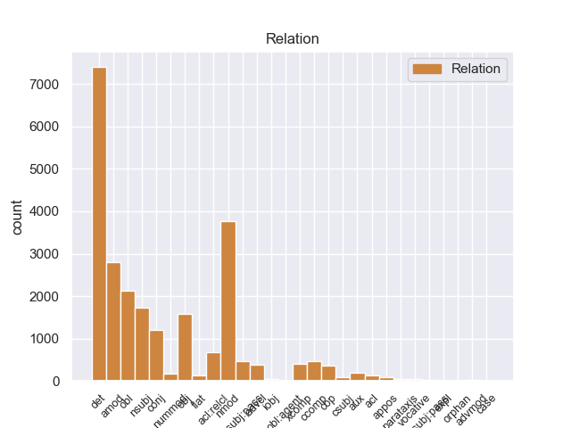
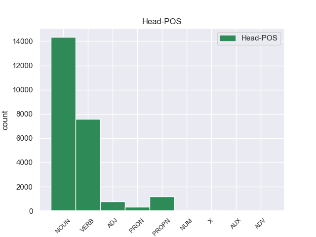
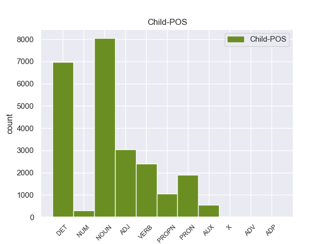

Distribution of features within this leaf



Agreement Rules sorted by frequency.
- When the dependent token is the determiner(det) of the head token, and the dependent token is DET.
1 Αυτό _ _ _ _ 0 _ _ _
2 μπορεί _ _ _ _ 0 _ _ _
3 να _ _ _ _ 0 _ _ _
4 μην _ _ _ _ 0 _ _ _
5 οδηγήσει _ _ _ _ 0 _ _ _
6 σ _ _ _ _ 0 _ _ _
7 τη _ _ _ _ 0 _ _ _
8 λήξη _ _ _ _ 0 _ _ _
9 του _ _ _ _ 0 _ _ _
10 εν _ _ _ _ 0 _ _ _
11 λόγω _ _ _ _ 0 _ _ _
12 ζητήματος _ _ _ _ 0 _ _ _
13 αλλά _ _ _ _ 0 _ _ _
14 , _ _ _ _ 0 _ _ _
15 σ _ _ _ _ 0 _ _ _
16 τη _ _ _ _ 0 _ _ _
17 μορφή _ _ _ _ 0 _ _ _
18 υπό _ _ _ _ 0 _ _ _
19 την _ _ _ _ 0 _ _ _
20 οποία _ _ _ _ 0 _ _ _
21 την _ _ _ _ 0 _ _ _
22 λάβαμε _ _ _ _ 0 _ _ _
23 , _ _ _ _ 0 _ _ _
24 αυτή _ _ _ _ 0 _ _ _
25 η _ _ _ _ 0 _ _ _
26 αίτηση _ _ _ _ 0 _ _ _
27 άρσης _ _ _ _ 0 _ _ _
28 της _ _ _ _ 0 _ _ _
29 ασυλίας _ _ _ _ 0 _ _ _
30 ήταν _ _ _ _ 0 _ _ _
31 , _ _ _ _ 0 _ _ _
32 κατά _ _ _ _ 0 _ _ _
33 την _ _ _ _ 0 _ _ _
34 άποψη _ _ _ _ 0 _ _ _
35 της _ _ _ _ 0 _ _ _
36 Επιτροπής _ _ _ _ 0 _ _ _
37 Νομικών _ _ _ _ 0 _ _ _
38 Θεμάτων _ _ _ _ 0 _ _ _
39 , _ _ _ _ 0 _ _ _
40 απαράδεκτη _ _ _ _ 0 _ _ _
41 , _ _ _ _ 0 _ _ _
42 άποψη _ _ _ _ 0 _ _ _
43 την _ _ _ _ 0 _ _ _
44 οποία _ _ _ _ 0 _ _ _
45 συνιστώ _ _ _ _ 0 _ _ _
46 σ _ _ _ _ 0 _ _ _
47 το ο DET _ Case=Acc|Gender=Neut|Number=Sing 48 det _ _
48 Σώμα σώμα NOUN _ Case=Acc|Gender=Neut|Number=Sing 0 _ _ _
49 να _ _ _ _ 0 _ _ _
50 υιοθετήσει _ _ _ _ 0 _ _ _
51 . _ _ _ _ 0 _ _ _
1 Αυτό _ _ _ _ 0 _ _ _
2 μπορεί _ _ _ _ 0 _ _ _
3 να _ _ _ _ 0 _ _ _
4 μην _ _ _ _ 0 _ _ _
5 οδηγήσει _ _ _ _ 0 _ _ _
6 σ _ _ _ _ 0 _ _ _
7 τη _ _ _ _ 0 _ _ _
8 λήξη _ _ _ _ 0 _ _ _
9 του _ _ _ _ 0 _ _ _
10 εν _ _ _ _ 0 _ _ _
11 λόγω _ _ _ _ 0 _ _ _
12 ζητήματος _ _ _ _ 0 _ _ _
13 αλλά _ _ _ _ 0 _ _ _
14 , _ _ _ _ 0 _ _ _
15 σ _ _ _ _ 0 _ _ _
16 τη _ _ _ _ 0 _ _ _
17 μορφή _ _ _ _ 0 _ _ _
18 υπό _ _ _ _ 0 _ _ _
19 την _ _ _ _ 0 _ _ _
20 οποία _ _ _ _ 0 _ _ _
21 την _ _ _ _ 0 _ _ _
22 λάβαμε _ _ _ _ 0 _ _ _
23 , _ _ _ _ 0 _ _ _
24 αυτή _ _ _ _ 0 _ _ _
25 η _ _ _ _ 0 _ _ _
26 αίτηση _ _ _ _ 0 _ _ _
27 άρσης _ _ _ _ 0 _ _ _
28 της _ _ _ _ 0 _ _ _
29 ασυλίας _ _ _ _ 0 _ _ _
30 ήταν _ _ _ _ 0 _ _ _
31 , _ _ _ _ 0 _ _ _
32 κατά _ _ _ _ 0 _ _ _
33 την _ _ _ _ 0 _ _ _
34 άποψη _ _ _ _ 0 _ _ _
35 της _ _ _ _ 0 _ _ _
36 Επιτροπής _ _ _ _ 0 _ _ _
37 Νομικών _ _ _ _ 0 _ _ _
38 Θεμάτων _ _ _ _ 0 _ _ _
39 , _ _ _ _ 0 _ _ _
40 απαράδεκτη απαράδεκτος ADJ _ Case=Nom|Gender=Fem|Number=Sing 42 amod _ _
41 , _ _ _ _ 0 _ _ _
42 άποψη άποψη NOUN _ Case=Nom|Gender=Fem|Number=Sing 0 _ _ _
43 την _ _ _ _ 0 _ _ _
44 οποία _ _ _ _ 0 _ _ _
45 συνιστώ _ _ _ _ 0 _ _ _
46 σ _ _ _ _ 0 _ _ _
47 το _ _ _ _ 0 _ _ _
48 Σώμα _ _ _ _ 0 _ _ _
49 να _ _ _ _ 0 _ _ _
50 υιοθετήσει _ _ _ _ 0 _ _ _
51 . _ _ _ _ 0 _ _ _
1 Αυτό _ _ _ _ 0 _ _ _
2 μπορεί _ _ _ _ 0 _ _ _
3 να _ _ _ _ 0 _ _ _
4 μην _ _ _ _ 0 _ _ _
5 οδηγήσει _ _ _ _ 0 _ _ _
6 σ _ _ _ _ 0 _ _ _
7 τη _ _ _ _ 0 _ _ _
8 λήξη _ _ _ _ 0 _ _ _
9 του _ _ _ _ 0 _ _ _
10 εν _ _ _ _ 0 _ _ _
11 λόγω _ _ _ _ 0 _ _ _
12 ζητήματος _ _ _ _ 0 _ _ _
13 αλλά _ _ _ _ 0 _ _ _
14 , _ _ _ _ 0 _ _ _
15 σ _ _ _ _ 0 _ _ _
16 τη _ _ _ _ 0 _ _ _
17 μορφή _ _ _ _ 0 _ _ _
18 υπό _ _ _ _ 0 _ _ _
19 την _ _ _ _ 0 _ _ _
20 οποία _ _ _ _ 0 _ _ _
21 την _ _ _ _ 0 _ _ _
22 λάβαμε _ _ _ _ 0 _ _ _
23 , _ _ _ _ 0 _ _ _
24 αυτή _ _ _ _ 0 _ _ _
25 η _ _ _ _ 0 _ _ _
26 αίτηση _ _ _ _ 0 _ _ _
27 άρσης _ _ _ _ 0 _ _ _
28 της _ _ _ _ 0 _ _ _
29 ασυλίας _ _ _ _ 0 _ _ _
30 ήταν _ _ _ _ 0 _ _ _
31 , _ _ _ _ 0 _ _ _
32 κατά _ _ _ _ 0 _ _ _
33 την _ _ _ _ 0 _ _ _
34 άποψη άποψη NOUN _ Case=Acc|Gender=Fem|Number=Sing 0 _ _ _
35 της _ _ _ _ 0 _ _ _
36 Επιτροπής επιτροπή NOUN _ Case=Gen|Gender=Fem|Number=Sing 34 nmod _ _
37 Νομικών _ _ _ _ 0 _ _ _
38 Θεμάτων _ _ _ _ 0 _ _ _
39 , _ _ _ _ 0 _ _ _
40 απαράδεκτη _ _ _ _ 0 _ _ _
41 , _ _ _ _ 0 _ _ _
42 άποψη _ _ _ _ 0 _ _ _
43 την _ _ _ _ 0 _ _ _
44 οποία _ _ _ _ 0 _ _ _
45 συνιστώ _ _ _ _ 0 _ _ _
46 σ _ _ _ _ 0 _ _ _
47 το _ _ _ _ 0 _ _ _
48 Σώμα _ _ _ _ 0 _ _ _
49 να _ _ _ _ 0 _ _ _
50 υιοθετήσει _ _ _ _ 0 _ _ _
51 . _ _ _ _ 0 _ _ _
1 Αυτό _ _ _ _ 0 _ _ _
2 μπορεί μπορώ VERB _ Aspect=Imp|Mood=Ind|Number=Sing|Person=3|Tense=Pres|VerbForm=Fin|Voice=Act 0 _ _ _
3 να _ _ _ _ 0 _ _ _
4 μην _ _ _ _ 0 _ _ _
5 οδηγήσει _ _ _ _ 0 _ _ _
6 σ _ _ _ _ 0 _ _ _
7 τη _ _ _ _ 0 _ _ _
8 λήξη _ _ _ _ 0 _ _ _
9 του _ _ _ _ 0 _ _ _
10 εν _ _ _ _ 0 _ _ _
11 λόγω _ _ _ _ 0 _ _ _
12 ζητήματος _ _ _ _ 0 _ _ _
13 αλλά _ _ _ _ 0 _ _ _
14 , _ _ _ _ 0 _ _ _
15 σ _ _ _ _ 0 _ _ _
16 τη _ _ _ _ 0 _ _ _
17 μορφή _ _ _ _ 0 _ _ _
18 υπό _ _ _ _ 0 _ _ _
19 την _ _ _ _ 0 _ _ _
20 οποία _ _ _ _ 0 _ _ _
21 την _ _ _ _ 0 _ _ _
22 λάβαμε _ _ _ _ 0 _ _ _
23 , _ _ _ _ 0 _ _ _
24 αυτή _ _ _ _ 0 _ _ _
25 η _ _ _ _ 0 _ _ _
26 αίτηση αίτηση NOUN _ Case=Nom|Gender=Fem|Number=Sing 2 nsubj _ _
27 άρσης _ _ _ _ 0 _ _ _
28 της _ _ _ _ 0 _ _ _
29 ασυλίας _ _ _ _ 0 _ _ _
30 ήταν _ _ _ _ 0 _ _ _
31 , _ _ _ _ 0 _ _ _
32 κατά _ _ _ _ 0 _ _ _
33 την _ _ _ _ 0 _ _ _
34 άποψη _ _ _ _ 0 _ _ _
35 της _ _ _ _ 0 _ _ _
36 Επιτροπής _ _ _ _ 0 _ _ _
37 Νομικών _ _ _ _ 0 _ _ _
38 Θεμάτων _ _ _ _ 0 _ _ _
39 , _ _ _ _ 0 _ _ _
40 απαράδεκτη _ _ _ _ 0 _ _ _
41 , _ _ _ _ 0 _ _ _
42 άποψη _ _ _ _ 0 _ _ _
43 την _ _ _ _ 0 _ _ _
44 οποία _ _ _ _ 0 _ _ _
45 συνιστώ _ _ _ _ 0 _ _ _
46 σ _ _ _ _ 0 _ _ _
47 το _ _ _ _ 0 _ _ _
48 Σώμα _ _ _ _ 0 _ _ _
49 να _ _ _ _ 0 _ _ _
50 υιοθετήσει _ _ _ _ 0 _ _ _
51 . _ _ _ _ 0 _ _ _
1 Αυτό _ _ _ _ 0 _ _ _
2 μπορεί _ _ _ _ 0 _ _ _
3 να _ _ _ _ 0 _ _ _
4 μην _ _ _ _ 0 _ _ _
5 οδηγήσει _ _ _ _ 0 _ _ _
6 σ _ _ _ _ 0 _ _ _
7 τη _ _ _ _ 0 _ _ _
8 λήξη _ _ _ _ 0 _ _ _
9 του _ _ _ _ 0 _ _ _
10 εν _ _ _ _ 0 _ _ _
11 λόγω _ _ _ _ 0 _ _ _
12 ζητήματος _ _ _ _ 0 _ _ _
13 αλλά _ _ _ _ 0 _ _ _
14 , _ _ _ _ 0 _ _ _
15 σ _ _ _ _ 0 _ _ _
16 τη _ _ _ _ 0 _ _ _
17 μορφή _ _ _ _ 0 _ _ _
18 υπό _ _ _ _ 0 _ _ _
19 την _ _ _ _ 0 _ _ _
20 οποία _ _ _ _ 0 _ _ _
21 την _ _ _ _ 0 _ _ _
22 λάβαμε _ _ _ _ 0 _ _ _
23 , _ _ _ _ 0 _ _ _
24 αυτή _ _ _ _ 0 _ _ _
25 η _ _ _ _ 0 _ _ _
26 αίτηση _ _ _ _ 0 _ _ _
27 άρσης _ _ _ _ 0 _ _ _
28 της _ _ _ _ 0 _ _ _
29 ασυλίας _ _ _ _ 0 _ _ _
30 ήταν _ _ _ _ 0 _ _ _
31 , _ _ _ _ 0 _ _ _
32 κατά _ _ _ _ 0 _ _ _
33 την _ _ _ _ 0 _ _ _
34 άποψη _ _ _ _ 0 _ _ _
35 της _ _ _ _ 0 _ _ _
36 Επιτροπής _ _ _ _ 0 _ _ _
37 Νομικών _ _ _ _ 0 _ _ _
38 Θεμάτων _ _ _ _ 0 _ _ _
39 , _ _ _ _ 0 _ _ _
40 απαράδεκτη _ _ _ _ 0 _ _ _
41 , _ _ _ _ 0 _ _ _
42 άποψη _ _ _ _ 0 _ _ _
43 την _ _ _ _ 0 _ _ _
44 οποία _ _ _ _ 0 _ _ _
45 συνιστώ _ _ _ _ 0 _ _ _
46 σ _ _ _ _ 0 _ _ _
47 το _ _ _ _ 0 _ _ _
48 Σώμα σώμα NOUN _ Case=Acc|Gender=Neut|Number=Sing 50 obl _ _
49 να _ _ _ _ 0 _ _ _
50 υιοθετήσει υιοθετήζω VERB _ Aspect=Perf|Mood=Ind|Number=Sing|Person=3|VerbForm=Fin|Voice=Act 0 _ _ _
51 . _ _ _ _ 0 _ _ _
1 Υπάρχει _ _ _ _ 0 _ _ _
2 μια _ _ _ _ 0 _ _ _
3 άλλη _ _ _ _ 0 _ _ _
4 πλευρά _ _ _ _ 0 _ _ _
5 της _ _ _ _ 0 _ _ _
6 υπόθεσης _ _ _ _ 0 _ _ _
7 , _ _ _ _ 0 _ _ _
8 η _ _ _ _ 0 _ _ _
9 οποία _ _ _ _ 0 _ _ _
10 , _ _ _ _ 0 _ _ _
11 δυστυχώς _ _ _ _ 0 _ _ _
12 , _ _ _ _ 0 _ _ _
13 γεννά _ _ _ _ 0 _ _ _
14 την _ _ _ _ 0 _ _ _
15 υποψία _ _ _ _ 0 _ _ _
16 ότι _ _ _ _ 0 _ _ _
17 η _ _ _ _ 0 _ _ _
18 πρόνοια _ _ _ _ 0 _ _ _
19 σχετικά _ _ _ _ 0 _ _ _
20 με _ _ _ _ 0 _ _ _
21 τις _ _ _ _ 0 _ _ _
22 προϋποθέσεις _ _ _ _ 0 _ _ _
23 ελεύθερης _ _ _ _ 0 _ _ _
24 διεξαγωγής _ _ _ _ 0 _ _ _
25 του _ _ _ _ 0 _ _ _
26 κοινοβουλευτικού _ _ _ _ 0 _ _ _
27 έργου _ _ _ _ 0 _ _ _
28 δεν _ _ _ _ 0 _ _ _
29 απασχόλησε απασχόώ VERB _ Aspect=Perf|Mood=Ind|Number=Sing|Person=3|Tense=Past|VerbForm=Fin|Voice=Act 0 _ _ _
30 επαρκώς _ _ _ _ 0 _ _ _
31 την _ _ _ _ 0 _ _ _
32 εισαγγελική _ _ _ _ 0 _ _ _
33 αρχή αρχή NOUN _ Case=Acc|Gender=Fem|Number=Sing 29 obj _ _
34 : _ _ _ _ 0 _ _ _
1 Αυτό _ _ _ _ 0 _ _ _
2 μπορεί _ _ _ _ 0 _ _ _
3 να _ _ _ _ 0 _ _ _
4 μην _ _ _ _ 0 _ _ _
5 οδηγήσει _ _ _ _ 0 _ _ _
6 σ _ _ _ _ 0 _ _ _
7 τη _ _ _ _ 0 _ _ _
8 λήξη _ _ _ _ 0 _ _ _
9 του _ _ _ _ 0 _ _ _
10 εν _ _ _ _ 0 _ _ _
11 λόγω _ _ _ _ 0 _ _ _
12 ζητήματος _ _ _ _ 0 _ _ _
13 αλλά _ _ _ _ 0 _ _ _
14 , _ _ _ _ 0 _ _ _
15 σ _ _ _ _ 0 _ _ _
16 τη _ _ _ _ 0 _ _ _
17 μορφή _ _ _ _ 0 _ _ _
18 υπό _ _ _ _ 0 _ _ _
19 την _ _ _ _ 0 _ _ _
20 οποία _ _ _ _ 0 _ _ _
21 την _ _ _ _ 0 _ _ _
22 λάβαμε _ _ _ _ 0 _ _ _
23 , _ _ _ _ 0 _ _ _
24 αυτή _ _ _ _ 0 _ _ _
25 η _ _ _ _ 0 _ _ _
26 αίτηση _ _ _ _ 0 _ _ _
27 άρσης _ _ _ _ 0 _ _ _
28 της _ _ _ _ 0 _ _ _
29 ασυλίας _ _ _ _ 0 _ _ _
30 ήταν _ _ _ _ 0 _ _ _
31 , _ _ _ _ 0 _ _ _
32 κατά _ _ _ _ 0 _ _ _
33 την _ _ _ _ 0 _ _ _
34 άποψη _ _ _ _ 0 _ _ _
35 της _ _ _ _ 0 _ _ _
36 Επιτροπής _ _ _ _ 0 _ _ _
37 Νομικών _ _ _ _ 0 _ _ _
38 Θεμάτων _ _ _ _ 0 _ _ _
39 , _ _ _ _ 0 _ _ _
40 απαράδεκτη _ _ _ _ 0 _ _ _
41 , _ _ _ _ 0 _ _ _
42 άποψη άποψη NOUN _ Case=Nom|Gender=Fem|Number=Sing 0 _ _ _
43 την _ _ _ _ 0 _ _ _
44 οποία _ _ _ _ 0 _ _ _
45 συνιστώ _ _ _ _ 0 _ _ _
46 σ _ _ _ _ 0 _ _ _
47 το _ _ _ _ 0 _ _ _
48 Σώμα _ _ _ _ 0 _ _ _
49 να _ _ _ _ 0 _ _ _
50 υιοθετήσει υιοθετήζω VERB _ Aspect=Perf|Mood=Ind|Number=Sing|Person=3|VerbForm=Fin|Voice=Act 42 acl:relcl _ _
51 . _ _ _ _ 0 _ _ _
1 Αυτό _ _ _ _ 0 _ _ _
2 μπορεί μπορώ VERB _ Aspect=Imp|Mood=Ind|Number=Sing|Person=3|Tense=Pres|VerbForm=Fin|Voice=Act 0 _ _ _
3 να _ _ _ _ 0 _ _ _
4 μην _ _ _ _ 0 _ _ _
5 οδηγήσει _ _ _ _ 0 _ _ _
6 σ _ _ _ _ 0 _ _ _
7 τη _ _ _ _ 0 _ _ _
8 λήξη _ _ _ _ 0 _ _ _
9 του _ _ _ _ 0 _ _ _
10 εν _ _ _ _ 0 _ _ _
11 λόγω _ _ _ _ 0 _ _ _
12 ζητήματος _ _ _ _ 0 _ _ _
13 αλλά _ _ _ _ 0 _ _ _
14 , _ _ _ _ 0 _ _ _
15 σ _ _ _ _ 0 _ _ _
16 τη _ _ _ _ 0 _ _ _
17 μορφή _ _ _ _ 0 _ _ _
18 υπό _ _ _ _ 0 _ _ _
19 την _ _ _ _ 0 _ _ _
20 οποία _ _ _ _ 0 _ _ _
21 την _ _ _ _ 0 _ _ _
22 λάβαμε _ _ _ _ 0 _ _ _
23 , _ _ _ _ 0 _ _ _
24 αυτή _ _ _ _ 0 _ _ _
25 η _ _ _ _ 0 _ _ _
26 αίτηση _ _ _ _ 0 _ _ _
27 άρσης _ _ _ _ 0 _ _ _
28 της _ _ _ _ 0 _ _ _
29 ασυλίας _ _ _ _ 0 _ _ _
30 ήταν _ _ _ _ 0 _ _ _
31 , _ _ _ _ 0 _ _ _
32 κατά _ _ _ _ 0 _ _ _
33 την _ _ _ _ 0 _ _ _
34 άποψη _ _ _ _ 0 _ _ _
35 της _ _ _ _ 0 _ _ _
36 Επιτροπής _ _ _ _ 0 _ _ _
37 Νομικών _ _ _ _ 0 _ _ _
38 Θεμάτων _ _ _ _ 0 _ _ _
39 , _ _ _ _ 0 _ _ _
40 απαράδεκτη _ _ _ _ 0 _ _ _
41 , _ _ _ _ 0 _ _ _
42 άποψη άποψη NOUN _ Case=Nom|Gender=Fem|Number=Sing 2 conj _ _
43 την _ _ _ _ 0 _ _ _
44 οποία _ _ _ _ 0 _ _ _
45 συνιστώ _ _ _ _ 0 _ _ _
46 σ _ _ _ _ 0 _ _ _
47 το _ _ _ _ 0 _ _ _
48 Σώμα _ _ _ _ 0 _ _ _
49 να _ _ _ _ 0 _ _ _
50 υιοθετήσει _ _ _ _ 0 _ _ _
51 . _ _ _ _ 0 _ _ _
1 Αυτό _ _ _ _ 0 _ _ _
2 μπορεί _ _ _ _ 0 _ _ _
3 να _ _ _ _ 0 _ _ _
4 μην _ _ _ _ 0 _ _ _
5 οδηγήσει _ _ _ _ 0 _ _ _
6 σ _ _ _ _ 0 _ _ _
7 τη _ _ _ _ 0 _ _ _
8 λήξη _ _ _ _ 0 _ _ _
9 του _ _ _ _ 0 _ _ _
10 εν _ _ _ _ 0 _ _ _
11 λόγω _ _ _ _ 0 _ _ _
12 ζητήματος _ _ _ _ 0 _ _ _
13 αλλά _ _ _ _ 0 _ _ _
14 , _ _ _ _ 0 _ _ _
15 σ _ _ _ _ 0 _ _ _
16 τη _ _ _ _ 0 _ _ _
17 μορφή _ _ _ _ 0 _ _ _
18 υπό _ _ _ _ 0 _ _ _
19 την _ _ _ _ 0 _ _ _
20 οποία _ _ _ _ 0 _ _ _
21 την _ _ _ _ 0 _ _ _
22 λάβαμε _ _ _ _ 0 _ _ _
23 , _ _ _ _ 0 _ _ _
24 αυτή αυτός PRON _ Case=Nom|Gender=Fem|Number=Sing|Person=3|PronType=Dem 26 det _ _
25 η _ _ _ _ 0 _ _ _
26 αίτηση αίτηση NOUN _ Case=Nom|Gender=Fem|Number=Sing 0 _ _ _
27 άρσης _ _ _ _ 0 _ _ _
28 της _ _ _ _ 0 _ _ _
29 ασυλίας _ _ _ _ 0 _ _ _
30 ήταν _ _ _ _ 0 _ _ _
31 , _ _ _ _ 0 _ _ _
32 κατά _ _ _ _ 0 _ _ _
33 την _ _ _ _ 0 _ _ _
34 άποψη _ _ _ _ 0 _ _ _
35 της _ _ _ _ 0 _ _ _
36 Επιτροπής _ _ _ _ 0 _ _ _
37 Νομικών _ _ _ _ 0 _ _ _
38 Θεμάτων _ _ _ _ 0 _ _ _
39 , _ _ _ _ 0 _ _ _
40 απαράδεκτη _ _ _ _ 0 _ _ _
41 , _ _ _ _ 0 _ _ _
42 άποψη _ _ _ _ 0 _ _ _
43 την _ _ _ _ 0 _ _ _
44 οποία _ _ _ _ 0 _ _ _
45 συνιστώ _ _ _ _ 0 _ _ _
46 σ _ _ _ _ 0 _ _ _
47 το _ _ _ _ 0 _ _ _
48 Σώμα _ _ _ _ 0 _ _ _
49 να _ _ _ _ 0 _ _ _
50 υιοθετήσει _ _ _ _ 0 _ _ _
51 . _ _ _ _ 0 _ _ _
1 Αυτό αυτός PRON _ Case=Nom|Gender=Neut|Number=Sing|Person=3|PronType=Dem 2 nsubj _ _
2 μπορεί μπορώ VERB _ Aspect=Imp|Mood=Ind|Number=Sing|Person=3|Tense=Pres|VerbForm=Fin|Voice=Act 0 _ _ _
3 να _ _ _ _ 0 _ _ _
4 μην _ _ _ _ 0 _ _ _
5 οδηγήσει _ _ _ _ 0 _ _ _
6 σ _ _ _ _ 0 _ _ _
7 τη _ _ _ _ 0 _ _ _
8 λήξη _ _ _ _ 0 _ _ _
9 του _ _ _ _ 0 _ _ _
10 εν _ _ _ _ 0 _ _ _
11 λόγω _ _ _ _ 0 _ _ _
12 ζητήματος _ _ _ _ 0 _ _ _
13 αλλά _ _ _ _ 0 _ _ _
14 , _ _ _ _ 0 _ _ _
15 σ _ _ _ _ 0 _ _ _
16 τη _ _ _ _ 0 _ _ _
17 μορφή _ _ _ _ 0 _ _ _
18 υπό _ _ _ _ 0 _ _ _
19 την _ _ _ _ 0 _ _ _
20 οποία _ _ _ _ 0 _ _ _
21 την _ _ _ _ 0 _ _ _
22 λάβαμε _ _ _ _ 0 _ _ _
23 , _ _ _ _ 0 _ _ _
24 αυτή _ _ _ _ 0 _ _ _
25 η _ _ _ _ 0 _ _ _
26 αίτηση _ _ _ _ 0 _ _ _
27 άρσης _ _ _ _ 0 _ _ _
28 της _ _ _ _ 0 _ _ _
29 ασυλίας _ _ _ _ 0 _ _ _
30 ήταν _ _ _ _ 0 _ _ _
31 , _ _ _ _ 0 _ _ _
32 κατά _ _ _ _ 0 _ _ _
33 την _ _ _ _ 0 _ _ _
34 άποψη _ _ _ _ 0 _ _ _
35 της _ _ _ _ 0 _ _ _
36 Επιτροπής _ _ _ _ 0 _ _ _
37 Νομικών _ _ _ _ 0 _ _ _
38 Θεμάτων _ _ _ _ 0 _ _ _
39 , _ _ _ _ 0 _ _ _
40 απαράδεκτη _ _ _ _ 0 _ _ _
41 , _ _ _ _ 0 _ _ _
42 άποψη _ _ _ _ 0 _ _ _
43 την _ _ _ _ 0 _ _ _
44 οποία _ _ _ _ 0 _ _ _
45 συνιστώ _ _ _ _ 0 _ _ _
46 σ _ _ _ _ 0 _ _ _
47 το _ _ _ _ 0 _ _ _
48 Σώμα _ _ _ _ 0 _ _ _
49 να _ _ _ _ 0 _ _ _
50 υιοθετήσει _ _ _ _ 0 _ _ _
51 . _ _ _ _ 0 _ _ _
1 Αυτό _ _ _ _ 0 _ _ _
2 μπορεί _ _ _ _ 0 _ _ _
3 να _ _ _ _ 0 _ _ _
4 μην _ _ _ _ 0 _ _ _
5 οδηγήσει _ _ _ _ 0 _ _ _
6 σ _ _ _ _ 0 _ _ _
7 τη _ _ _ _ 0 _ _ _
8 λήξη _ _ _ _ 0 _ _ _
9 του _ _ _ _ 0 _ _ _
10 εν _ _ _ _ 0 _ _ _
11 λόγω _ _ _ _ 0 _ _ _
12 ζητήματος _ _ _ _ 0 _ _ _
13 αλλά _ _ _ _ 0 _ _ _
14 , _ _ _ _ 0 _ _ _
15 σ _ _ _ _ 0 _ _ _
16 τη _ _ _ _ 0 _ _ _
17 μορφή _ _ _ _ 0 _ _ _
18 υπό _ _ _ _ 0 _ _ _
19 την _ _ _ _ 0 _ _ _
20 οποία _ _ _ _ 0 _ _ _
21 την _ _ _ _ 0 _ _ _
22 λάβαμε _ _ _ _ 0 _ _ _
23 , _ _ _ _ 0 _ _ _
24 αυτή _ _ _ _ 0 _ _ _
25 η _ _ _ _ 0 _ _ _
26 αίτηση _ _ _ _ 0 _ _ _
27 άρσης _ _ _ _ 0 _ _ _
28 της _ _ _ _ 0 _ _ _
29 ασυλίας _ _ _ _ 0 _ _ _
30 ήταν είμαι AUX _ Aspect=Imp|Mood=Ind|Number=Sing|Person=3|Tense=Past|VerbForm=Fin|Voice=Pass 42 cop _ _
31 , _ _ _ _ 0 _ _ _
32 κατά _ _ _ _ 0 _ _ _
33 την _ _ _ _ 0 _ _ _
34 άποψη _ _ _ _ 0 _ _ _
35 της _ _ _ _ 0 _ _ _
36 Επιτροπής _ _ _ _ 0 _ _ _
37 Νομικών _ _ _ _ 0 _ _ _
38 Θεμάτων _ _ _ _ 0 _ _ _
39 , _ _ _ _ 0 _ _ _
40 απαράδεκτη _ _ _ _ 0 _ _ _
41 , _ _ _ _ 0 _ _ _
42 άποψη άποψη NOUN _ Case=Nom|Gender=Fem|Number=Sing 0 _ _ _
43 την _ _ _ _ 0 _ _ _
44 οποία _ _ _ _ 0 _ _ _
45 συνιστώ _ _ _ _ 0 _ _ _
46 σ _ _ _ _ 0 _ _ _
47 το _ _ _ _ 0 _ _ _
48 Σώμα _ _ _ _ 0 _ _ _
49 να _ _ _ _ 0 _ _ _
50 υιοθετήσει _ _ _ _ 0 _ _ _
51 . _ _ _ _ 0 _ _ _
1 Συνεπώς _ _ _ _ 0 _ _ _
2 , _ _ _ _ 0 _ _ _
3 η _ _ _ _ 0 _ _ _
4 παρούσα _ _ _ _ 0 _ _ _
5 αίτηση _ _ _ _ 0 _ _ _
6 άρσης _ _ _ _ 0 _ _ _
7 της _ _ _ _ 0 _ _ _
8 ασυλίας _ _ _ _ 0 _ _ _
9 δεν _ _ _ _ 0 _ _ _
10 αφορά _ _ _ _ 0 _ _ _
11 το _ _ _ _ 0 _ _ _
12 ζήτημα _ _ _ _ 0 _ _ _
13 εάν _ _ _ _ 0 _ _ _
14 οι _ _ _ _ 0 _ _ _
15 διώξεις _ _ _ _ 0 _ _ _
16 μπορούν μπορώ VERB _ Aspect=Imp|Mood=Ind|Number=Plur|Person=3|Tense=Pres|VerbForm=Fin|Voice=Act 0 _ _ _
17 ή _ _ _ _ 0 _ _ _
18 πρέπει _ _ _ _ 0 _ _ _
19 να _ _ _ _ 0 _ _ _
20 συνεχιστούν συνεχινω VERB _ Aspect=Imp|Mood=Ind|Number=Plur|Person=3|Tense=Pres|VerbForm=Fin|Voice=Pass 16 conj _ _
21 με _ _ _ _ 0 _ _ _
22 βάση _ _ _ _ 0 _ _ _
23 το _ _ _ _ 0 _ _ _
24 γαλλικό _ _ _ _ 0 _ _ _
25 δίκαιο _ _ _ _ 0 _ _ _
26 . _ _ _ _ 0 _ _ _
1 Πρώην _ _ _ _ 0 _ _ _
2 Υπουργός υπουργός NOUN _ Case=Nom|Gender=Masc|Number=Sing 0 _ _ _
3 της _ _ _ _ 0 _ _ _
4 Κυβέρνησης _ _ _ _ 0 _ _ _
5 του _ _ _ _ 0 _ _ _
6 Χοσέ _ _ _ _ 0 _ _ _
7 Μαρία _ _ _ _ 0 _ _ _
8 Αθνάρ _ _ _ _ 0 _ _ _
9 , _ _ _ _ 0 _ _ _
10 σ _ _ _ _ 0 _ _ _
11 την _ _ _ _ 0 _ _ _
12 Ισπανία Ισπανία PROPN _ Case=Acc|Gender=Fem|Number=Sing 2 nmod _ _
13 , _ _ _ _ 0 _ _ _
14 καταδικάστηκε _ _ _ _ 0 _ _ _
15 σε _ _ _ _ 0 _ _ _
16 έξι _ _ _ _ 0 _ _ _
17 έτη _ _ _ _ 0 _ _ _
18 κάθειρξης _ _ _ _ 0 _ _ _
19 για _ _ _ _ 0 _ _ _
20 ένα _ _ _ _ 0 _ _ _
21 πολύ _ _ _ _ 0 _ _ _
22 μεγάλο _ _ _ _ 0 _ _ _
23 σκάνδαλο _ _ _ _ 0 _ _ _
24 διαφθοράς _ _ _ _ 0 _ _ _
25 . _ _ _ _ 0 _ _ _
1 πρόκειται _ _ _ _ 0 _ _ _
2 για _ _ _ _ 0 _ _ _
3 αυτό _ _ _ _ 0 _ _ _
4 το _ _ _ _ 0 _ _ _
5 οποίο _ _ _ _ 0 _ _ _
6 αποκαλύφθηκε _ _ _ _ 0 _ _ _
7 κατά _ _ _ _ 0 _ _ _
8 τη _ _ _ _ 0 _ _ _
9 διάρκεια _ _ _ _ 0 _ _ _
10 αυτής _ _ _ _ 0 _ _ _
11 της _ _ _ _ 0 _ _ _
12 διαδικασίας _ _ _ _ 0 _ _ _
13 , _ _ _ _ 0 _ _ _
14 ότι _ _ _ _ 0 _ _ _
15 ο _ _ _ _ 0 _ _ _
16 Εισαγγελέας _ _ _ _ 0 _ _ _
17 κάποια _ _ _ _ 0 _ _ _
18 στιγμή _ _ _ _ 0 _ _ _
19 ζήτησε _ _ _ _ 0 _ _ _
20 από _ _ _ _ 0 _ _ _
21 την _ _ _ _ 0 _ _ _
22 Πρόεδρο _ _ _ _ 0 _ _ _
23 του _ _ _ _ 0 _ _ _
24 Σώματος _ _ _ _ 0 _ _ _
25 , _ _ _ _ 0 _ _ _
26 την _ _ _ _ 0 _ _ _
27 προκάτοχό _ _ _ _ 0 _ _ _
28 σας _ _ _ _ 0 _ _ _
29 , _ _ _ _ 0 _ _ _
30 λεπτομέρειες _ _ _ _ 0 _ _ _
31 για _ _ _ _ 0 _ _ _
32 την _ _ _ _ 0 _ _ _
33 ψήφο _ _ _ _ 0 _ _ _
34 που _ _ _ _ 0 _ _ _
35 έχουν _ _ _ _ 0 _ _ _
36 δώσει _ _ _ _ 0 _ _ _
37 οι _ _ _ _ 0 _ _ _
38 δύο _ _ _ _ 0 _ _ _
39 συγκεκριμένοι _ _ _ _ 0 _ _ _
40 βουλευτές _ _ _ _ 0 _ _ _
41 προκειμένου _ _ _ _ 0 _ _ _
42 να _ _ _ _ 0 _ _ _
43 διευκρινιστεί διευκρινιώ VERB _ Aspect=Perf|Mood=Ind|Number=Sing|Person=3|VerbForm=Fin|Voice=Pass 0 _ _ _
44 περαιτέρω _ _ _ _ 0 _ _ _
45 η _ _ _ _ 0 _ _ _
46 πιθανότητα πιθανότητα NOUN _ Case=Nom|Gender=Fem|Number=Sing 43 nsubj:pass _ _
47 να _ _ _ _ 0 _ _ _
48 είχαν _ _ _ _ 0 _ _ _
49 ασκήσει _ _ _ _ 0 _ _ _
50 αθέμιτη _ _ _ _ 0 _ _ _
51 επιρροή _ _ _ _ 0 _ _ _
52 . _ _ _ _ 0 _ _ _
1 Αυτό _ _ _ _ 0 _ _ _
2 μπορεί μπορώ VERB _ Aspect=Imp|Mood=Ind|Number=Sing|Person=3|Tense=Pres|VerbForm=Fin|Voice=Act 0 _ _ _
3 να _ _ _ _ 0 _ _ _
4 μην _ _ _ _ 0 _ _ _
5 οδηγήσει οδηγήσω VERB _ Aspect=Perf|Mood=Ind|Number=Sing|Person=3|VerbForm=Fin|Voice=Act 2 xcomp _ _
6 σ _ _ _ _ 0 _ _ _
7 τη _ _ _ _ 0 _ _ _
8 λήξη _ _ _ _ 0 _ _ _
9 του _ _ _ _ 0 _ _ _
10 εν _ _ _ _ 0 _ _ _
11 λόγω _ _ _ _ 0 _ _ _
12 ζητήματος _ _ _ _ 0 _ _ _
13 αλλά _ _ _ _ 0 _ _ _
14 , _ _ _ _ 0 _ _ _
15 σ _ _ _ _ 0 _ _ _
16 τη _ _ _ _ 0 _ _ _
17 μορφή _ _ _ _ 0 _ _ _
18 υπό _ _ _ _ 0 _ _ _
19 την _ _ _ _ 0 _ _ _
20 οποία _ _ _ _ 0 _ _ _
21 την _ _ _ _ 0 _ _ _
22 λάβαμε _ _ _ _ 0 _ _ _
23 , _ _ _ _ 0 _ _ _
24 αυτή _ _ _ _ 0 _ _ _
25 η _ _ _ _ 0 _ _ _
26 αίτηση _ _ _ _ 0 _ _ _
27 άρσης _ _ _ _ 0 _ _ _
28 της _ _ _ _ 0 _ _ _
29 ασυλίας _ _ _ _ 0 _ _ _
30 ήταν _ _ _ _ 0 _ _ _
31 , _ _ _ _ 0 _ _ _
32 κατά _ _ _ _ 0 _ _ _
33 την _ _ _ _ 0 _ _ _
34 άποψη _ _ _ _ 0 _ _ _
35 της _ _ _ _ 0 _ _ _
36 Επιτροπής _ _ _ _ 0 _ _ _
37 Νομικών _ _ _ _ 0 _ _ _
38 Θεμάτων _ _ _ _ 0 _ _ _
39 , _ _ _ _ 0 _ _ _
40 απαράδεκτη _ _ _ _ 0 _ _ _
41 , _ _ _ _ 0 _ _ _
42 άποψη _ _ _ _ 0 _ _ _
43 την _ _ _ _ 0 _ _ _
44 οποία _ _ _ _ 0 _ _ _
45 συνιστώ _ _ _ _ 0 _ _ _
46 σ _ _ _ _ 0 _ _ _
47 το _ _ _ _ 0 _ _ _
48 Σώμα _ _ _ _ 0 _ _ _
49 να _ _ _ _ 0 _ _ _
50 υιοθετήσει _ _ _ _ 0 _ _ _
51 . _ _ _ _ 0 _ _ _
1 Πρέπει _ _ _ _ 0 _ _ _
2 να _ _ _ _ 0 _ _ _
3 επισημανθεί επισημίζω VERB _ Aspect=Perf|Mood=Ind|Number=Sing|Person=3|VerbForm=Fin|Voice=Pass 0 _ _ _
4 ότι _ _ _ _ 0 _ _ _
5 ο _ _ _ _ 0 _ _ _
6 Εισαγγελέας _ _ _ _ 0 _ _ _
7 Πλημμελειοδικών _ _ _ _ 0 _ _ _
8 υποστήριξε υποστοβάλλω VERB _ Aspect=Perf|Mood=Ind|Number=Sing|Person=3|Tense=Past|VerbForm=Fin|Voice=Act 3 ccomp _ _
9 σθεναρά _ _ _ _ 0 _ _ _
10 την _ _ _ _ 0 _ _ _
11 αίτηση _ _ _ _ 0 _ _ _
12 επιβολής _ _ _ _ 0 _ _ _
13 μέτρων _ _ _ _ 0 _ _ _
14 δικαστικής _ _ _ _ 0 _ _ _
15 επιτήρησης _ _ _ _ 0 _ _ _
16 που _ _ _ _ 0 _ _ _
17 υπέβαλαν _ _ _ _ 0 _ _ _
18 οι _ _ _ _ 0 _ _ _
19 ανακριτές _ _ _ _ 0 _ _ _
20 , _ _ _ _ 0 _ _ _
21 υπογραμμίζοντας _ _ _ _ 0 _ _ _
22 τη _ _ _ _ 0 _ _ _
23 σοβαρότητα _ _ _ _ 0 _ _ _
24 και _ _ _ _ 0 _ _ _
25 τη _ _ _ _ 0 _ _ _
26 φύση _ _ _ _ 0 _ _ _
27 της _ _ _ _ 0 _ _ _
28 υπόθεσης _ _ _ _ 0 _ _ _
29 και _ _ _ _ 0 _ _ _
30 χαρακτηρίζοντας _ _ _ _ 0 _ _ _
31 μάλιστα _ _ _ _ 0 _ _ _
32 την _ _ _ _ 0 _ _ _
33 αίτηση _ _ _ _ 0 _ _ _
34 αυτή _ _ _ _ 0 _ _ _
35 ως _ _ _ _ 0 _ _ _
36 απαραίτητη _ _ _ _ 0 _ _ _
37 επί _ _ _ _ 0 _ _ _
38 της _ _ _ _ 0 _ _ _
39 αρχής _ _ _ _ 0 _ _ _
40 . _ _ _ _ 0 _ _ _
1 Τόσο _ _ _ _ 0 _ _ _
2 το _ _ _ _ 0 _ _ _
3 ζήτημα _ _ _ _ 0 _ _ _
4 της _ _ _ _ 0 _ _ _
5 ασυλίας _ _ _ _ 0 _ _ _
6 όσο _ _ _ _ 0 _ _ _
7 και _ _ _ _ 0 _ _ _
8 η _ _ _ _ 0 _ _ _
9 αίτηση _ _ _ _ 0 _ _ _
10 για _ _ _ _ 0 _ _ _
11 άρση άρση NOUN _ Case=Acc|Gender=Fem|Number=Sing 0 _ _ _
12 της μου PRON _ Case=Gen|Gender=Fem|Number=Sing|Person=3|Poss=Yes|PronType=Prs 11 nmod _ _
13 έχουν _ _ _ _ 0 _ _ _
14 σχέση _ _ _ _ 0 _ _ _
15 μόνο _ _ _ _ 0 _ _ _
16 με _ _ _ _ 0 _ _ _
17 το _ _ _ _ 0 _ _ _
18 εάν _ _ _ _ 0 _ _ _
19 το _ _ _ _ 0 _ _ _
20 Δικαστήριο _ _ _ _ 0 _ _ _
21 μπορεί _ _ _ _ 0 _ _ _
22 να _ _ _ _ 0 _ _ _
23 εκδώσει _ _ _ _ 0 _ _ _
24 δεσμευτικά _ _ _ _ 0 _ _ _
25 βουλεύματα _ _ _ _ 0 _ _ _
26 για _ _ _ _ 0 _ _ _
27 τον _ _ _ _ 0 _ _ _
28 περιορισμό _ _ _ _ 0 _ _ _
29 της _ _ _ _ 0 _ _ _
30 ελεύθερης _ _ _ _ 0 _ _ _
31 μετακίνησης _ _ _ _ 0 _ _ _
32 των _ _ _ _ 0 _ _ _
33 βουλευτών _ _ _ _ 0 _ _ _
34 του _ _ _ _ 0 _ _ _
35 Ευρωπαϊκού _ _ _ _ 0 _ _ _
36 Κοινοβουλίου _ _ _ _ 0 _ _ _
37 ή _ _ _ _ 0 _ _ _
38 την _ _ _ _ 0 _ _ _
39 ελευθερία _ _ _ _ 0 _ _ _
40 τους _ _ _ _ 0 _ _ _
41 να _ _ _ _ 0 _ _ _
42 έρχονται _ _ _ _ 0 _ _ _
43 σε _ _ _ _ 0 _ _ _
44 επικοινωνία _ _ _ _ 0 _ _ _
45 με _ _ _ _ 0 _ _ _
46 άλλα _ _ _ _ 0 _ _ _
47 πρόσωπα _ _ _ _ 0 _ _ _
48 . _ _ _ _ 0 _ _ _
1 O _ _ _ _ 0 _ _ _
2 Πρόεδρος _ _ _ _ 0 _ _ _
3 των _ _ _ _ 0 _ _ _
4 ΗΠΑ _ _ _ _ 0 _ _ _
5 , _ _ _ _ 0 _ _ _
6 Μπαράκ _ _ _ _ 0 _ _ _
7 Ομπάμα _ _ _ _ 0 _ _ _
8 , _ _ _ _ 0 _ _ _
9 επανέλαβε _ _ _ _ 0 _ _ _
10 την _ _ _ _ 0 _ _ _
11 δέσμευσή _ _ _ _ 0 _ _ _
12 του _ _ _ _ 0 _ _ _
13 ότι _ _ _ _ 0 _ _ _
14 θα _ _ _ _ 0 _ _ _
15 εξεταστούν εξετάζω VERB _ Aspect=Perf|Mood=Ind|Number=Sing|Person=3|VerbForm=Fin|Voice=Pass 0 _ _ _
16 όλες _ _ _ _ 0 _ _ _
17 οι _ _ _ _ 0 _ _ _
18 εναλλακτικές _ _ _ _ 0 _ _ _
19 λύσεις _ _ _ _ 0 _ _ _
20 , _ _ _ _ 0 _ _ _
21 συμπεριλαμβανομένης _ _ _ _ 0 _ _ _
22 και _ _ _ _ 0 _ _ _
23 της _ _ _ _ 0 _ _ _
24 στρατιωτικής _ _ _ _ 0 _ _ _
25 αναμέτρησης _ _ _ _ 0 _ _ _
26 , _ _ _ _ 0 _ _ _
27 για _ _ _ _ 0 _ _ _
28 να _ _ _ _ 0 _ _ _
29 μην _ _ _ _ 0 _ _ _
30 αποκτήσει αποκτώ VERB _ Aspect=Perf|Mood=Ind|Number=Sing|Person=3|VerbForm=Fin|Voice=Act 15 advcl _ _
31 το _ _ _ _ 0 _ _ _
32 Ιράν _ _ _ _ 0 _ _ _
33 πυρηνικά _ _ _ _ 0 _ _ _
34 όπλα _ _ _ _ 0 _ _ _
35 . _ _ _ _ 0 _ _ _
1 πρόκειται _ _ _ _ 0 _ _ _
2 για _ _ _ _ 0 _ _ _
3 αυτό _ _ _ _ 0 _ _ _
4 το _ _ _ _ 0 _ _ _
5 οποίο _ _ _ _ 0 _ _ _
6 αποκαλύφθηκε _ _ _ _ 0 _ _ _
7 κατά _ _ _ _ 0 _ _ _
8 τη _ _ _ _ 0 _ _ _
9 διάρκεια _ _ _ _ 0 _ _ _
10 αυτής _ _ _ _ 0 _ _ _
11 της _ _ _ _ 0 _ _ _
12 διαδικασίας _ _ _ _ 0 _ _ _
13 , _ _ _ _ 0 _ _ _
14 ότι _ _ _ _ 0 _ _ _
15 ο _ _ _ _ 0 _ _ _
16 Εισαγγελέας _ _ _ _ 0 _ _ _
17 κάποια _ _ _ _ 0 _ _ _
18 στιγμή _ _ _ _ 0 _ _ _
19 ζήτησε _ _ _ _ 0 _ _ _
20 από _ _ _ _ 0 _ _ _
21 την _ _ _ _ 0 _ _ _
22 Πρόεδρο _ _ _ _ 0 _ _ _
23 του _ _ _ _ 0 _ _ _
24 Σώματος _ _ _ _ 0 _ _ _
25 , _ _ _ _ 0 _ _ _
26 την _ _ _ _ 0 _ _ _
27 προκάτοχό _ _ _ _ 0 _ _ _
28 σας _ _ _ _ 0 _ _ _
29 , _ _ _ _ 0 _ _ _
30 λεπτομέρειες _ _ _ _ 0 _ _ _
31 για _ _ _ _ 0 _ _ _
32 την _ _ _ _ 0 _ _ _
33 ψήφο _ _ _ _ 0 _ _ _
34 που _ _ _ _ 0 _ _ _
35 έχουν _ _ _ _ 0 _ _ _
36 δώσει _ _ _ _ 0 _ _ _
37 οι _ _ _ _ 0 _ _ _
38 δύο δύο NUM _ Case=Nom|Gender=Fem|Number=Plur|NumType=Card 40 nummod _ _
39 συγκεκριμένοι _ _ _ _ 0 _ _ _
40 βουλευτές βουλευτής NOUN _ Case=Nom|Gender=Masc|Number=Plur 0 _ _ _
41 προκειμένου _ _ _ _ 0 _ _ _
42 να _ _ _ _ 0 _ _ _
43 διευκρινιστεί _ _ _ _ 0 _ _ _
44 περαιτέρω _ _ _ _ 0 _ _ _
45 η _ _ _ _ 0 _ _ _
46 πιθανότητα _ _ _ _ 0 _ _ _
47 να _ _ _ _ 0 _ _ _
48 είχαν _ _ _ _ 0 _ _ _
49 ασκήσει _ _ _ _ 0 _ _ _
50 αθέμιτη _ _ _ _ 0 _ _ _
51 επιρροή _ _ _ _ 0 _ _ _
52 . _ _ _ _ 0 _ _ _
1 Επίσης _ _ _ _ 0 _ _ _
2 ο _ _ _ _ 0 _ _ _
3 Βενιαμίν _ _ _ _ 0 _ _ _
4 Νετανιάχου _ _ _ _ 0 _ _ _
5 εξέφρασε _ _ _ _ 0 _ _ _
6 ικανοποίηση _ _ _ _ 0 _ _ _
7 για _ _ _ _ 0 _ _ _
8 την _ _ _ _ 0 _ _ _
9 θέση _ _ _ _ 0 _ _ _
10 του _ _ _ _ 0 _ _ _
11 Αμερικανού _ _ _ _ 0 _ _ _
12 Προέδρου _ _ _ _ 0 _ _ _
13 ότι _ _ _ _ 0 _ _ _
14 « _ _ _ _ 0 _ _ _
15 το _ _ _ _ 0 _ _ _
16 Ισραήλ Ισραήλ PROPN _ Case=Nom|Gender=Neut|Number=Sing 20 nsubj _ _
17 θα _ _ _ _ 0 _ _ _
18 πρέπει _ _ _ _ 0 _ _ _
19 να _ _ _ _ 0 _ _ _
20 μπορεί μπορώ VERB _ Aspect=Imp|Mood=Ind|Number=Sing|Person=3|Tense=Pres|VerbForm=Fin|Voice=Act 0 _ _ _
21 να _ _ _ _ 0 _ _ _
22 αμυνθεί _ _ _ _ 0 _ _ _
23 ενάντια _ _ _ _ 0 _ _ _
24 σε _ _ _ _ 0 _ _ _
25 οποιαδήποτε _ _ _ _ 0 _ _ _
26 απειλή _ _ _ _ 0 _ _ _
27 » _ _ _ _ 0 _ _ _
28 . _ _ _ _ 0 _ _ _
1 Αυτό _ _ _ _ 0 _ _ _
2 μπορεί _ _ _ _ 0 _ _ _
3 να _ _ _ _ 0 _ _ _
4 μην _ _ _ _ 0 _ _ _
5 οδηγήσει _ _ _ _ 0 _ _ _
6 σ _ _ _ _ 0 _ _ _
7 τη _ _ _ _ 0 _ _ _
8 λήξη _ _ _ _ 0 _ _ _
9 του _ _ _ _ 0 _ _ _
10 εν _ _ _ _ 0 _ _ _
11 λόγω _ _ _ _ 0 _ _ _
12 ζητήματος _ _ _ _ 0 _ _ _
13 αλλά _ _ _ _ 0 _ _ _
14 , _ _ _ _ 0 _ _ _
15 σ _ _ _ _ 0 _ _ _
16 τη _ _ _ _ 0 _ _ _
17 μορφή _ _ _ _ 0 _ _ _
18 υπό _ _ _ _ 0 _ _ _
19 την _ _ _ _ 0 _ _ _
20 οποία _ _ _ _ 0 _ _ _
21 την _ _ _ _ 0 _ _ _
22 λάβαμε _ _ _ _ 0 _ _ _
23 , _ _ _ _ 0 _ _ _
24 αυτή _ _ _ _ 0 _ _ _
25 η _ _ _ _ 0 _ _ _
26 αίτηση _ _ _ _ 0 _ _ _
27 άρσης _ _ _ _ 0 _ _ _
28 της _ _ _ _ 0 _ _ _
29 ασυλίας _ _ _ _ 0 _ _ _
30 ήταν _ _ _ _ 0 _ _ _
31 , _ _ _ _ 0 _ _ _
32 κατά _ _ _ _ 0 _ _ _
33 την _ _ _ _ 0 _ _ _
34 άποψη _ _ _ _ 0 _ _ _
35 της _ _ _ _ 0 _ _ _
36 Επιτροπής _ _ _ _ 0 _ _ _
37 Νομικών _ _ _ _ 0 _ _ _
38 Θεμάτων _ _ _ _ 0 _ _ _
39 , _ _ _ _ 0 _ _ _
40 απαράδεκτη _ _ _ _ 0 _ _ _
41 , _ _ _ _ 0 _ _ _
42 άποψη _ _ _ _ 0 _ _ _
43 την _ _ _ _ 0 _ _ _
44 οποία οποίος PRON _ Case=Acc|Gender=Fem|Number=Sing|Person=3|PronType=Rel 50 obj _ _
45 συνιστώ _ _ _ _ 0 _ _ _
46 σ _ _ _ _ 0 _ _ _
47 το _ _ _ _ 0 _ _ _
48 Σώμα _ _ _ _ 0 _ _ _
49 να _ _ _ _ 0 _ _ _
50 υιοθετήσει υιοθετήζω VERB _ Aspect=Perf|Mood=Ind|Number=Sing|Person=3|VerbForm=Fin|Voice=Act 0 _ _ _
51 . _ _ _ _ 0 _ _ _
1 Επίσης _ _ _ _ 0 _ _ _
2 ο _ _ _ _ 0 _ _ _
3 Βενιαμίν Βενιαμίν PROPN _ Case=Nom|Gender=Masc|Number=Sing 0 _ _ _
4 Νετανιάχου Νετανιάχου PROPN _ Case=Nom|Gender=Masc|Number=Sing 3 flat _ _
5 εξέφρασε _ _ _ _ 0 _ _ _
6 ικανοποίηση _ _ _ _ 0 _ _ _
7 για _ _ _ _ 0 _ _ _
8 την _ _ _ _ 0 _ _ _
9 θέση _ _ _ _ 0 _ _ _
10 του _ _ _ _ 0 _ _ _
11 Αμερικανού _ _ _ _ 0 _ _ _
12 Προέδρου _ _ _ _ 0 _ _ _
13 ότι _ _ _ _ 0 _ _ _
14 « _ _ _ _ 0 _ _ _
15 το _ _ _ _ 0 _ _ _
16 Ισραήλ _ _ _ _ 0 _ _ _
17 θα _ _ _ _ 0 _ _ _
18 πρέπει _ _ _ _ 0 _ _ _
19 να _ _ _ _ 0 _ _ _
20 μπορεί _ _ _ _ 0 _ _ _
21 να _ _ _ _ 0 _ _ _
22 αμυνθεί _ _ _ _ 0 _ _ _
23 ενάντια _ _ _ _ 0 _ _ _
24 σε _ _ _ _ 0 _ _ _
25 οποιαδήποτε _ _ _ _ 0 _ _ _
26 απειλή _ _ _ _ 0 _ _ _
27 » _ _ _ _ 0 _ _ _
28 . _ _ _ _ 0 _ _ _
1 πρόκειται _ _ _ _ 0 _ _ _
2 για _ _ _ _ 0 _ _ _
3 αυτό _ _ _ _ 0 _ _ _
4 το _ _ _ _ 0 _ _ _
5 οποίο οποίος PRON _ Case=Nom|Gender=Neut|Number=Sing|Person=3|PronType=Rel 6 nsubj:pass _ _
6 αποκαλύφθηκε αποκαλύώ VERB _ Aspect=Perf|Mood=Ind|Number=Sing|Person=3|Tense=Past|VerbForm=Fin|Voice=Pass 0 _ _ _
7 κατά _ _ _ _ 0 _ _ _
8 τη _ _ _ _ 0 _ _ _
9 διάρκεια _ _ _ _ 0 _ _ _
10 αυτής _ _ _ _ 0 _ _ _
11 της _ _ _ _ 0 _ _ _
12 διαδικασίας _ _ _ _ 0 _ _ _
13 , _ _ _ _ 0 _ _ _
14 ότι _ _ _ _ 0 _ _ _
15 ο _ _ _ _ 0 _ _ _
16 Εισαγγελέας _ _ _ _ 0 _ _ _
17 κάποια _ _ _ _ 0 _ _ _
18 στιγμή _ _ _ _ 0 _ _ _
19 ζήτησε _ _ _ _ 0 _ _ _
20 από _ _ _ _ 0 _ _ _
21 την _ _ _ _ 0 _ _ _
22 Πρόεδρο _ _ _ _ 0 _ _ _
23 του _ _ _ _ 0 _ _ _
24 Σώματος _ _ _ _ 0 _ _ _
25 , _ _ _ _ 0 _ _ _
26 την _ _ _ _ 0 _ _ _
27 προκάτοχό _ _ _ _ 0 _ _ _
28 σας _ _ _ _ 0 _ _ _
29 , _ _ _ _ 0 _ _ _
30 λεπτομέρειες _ _ _ _ 0 _ _ _
31 για _ _ _ _ 0 _ _ _
32 την _ _ _ _ 0 _ _ _
33 ψήφο _ _ _ _ 0 _ _ _
34 που _ _ _ _ 0 _ _ _
35 έχουν _ _ _ _ 0 _ _ _
36 δώσει _ _ _ _ 0 _ _ _
37 οι _ _ _ _ 0 _ _ _
38 δύο _ _ _ _ 0 _ _ _
39 συγκεκριμένοι _ _ _ _ 0 _ _ _
40 βουλευτές _ _ _ _ 0 _ _ _
41 προκειμένου _ _ _ _ 0 _ _ _
42 να _ _ _ _ 0 _ _ _
43 διευκρινιστεί _ _ _ _ 0 _ _ _
44 περαιτέρω _ _ _ _ 0 _ _ _
45 η _ _ _ _ 0 _ _ _
46 πιθανότητα _ _ _ _ 0 _ _ _
47 να _ _ _ _ 0 _ _ _
48 είχαν _ _ _ _ 0 _ _ _
49 ασκήσει _ _ _ _ 0 _ _ _
50 αθέμιτη _ _ _ _ 0 _ _ _
51 επιρροή _ _ _ _ 0 _ _ _
52 . _ _ _ _ 0 _ _ _
1 Πάντως _ _ _ _ 0 _ _ _
2 ο _ _ _ _ 0 _ _ _
3 Αμερικανός _ _ _ _ 0 _ _ _
4 Πρόεδρος _ _ _ _ 0 _ _ _
5 δήλωσε _ _ _ _ 0 _ _ _
6 σ _ _ _ _ 0 _ _ _
7 την _ _ _ _ 0 _ _ _
8 Ισραηλοαμερικανική _ _ _ _ 0 _ _ _
9 Επιτροπή _ _ _ _ 0 _ _ _
10 Δημοσίων _ _ _ _ 0 _ _ _
11 Σχέσεων _ _ _ _ 0 _ _ _
12 ( _ _ _ _ 0 _ _ _
13 AIPAC _ _ _ _ 0 _ _ _
14 ) _ _ _ _ 0 _ _ _
15 σ _ _ _ _ 0 _ _ _
16 την _ _ _ _ 0 _ _ _
17 Ουάσιγκτον _ _ _ _ 0 _ _ _
18 την _ _ _ _ 0 _ _ _
19 Κυριακή Κυριακή PROPN _ Case=Acc|Gender=Fem|Number=Sing 23 obl _ _
20 , _ _ _ _ 0 _ _ _
21 ότι _ _ _ _ 0 _ _ _
22 « _ _ _ _ 0 _ _ _
23 προτιμά προτιω VERB _ Aspect=Imp|Mood=Ind|Number=Sing|Person=3|Tense=Pres|VerbForm=Fin|Voice=Act 0 _ _ _
24 το _ _ _ _ 0 _ _ _
25 θέμα _ _ _ _ 0 _ _ _
26 να _ _ _ _ 0 _ _ _
27 επιλυθεί _ _ _ _ 0 _ _ _
28 μέσω _ _ _ _ 0 _ _ _
29 της _ _ _ _ 0 _ _ _
30 διπλωματίας _ _ _ _ 0 _ _ _
31 » _ _ _ _ 0 _ _ _
32 . _ _ _ _ 0 _ _ _
1 Πρέπει πρέπει AUX _ Aspect=Imp|Mood=Ind|Number=Sing|Person=3|Tense=Pres|VerbForm=Fin|Voice=Act 3 aux _ _
2 να _ _ _ _ 0 _ _ _
3 επισημανθεί επισημίζω VERB _ Aspect=Perf|Mood=Ind|Number=Sing|Person=3|VerbForm=Fin|Voice=Pass 0 _ _ _
4 ότι _ _ _ _ 0 _ _ _
5 ο _ _ _ _ 0 _ _ _
6 Εισαγγελέας _ _ _ _ 0 _ _ _
7 Πλημμελειοδικών _ _ _ _ 0 _ _ _
8 υποστήριξε _ _ _ _ 0 _ _ _
9 σθεναρά _ _ _ _ 0 _ _ _
10 την _ _ _ _ 0 _ _ _
11 αίτηση _ _ _ _ 0 _ _ _
12 επιβολής _ _ _ _ 0 _ _ _
13 μέτρων _ _ _ _ 0 _ _ _
14 δικαστικής _ _ _ _ 0 _ _ _
15 επιτήρησης _ _ _ _ 0 _ _ _
16 που _ _ _ _ 0 _ _ _
17 υπέβαλαν _ _ _ _ 0 _ _ _
18 οι _ _ _ _ 0 _ _ _
19 ανακριτές _ _ _ _ 0 _ _ _
20 , _ _ _ _ 0 _ _ _
21 υπογραμμίζοντας _ _ _ _ 0 _ _ _
22 τη _ _ _ _ 0 _ _ _
23 σοβαρότητα _ _ _ _ 0 _ _ _
24 και _ _ _ _ 0 _ _ _
25 τη _ _ _ _ 0 _ _ _
26 φύση _ _ _ _ 0 _ _ _
27 της _ _ _ _ 0 _ _ _
28 υπόθεσης _ _ _ _ 0 _ _ _
29 και _ _ _ _ 0 _ _ _
30 χαρακτηρίζοντας _ _ _ _ 0 _ _ _
31 μάλιστα _ _ _ _ 0 _ _ _
32 την _ _ _ _ 0 _ _ _
33 αίτηση _ _ _ _ 0 _ _ _
34 αυτή _ _ _ _ 0 _ _ _
35 ως _ _ _ _ 0 _ _ _
36 απαραίτητη _ _ _ _ 0 _ _ _
37 επί _ _ _ _ 0 _ _ _
38 της _ _ _ _ 0 _ _ _
39 αρχής _ _ _ _ 0 _ _ _
40 . _ _ _ _ 0 _ _ _
1 Ο _ _ _ _ 0 _ _ _
2 Αμερικανός _ _ _ _ 0 _ _ _
3 Πρόεδρος _ _ _ _ 0 _ _ _
4 τόνισε _ _ _ _ 0 _ _ _
5 « _ _ _ _ 0 _ _ _
6 ότι _ _ _ _ 0 _ _ _
7 τώρα _ _ _ _ 0 _ _ _
8 δεν _ _ _ _ 0 _ _ _
9 είναι _ _ _ _ 0 _ _ _
10 η _ _ _ _ 0 _ _ _
11 ώρα ώρα NOUN _ Case=Nom|Gender=Fem|Number=Sing 0 _ _ _
12 για _ _ _ _ 0 _ _ _
13 θεαματικές _ _ _ _ 0 _ _ _
14 κινήσεις _ _ _ _ 0 _ _ _
15 , _ _ _ _ 0 _ _ _
16 αλλά _ _ _ _ 0 _ _ _
17 είναι _ _ _ _ 0 _ _ _
18 καιρός καιρός ADJ _ Case=Nom|Gender=Masc|Number=Sing 11 conj _ _
19 για _ _ _ _ 0 _ _ _
20 αύξηση _ _ _ _ 0 _ _ _
21 πίεσης _ _ _ _ 0 _ _ _
22 και _ _ _ _ 0 _ _ _
23 διατήρηση _ _ _ _ 0 _ _ _
24 μιας _ _ _ _ 0 _ _ _
25 ευρείας _ _ _ _ 0 _ _ _
26 διεθνούς _ _ _ _ 0 _ _ _
27 συμμαχίας _ _ _ _ 0 _ _ _
28 κατά _ _ _ _ 0 _ _ _
29 της _ _ _ _ 0 _ _ _
30 απόκτησης _ _ _ _ 0 _ _ _
31 πυρηνικού _ _ _ _ 0 _ _ _
32 οπλοστασίου _ _ _ _ 0 _ _ _
33 από _ _ _ _ 0 _ _ _
34 το _ _ _ _ 0 _ _ _
35 Ιράν _ _ _ _ 0 _ _ _
36 » _ _ _ _ 0 _ _ _
37 . _ _ _ _ 0 _ _ _
1 Τα _ _ _ _ 0 _ _ _
2 καταπράσινα _ _ _ _ 0 _ _ _
3 νησάκια _ _ _ _ 0 _ _ _
4 Άγιος _ _ _ _ 0 _ _ _
5 Νικόλαος Νικόλαος PROPN _ Case=Nom|Gender=Masc|Number=Sing 0 _ _ _
6 και _ _ _ _ 0 _ _ _
7 Μαύρον _ _ _ _ 0 _ _ _
8 Όρος όρος PROPN _ Case=Nom|Gender=Masc|Number=Sing 5 conj _ _
9 - _ _ _ _ 0 _ _ _
10 όπου _ _ _ _ 0 _ _ _
11 και _ _ _ _ 0 _ _ _
12 χτίστηκε _ _ _ _ 0 _ _ _
13 το _ _ _ _ 0 _ _ _
14 1884 _ _ _ _ 0 _ _ _
15 φάρος _ _ _ _ 0 _ _ _
16 για _ _ _ _ 0 _ _ _
17 τη _ _ _ _ 0 _ _ _
18 διευκόλυνση _ _ _ _ 0 _ _ _
19 της _ _ _ _ 0 _ _ _
20 ακτοπλοΐας _ _ _ _ 0 _ _ _
21 - _ _ _ _ 0 _ _ _
22 που _ _ _ _ 0 _ _ _
23 περιστοιχίζουν _ _ _ _ 0 _ _ _
24 το _ _ _ _ 0 _ _ _
25 χωριό _ _ _ _ 0 _ _ _
26 είναι _ _ _ _ 0 _ _ _
27 προσβάσιμα _ _ _ _ 0 _ _ _
28 με _ _ _ _ 0 _ _ _
29 βάρκα _ _ _ _ 0 _ _ _
30 ενώ _ _ _ _ 0 _ _ _
31 οι _ _ _ _ 0 _ _ _
32 παραλίες _ _ _ _ 0 _ _ _
33 που _ _ _ _ 0 _ _ _
34 προσφέρονται _ _ _ _ 0 _ _ _
35 για _ _ _ _ 0 _ _ _
36 κολύμπι _ _ _ _ 0 _ _ _
37 είναι _ _ _ _ 0 _ _ _
38 πολλές _ _ _ _ 0 _ _ _
39 και _ _ _ _ 0 _ _ _
40 πεντακάθαρες _ _ _ _ 0 _ _ _
41 : _ _ _ _ 0 _ _ _
1 Θα _ _ _ _ 0 _ _ _
2 ήθελα _ _ _ _ 0 _ _ _
3 να _ _ _ _ 0 _ _ _
4 επιστήσω _ _ _ _ 0 _ _ _
5 την _ _ _ _ 0 _ _ _
6 προσοχή _ _ _ _ 0 _ _ _
7 όλων _ _ _ _ 0 _ _ _
8 των _ _ _ _ 0 _ _ _
9 συναδέλφων _ _ _ _ 0 _ _ _
10 σ _ _ _ _ 0 _ _ _
11 το _ _ _ _ 0 _ _ _
12 γεγονός _ _ _ _ 0 _ _ _
13 ότι _ _ _ _ 0 _ _ _
14 , _ _ _ _ 0 _ _ _
15 εάν _ _ _ _ 0 _ _ _
16 υπάρχουν _ _ _ _ 0 _ _ _
17 κάποιες _ _ _ _ 0 _ _ _
18 ελευθερίες _ _ _ _ 0 _ _ _
19 οι _ _ _ _ 0 _ _ _
20 οποίες _ _ _ _ 0 _ _ _
21 είναι _ _ _ _ 0 _ _ _
22 ζωτικής _ _ _ _ 0 _ _ _
23 σημασίας _ _ _ _ 0 _ _ _
24 για _ _ _ _ 0 _ _ _
25 την _ _ _ _ 0 _ _ _
26 άσκηση _ _ _ _ 0 _ _ _
27 του _ _ _ _ 0 _ _ _
28 λειτουργήματος _ _ _ _ 0 _ _ _
29 της _ _ _ _ 0 _ _ _
30 δημόσιας _ _ _ _ 0 _ _ _
31 εκπροσώπησης _ _ _ _ 0 _ _ _
32 , _ _ _ _ 0 _ _ _
33 ιδίως _ _ _ _ 0 _ _ _
34 για _ _ _ _ 0 _ _ _
35 ένα _ _ _ _ 0 _ _ _
36 Κοινοβούλιο _ _ _ _ 0 _ _ _
37 σαν _ _ _ _ 0 _ _ _
38 το _ _ _ _ 0 _ _ _
39 δικό _ _ _ _ 0 _ _ _
40 μας _ _ _ _ 0 _ _ _
41 , _ _ _ _ 0 _ _ _
42 η _ _ _ _ 0 _ _ _
43 ελευθερία _ _ _ _ 0 _ _ _
44 της _ _ _ _ 0 _ _ _
45 επικοινωνίας _ _ _ _ 0 _ _ _
46 με _ _ _ _ 0 _ _ _
47 άλλους _ _ _ _ 0 _ _ _
48 πολίτες _ _ _ _ 0 _ _ _
49 και _ _ _ _ 0 _ _ _
50 με _ _ _ _ 0 _ _ _
51 τους _ _ _ _ 0 _ _ _
52 πολίτες _ _ _ _ 0 _ _ _
53 τρίτων τρίτος NUM _ Case=Gen|Gender=Fem|Number=Plur 54 amod _ _
54 χωρών χώρα NOUN _ Case=Gen|Gender=Fem|Number=Plur 0 _ _ _
55 , _ _ _ _ 0 _ _ _
56 καθώς _ _ _ _ 0 _ _ _
57 και _ _ _ _ 0 _ _ _
58 η _ _ _ _ 0 _ _ _
59 ελευθερία _ _ _ _ 0 _ _ _
60 μετακίνησης _ _ _ _ 0 _ _ _
61 , _ _ _ _ 0 _ _ _
62 είναι _ _ _ _ 0 _ _ _
63 κρίσιμες _ _ _ _ 0 _ _ _
64 για _ _ _ _ 0 _ _ _
65 τη _ _ _ _ 0 _ _ _
66 διεκπεραίωση _ _ _ _ 0 _ _ _
67 του _ _ _ _ 0 _ _ _
68 έργου _ _ _ _ 0 _ _ _
69 μας _ _ _ _ 0 _ _ _
70 . _ _ _ _ 0 _ _ _
1 πρόκειται πρόκειται VERB _ Aspect=Imp|Mood=Ind|Number=Sing|Person=3|Tense=Pres|VerbForm=Fin|Voice=Pass 0 _ _ _
2 για _ _ _ _ 0 _ _ _
3 αυτό αυτός PRON _ Case=Acc|Gender=Neut|Number=Sing|Person=3|PronType=Dem 1 obl _ _
4 το _ _ _ _ 0 _ _ _
5 οποίο _ _ _ _ 0 _ _ _
6 αποκαλύφθηκε _ _ _ _ 0 _ _ _
7 κατά _ _ _ _ 0 _ _ _
8 τη _ _ _ _ 0 _ _ _
9 διάρκεια _ _ _ _ 0 _ _ _
10 αυτής _ _ _ _ 0 _ _ _
11 της _ _ _ _ 0 _ _ _
12 διαδικασίας _ _ _ _ 0 _ _ _
13 , _ _ _ _ 0 _ _ _
14 ότι _ _ _ _ 0 _ _ _
15 ο _ _ _ _ 0 _ _ _
16 Εισαγγελέας _ _ _ _ 0 _ _ _
17 κάποια _ _ _ _ 0 _ _ _
18 στιγμή _ _ _ _ 0 _ _ _
19 ζήτησε _ _ _ _ 0 _ _ _
20 από _ _ _ _ 0 _ _ _
21 την _ _ _ _ 0 _ _ _
22 Πρόεδρο _ _ _ _ 0 _ _ _
23 του _ _ _ _ 0 _ _ _
24 Σώματος _ _ _ _ 0 _ _ _
25 , _ _ _ _ 0 _ _ _
26 την _ _ _ _ 0 _ _ _
27 προκάτοχό _ _ _ _ 0 _ _ _
28 σας _ _ _ _ 0 _ _ _
29 , _ _ _ _ 0 _ _ _
30 λεπτομέρειες _ _ _ _ 0 _ _ _
31 για _ _ _ _ 0 _ _ _
32 την _ _ _ _ 0 _ _ _
33 ψήφο _ _ _ _ 0 _ _ _
34 που _ _ _ _ 0 _ _ _
35 έχουν _ _ _ _ 0 _ _ _
36 δώσει _ _ _ _ 0 _ _ _
37 οι _ _ _ _ 0 _ _ _
38 δύο _ _ _ _ 0 _ _ _
39 συγκεκριμένοι _ _ _ _ 0 _ _ _
40 βουλευτές _ _ _ _ 0 _ _ _
41 προκειμένου _ _ _ _ 0 _ _ _
42 να _ _ _ _ 0 _ _ _
43 διευκρινιστεί _ _ _ _ 0 _ _ _
44 περαιτέρω _ _ _ _ 0 _ _ _
45 η _ _ _ _ 0 _ _ _
46 πιθανότητα _ _ _ _ 0 _ _ _
47 να _ _ _ _ 0 _ _ _
48 είχαν _ _ _ _ 0 _ _ _
49 ασκήσει _ _ _ _ 0 _ _ _
50 αθέμιτη _ _ _ _ 0 _ _ _
51 επιρροή _ _ _ _ 0 _ _ _
52 . _ _ _ _ 0 _ _ _
1 Εδώ _ _ _ _ 0 _ _ _
2 και _ _ _ _ 0 _ _ _
3 ενάμισι _ _ _ _ 0 _ _ _
4 χρόνο _ _ _ _ 0 _ _ _
5 κοιτάζουμε _ _ _ _ 0 _ _ _
6 άπραγοι _ _ _ _ 0 _ _ _
7 τον _ _ _ _ 0 _ _ _
8 εντελώς _ _ _ _ 0 _ _ _
9 άνισο _ _ _ _ 0 _ _ _
10 πόλεμο _ _ _ _ 0 _ _ _
11 που _ _ _ _ 0 _ _ _
12 διεξάγουν _ _ _ _ 0 _ _ _
13 αυτοί _ _ _ _ 0 _ _ _
14 οι _ _ _ _ 0 _ _ _
15 δύο _ _ _ _ 0 _ _ _
16 αντίπαλοι _ _ _ _ 0 _ _ _
17 μεταξύ _ _ _ _ 0 _ _ _
18 τους _ _ _ _ 0 _ _ _
19 , _ _ _ _ 0 _ _ _
20 κοιτάζουμε _ _ _ _ 0 _ _ _
21 τα _ _ _ _ 0 _ _ _
22 τανκς τανκο NOUN _ Case=Acc|Gender=Neut|Number=Plur 0 _ _ _
23 των _ _ _ _ 0 _ _ _
24 Ισραηλινών _ _ _ _ 0 _ _ _
25 να _ _ _ _ 0 _ _ _
26 καταστρέφουν καταστρέφω VERB _ Aspect=Perf|Mood=Ind|Number=Plur|Person=3|VerbForm=Fin|Voice=Act 22 acl _ _
27 σπίτια _ _ _ _ 0 _ _ _
28 και _ _ _ _ 0 _ _ _
29 να _ _ _ _ 0 _ _ _
30 σκοτώνουν _ _ _ _ 0 _ _ _
31 παλαιστίνιους _ _ _ _ 0 _ _ _
32 πολίτες _ _ _ _ 0 _ _ _
33 . _ _ _ _ 0 _ _ _
1 Όταν _ _ _ _ 0 _ _ _
2 η _ _ _ _ 0 _ _ _
3 Γερμανία _ _ _ _ 0 _ _ _
4 υπέγραψε _ _ _ _ 0 _ _ _
5 ανακωχή _ _ _ _ 0 _ _ _
6 , _ _ _ _ 0 _ _ _
7 συνήλθε _ _ _ _ 0 _ _ _
8 σ _ _ _ _ 0 _ _ _
9 το _ _ _ _ 0 _ _ _
10 Παρίσι _ _ _ _ 0 _ _ _
11 η _ _ _ _ 0 _ _ _
12 συνδιάσκεψη _ _ _ _ 0 _ _ _
13 της _ _ _ _ 0 _ _ _
14 ειρήνης _ _ _ _ 0 _ _ _
15 , _ _ _ _ 0 _ _ _
16 όπου _ _ _ _ 0 _ _ _
17 ο _ _ _ _ 0 _ _ _
18 Βενιζέλος _ _ _ _ 0 _ _ _
19 παρέστη _ _ _ _ 0 _ _ _
20 ως _ _ _ _ 0 _ _ _
21 αντιπρόσωπος _ _ _ _ 0 _ _ _
22 της _ _ _ _ 0 _ _ _
23 Ελλάδας _ _ _ _ 0 _ _ _
24 και _ _ _ _ 0 _ _ _
25 πρόβαλε _ _ _ _ 0 _ _ _
26 τις _ _ _ _ 0 _ _ _
27 αξιώσεις _ _ _ _ 0 _ _ _
28 της _ _ _ _ 0 _ _ _
29 χώρας _ _ _ _ 0 _ _ _
30 μας _ _ _ _ 0 _ _ _
31 , _ _ _ _ 0 _ _ _
32 οι _ _ _ _ 0 _ _ _
33 οποίες _ _ _ _ 0 _ _ _
34 έγιναν γιίνομαι VERB _ Aspect=Perf|Mood=Ind|Number=Plur|Person=3|Tense=Past|VerbForm=Fin|Voice=Pass 0 _ _ _
35 σ _ _ _ _ 0 _ _ _
36 το _ _ _ _ 0 _ _ _
37 σύνολό _ _ _ _ 0 _ _ _
38 τους _ _ _ _ 0 _ _ _
39 δεκτές δεκτός ADJ _ Case=Nom|Gender=Fem|Number=Plur 34 xcomp _ _
40 με _ _ _ _ 0 _ _ _
41 τις _ _ _ _ 0 _ _ _
42 συνθήκες _ _ _ _ 0 _ _ _
43 του _ _ _ _ 0 _ _ _
44 Νεϊγύ _ _ _ _ 0 _ _ _
45 ( _ _ _ _ 0 _ _ _
46 27_Νοεμβρίου_1919 _ _ _ _ 0 _ _ _
47 ) _ _ _ _ 0 _ _ _
48 και _ _ _ _ 0 _ _ _
49 των _ _ _ _ 0 _ _ _
50 Σεβρών _ _ _ _ 0 _ _ _
51 ( _ _ _ _ 0 _ _ _
52 10_Αυγούστου_1920 _ _ _ _ 0 _ _ _
53 ) _ _ _ _ 0 _ _ _
54 . _ _ _ _ 0 _ _ _
1 Από _ _ _ _ 0 _ _ _
2 τη _ _ _ _ 0 _ _ _
3 πλευρά _ _ _ _ 0 _ _ _
4 του _ _ _ _ 0 _ _ _
5 ο _ _ _ _ 0 _ _ _
6 Πρωθυπουργός πρωθυπουργός NOUN _ Case=Nom|Gender=Masc|Number=Sing 0 _ _ _
7 του _ _ _ _ 0 _ _ _
8 Ισραήλ _ _ _ _ 0 _ _ _
9 , _ _ _ _ 0 _ _ _
10 Βενιαμίν Βενιαμίν PROPN _ Case=Nom|Gender=Masc|Number=Sing 6 appos _ _
11 Νετανιάχου _ _ _ _ 0 _ _ _
12 , _ _ _ _ 0 _ _ _
13 εξέφρασε _ _ _ _ 0 _ _ _
14 ικανοποίηση _ _ _ _ 0 _ _ _
15 για _ _ _ _ 0 _ _ _
16 το _ _ _ _ 0 _ _ _
17 σχόλιο _ _ _ _ 0 _ _ _
18 του _ _ _ _ 0 _ _ _
19 Μπαράκ _ _ _ _ 0 _ _ _
20 Ομπάμα _ _ _ _ 0 _ _ _
21 ότι _ _ _ _ 0 _ _ _
22 « _ _ _ _ 0 _ _ _
23 θα _ _ _ _ 0 _ _ _
24 εξεταστούν _ _ _ _ 0 _ _ _
25 όλες _ _ _ _ 0 _ _ _
26 οι _ _ _ _ 0 _ _ _
27 εναλλακτικές _ _ _ _ 0 _ _ _
28 λύσεις _ _ _ _ 0 _ _ _
29 αναφορικά _ _ _ _ 0 _ _ _
30 με _ _ _ _ 0 _ _ _
31 το _ _ _ _ 0 _ _ _
32 πυρηνικό _ _ _ _ 0 _ _ _
33 πρόγραμμα _ _ _ _ 0 _ _ _
34 του _ _ _ _ 0 _ _ _
35 Ιράν _ _ _ _ 0 _ _ _
36 » _ _ _ _ 0 _ _ _
37 . _ _ _ _ 0 _ _ _
1 Αφετέρου _ _ _ _ 0 _ _ _
2 , _ _ _ _ 0 _ _ _
3 δεν _ _ _ _ 0 _ _ _
4 θα _ _ _ _ 0 _ _ _
5 ήταν _ _ _ _ 0 _ _ _
6 αλήθεια αλήθεια NOUN _ Case=Nom|Gender=Fem|Number=Sing 0 _ _ _
7 να _ _ _ _ 0 _ _ _
8 υπαινιχθεί υπαινιώ VERB _ Aspect=Perf|Mood=Ind|Number=Sing|Person=3|VerbForm=Fin|Voice=Act 6 csubj _ _
9 κανείς _ _ _ _ 0 _ _ _
10 ότι _ _ _ _ 0 _ _ _
11 το _ _ _ _ 0 _ _ _
12 σχέδιο _ _ _ _ 0 _ _ _
13 κανονισμού _ _ _ _ 0 _ _ _
14 που _ _ _ _ 0 _ _ _
15 εγκρίθηκε _ _ _ _ 0 _ _ _
16 σήμερα _ _ _ _ 0 _ _ _
17 δεν _ _ _ _ 0 _ _ _
18 δίνει _ _ _ _ 0 _ _ _
19 επιχειρηματικές _ _ _ _ 0 _ _ _
20 ευκαιρίες _ _ _ _ 0 _ _ _
21 σ _ _ _ _ 0 _ _ _
22 τις _ _ _ _ 0 _ _ _
23 υπεραγορές _ _ _ _ 0 _ _ _
24 . _ _ _ _ 0 _ _ _
1 Θα _ _ _ _ 0 _ _ _
2 ήθελα _ _ _ _ 0 _ _ _
3 να _ _ _ _ 0 _ _ _
4 επιστήσω επιζω VERB _ Aspect=Perf|Mood=Ind|Number=Plur|Person=1|VerbForm=Fin|Voice=Act 0 _ _ _
5 την _ _ _ _ 0 _ _ _
6 προσοχή _ _ _ _ 0 _ _ _
7 όλων _ _ _ _ 0 _ _ _
8 των _ _ _ _ 0 _ _ _
9 συναδέλφων _ _ _ _ 0 _ _ _
10 σ _ _ _ _ 0 _ _ _
11 το _ _ _ _ 0 _ _ _
12 γεγονός _ _ _ _ 0 _ _ _
13 ότι _ _ _ _ 0 _ _ _
14 , _ _ _ _ 0 _ _ _
15 εάν _ _ _ _ 0 _ _ _
16 υπάρχουν _ _ _ _ 0 _ _ _
17 κάποιες _ _ _ _ 0 _ _ _
18 ελευθερίες _ _ _ _ 0 _ _ _
19 οι _ _ _ _ 0 _ _ _
20 οποίες _ _ _ _ 0 _ _ _
21 είναι _ _ _ _ 0 _ _ _
22 ζωτικής _ _ _ _ 0 _ _ _
23 σημασίας _ _ _ _ 0 _ _ _
24 για _ _ _ _ 0 _ _ _
25 την _ _ _ _ 0 _ _ _
26 άσκηση _ _ _ _ 0 _ _ _
27 του _ _ _ _ 0 _ _ _
28 λειτουργήματος _ _ _ _ 0 _ _ _
29 της _ _ _ _ 0 _ _ _
30 δημόσιας _ _ _ _ 0 _ _ _
31 εκπροσώπησης _ _ _ _ 0 _ _ _
32 , _ _ _ _ 0 _ _ _
33 ιδίως _ _ _ _ 0 _ _ _
34 για _ _ _ _ 0 _ _ _
35 ένα _ _ _ _ 0 _ _ _
36 Κοινοβούλιο _ _ _ _ 0 _ _ _
37 σαν _ _ _ _ 0 _ _ _
38 το _ _ _ _ 0 _ _ _
39 δικό _ _ _ _ 0 _ _ _
40 μας _ _ _ _ 0 _ _ _
41 , _ _ _ _ 0 _ _ _
42 η _ _ _ _ 0 _ _ _
43 ελευθερία _ _ _ _ 0 _ _ _
44 της _ _ _ _ 0 _ _ _
45 επικοινωνίας _ _ _ _ 0 _ _ _
46 με _ _ _ _ 0 _ _ _
47 άλλους _ _ _ _ 0 _ _ _
48 πολίτες _ _ _ _ 0 _ _ _
49 και _ _ _ _ 0 _ _ _
50 με _ _ _ _ 0 _ _ _
51 τους _ _ _ _ 0 _ _ _
52 πολίτες _ _ _ _ 0 _ _ _
53 τρίτων _ _ _ _ 0 _ _ _
54 χωρών _ _ _ _ 0 _ _ _
55 , _ _ _ _ 0 _ _ _
56 καθώς _ _ _ _ 0 _ _ _
57 και _ _ _ _ 0 _ _ _
58 η _ _ _ _ 0 _ _ _
59 ελευθερία _ _ _ _ 0 _ _ _
60 μετακίνησης _ _ _ _ 0 _ _ _
61 , _ _ _ _ 0 _ _ _
62 είναι _ _ _ _ 0 _ _ _
63 κρίσιμες κρίσιμός ADJ _ Case=Nom|Gender=Fem|Number=Plur 4 ccomp _ _
64 για _ _ _ _ 0 _ _ _
65 τη _ _ _ _ 0 _ _ _
66 διεκπεραίωση _ _ _ _ 0 _ _ _
67 του _ _ _ _ 0 _ _ _
68 έργου _ _ _ _ 0 _ _ _
69 μας _ _ _ _ 0 _ _ _
70 . _ _ _ _ 0 _ _ _
1 Είναι _ _ _ _ 0 _ _ _
2 σημαντικό _ _ _ _ 0 _ _ _
3 να _ _ _ _ 0 _ _ _
4 υπογραμμίσω _ _ _ _ 0 _ _ _
5 το _ _ _ _ 0 _ _ _
6 γεγονός _ _ _ _ 0 _ _ _
7 ότι _ _ _ _ 0 _ _ _
8 και _ _ _ _ 0 _ _ _
9 οι _ _ _ _ 0 _ _ _
10 δύο _ _ _ _ 0 _ _ _
11 βουλευτές _ _ _ _ 0 _ _ _
12 διατρανώνουν _ _ _ _ 0 _ _ _
13 σθεναρά _ _ _ _ 0 _ _ _
14 την _ _ _ _ 0 _ _ _
15 αθωότητά _ _ _ _ 0 _ _ _
16 τους _ _ _ _ 0 _ _ _
17 και _ _ _ _ 0 _ _ _
18 καταγγέλλουν _ _ _ _ 0 _ _ _
19 αυτό _ _ _ _ 0 _ _ _
20 που _ _ _ _ 0 _ _ _
21 οι _ _ _ _ 0 _ _ _
22 ίδιοι ίδιος ADJ _ Case=Nom|Gender=Masc|Number=Plur 23 nsubj _ _
23 θεωρούν θεωρω VERB _ Aspect=Imp|Mood=Ind|Number=Plur|Person=3|Tense=Pres|VerbForm=Fin|Voice=Act 0 _ _ _
24 καταχρήσεις _ _ _ _ 0 _ _ _
25 σ _ _ _ _ 0 _ _ _
26 τη _ _ _ _ 0 _ _ _
27 διαδικασία _ _ _ _ 0 _ _ _
28 δίωξης _ _ _ _ 0 _ _ _
29 . _ _ _ _ 0 _ _ _
1 Κύριε κύριος NOUN _ Case=Voc|Gender=Masc|Number=Sing 4 vocative _ _
2 Solana _ _ _ _ 0 _ _ _
3 , _ _ _ _ 0 _ _ _
4 έχετε ίνω VERB _ Aspect=Imp|Mood=Ind|Number=Sing|Person=3|Tense=Past|VerbForm=Fin|Voice=Act 0 _ _ _
5 την _ _ _ _ 0 _ _ _
6 πλήρη _ _ _ _ 0 _ _ _
7 υποστήριξή _ _ _ _ 0 _ _ _
8 μου _ _ _ _ 0 _ _ _
9 σ _ _ _ _ 0 _ _ _
10 την _ _ _ _ 0 _ _ _
11 επισήμανσή _ _ _ _ 0 _ _ _
12 σας _ _ _ _ 0 _ _ _
13 ότι _ _ _ _ 0 _ _ _
14 η _ _ _ _ 0 _ _ _
15 ΕΕ _ _ _ _ 0 _ _ _
16 πρέπει _ _ _ _ 0 _ _ _
17 να _ _ _ _ 0 _ _ _
18 συνεχίσει _ _ _ _ 0 _ _ _
19 τις _ _ _ _ 0 _ _ _
20 προσπάθειές _ _ _ _ 0 _ _ _
21 της _ _ _ _ 0 _ _ _
22 . _ _ _ _ 0 _ _ _
1 Θεωρώ _ _ _ _ 0 _ _ _
2 - _ _ _ _ 0 _ _ _
3 και _ _ _ _ 0 _ _ _
4 λέγοντας _ _ _ _ 0 _ _ _
5 αυτά _ _ _ _ 0 _ _ _
6 απευθύνομαι _ _ _ _ 0 _ _ _
7 και _ _ _ _ 0 _ _ _
8 σ _ _ _ _ 0 _ _ _
9 το _ _ _ _ 0 _ _ _
10 Συμβούλιο συμβούλιο NOUN _ Case=Acc|Gender=Neut|Number=Sing 0 _ _ _
11 , _ _ _ _ 0 _ _ _
12 κύριε κύριε NOUN _ Case=Voc|Gender=Masc|Number=Sing 10 appos _ _
13 Ramon _ _ _ _ 0 _ _ _
14 de _ _ _ _ 0 _ _ _
15 Miguel _ _ _ _ 0 _ _ _
16 , _ _ _ _ 0 _ _ _
17 ότι _ _ _ _ 0 _ _ _
18 τούτο _ _ _ _ 0 _ _ _
19 ήταν _ _ _ _ 0 _ _ _
20 μια _ _ _ _ 0 _ _ _
21 ευτυχής _ _ _ _ 0 _ _ _
22 στιγμή _ _ _ _ 0 _ _ _
23 για _ _ _ _ 0 _ _ _
24 τα _ _ _ _ 0 _ _ _
25 τρία _ _ _ _ 0 _ _ _
26 θεσμικά _ _ _ _ 0 _ _ _
27 όργανα _ _ _ _ 0 _ _ _
28 , _ _ _ _ 0 _ _ _
29 δηλαδή _ _ _ _ 0 _ _ _
30 την _ _ _ _ 0 _ _ _
31 Επιτροπή _ _ _ _ 0 _ _ _
32 , _ _ _ _ 0 _ _ _
33 το _ _ _ _ 0 _ _ _
34 Συμβούλιο _ _ _ _ 0 _ _ _
35 και _ _ _ _ 0 _ _ _
36 το _ _ _ _ 0 _ _ _
37 Κοινοβούλιο _ _ _ _ 0 _ _ _
38 . _ _ _ _ 0 _ _ _
1 από _ _ _ _ 0 _ _ _
2 τα _ _ _ _ 0 _ _ _
3 δε _ _ _ _ 0 _ _ _
4 έγγραφα _ _ _ _ 0 _ _ _
5 της _ _ _ _ 0 _ _ _
6 υπόθεσης _ _ _ _ 0 _ _ _
7 προκύπτει προκύω VERB _ Aspect=Imp|Mood=Ind|Number=Sing|Person=3|Tense=Pres|VerbForm=Fin|Voice=Pass 0 _ _ _
8 ότι _ _ _ _ 0 _ _ _
9 δεν _ _ _ _ 0 _ _ _
10 φαίνεται φαίνομαι VERB _ Aspect=Imp|Mood=Ind|Number=Sing|Person=3|Tense=Pres|VerbForm=Fin|Voice=Act 7 csubj:pass _ _
11 να _ _ _ _ 0 _ _ _
12 έχει _ _ _ _ 0 _ _ _
13 ληφθεί _ _ _ _ 0 _ _ _
14 υπόψη _ _ _ _ 0 _ _ _
15 η _ _ _ _ 0 _ _ _
16 σύσταση _ _ _ _ 0 _ _ _
17 να _ _ _ _ 0 _ _ _
18 διαβιβαστεί _ _ _ _ 0 _ _ _
19 η _ _ _ _ 0 _ _ _
20 αίτηση _ _ _ _ 0 _ _ _
21 άρσης _ _ _ _ 0 _ _ _
22 της _ _ _ _ 0 _ _ _
23 ασυλίας _ _ _ _ 0 _ _ _
24 μόνον _ _ _ _ 0 _ _ _
25 επί _ _ _ _ 0 _ _ _
26 τη _ _ _ _ 0 _ _ _
27 βάσει _ _ _ _ 0 _ _ _
28 ακριβέστερου _ _ _ _ 0 _ _ _
29 προσδιορισμού _ _ _ _ 0 _ _ _
30 όσον _ _ _ _ 0 _ _ _
31 αφορά _ _ _ _ 0 _ _ _
32 τους _ _ _ _ 0 _ _ _
33 τόπους _ _ _ _ 0 _ _ _
34 και _ _ _ _ 0 _ _ _
35 τα _ _ _ _ 0 _ _ _
36 πρόσωπα _ _ _ _ 0 _ _ _
37 που _ _ _ _ 0 _ _ _
38 εμπλέκονται _ _ _ _ 0 _ _ _
39 σ _ _ _ _ 0 _ _ _
40 την _ _ _ _ 0 _ _ _
41 υπόθεση _ _ _ _ 0 _ _ _
42 . _ _ _ _ 0 _ _ _
1 Παρόμοιο _ _ _ _ 0 _ _ _
2 καθεστώς _ _ _ _ 0 _ _ _
3 επιδιώκουν _ _ _ _ 0 _ _ _
4 και _ _ _ _ 0 _ _ _
5 οι _ _ _ _ 0 _ _ _
6 πόλεις πόλεα NOUN _ Case=Nom|Gender=Fem|Number=Plur 0 _ _ _
7 σ _ _ _ _ 0 _ _ _
8 τα _ _ _ _ 0 _ _ _
9 ανατολικά _ _ _ _ 0 _ _ _
10 της _ _ _ _ 0 _ _ _
11 Λιβύης _ _ _ _ 0 _ _ _
12 , _ _ _ _ 0 _ _ _
13 οι _ _ _ _ 0 _ _ _
14 οποίες _ _ _ _ 0 _ _ _
15 είναι _ _ _ _ 0 _ _ _
16 πλούσιες πλούσιος ADJ _ Case=Nom|Gender=Fem|Number=Plur 6 acl:relcl _ _
17 σε _ _ _ _ 0 _ _ _
18 κοιτάσματα _ _ _ _ 0 _ _ _
19 πετρελαίου _ _ _ _ 0 _ _ _
20 . _ _ _ _ 0 _ _ _
1 Η _ _ _ _ 0 _ _ _
2 απεργία _ _ _ _ 0 _ _ _
3 διήρκησε _ _ _ _ 0 _ _ _
4 δύο _ _ _ _ 0 _ _ _
5 ημέρες _ _ _ _ 0 _ _ _
6 μέχρι _ _ _ _ 0 _ _ _
7 που _ _ _ _ 0 _ _ _
8 ο _ _ _ _ 0 _ _ _
9 Σεργκέι _ _ _ _ 0 _ _ _
10 Ουνταλτσόφ _ _ _ _ 0 _ _ _
11 δήλωσε _ _ _ _ 0 _ _ _
12 ότι _ _ _ _ 0 _ _ _
13 δεν _ _ _ _ 0 _ _ _
14 είναι _ _ _ _ 0 _ _ _
15 υγιής _ _ _ _ 0 _ _ _
16 , _ _ _ _ 0 _ _ _
17 με _ _ _ _ 0 _ _ _
18 αποτέλεσμα _ _ _ _ 0 _ _ _
19 το _ _ _ _ 0 _ _ _
20 δικαστήριο _ _ _ _ 0 _ _ _
21 να _ _ _ _ 0 _ _ _
22 του εγώ PRON _ Case=Gen|Gender=Masc|Number=Sing|Person=3|PronType=Prs 23 iobj _ _
23 επιβάλλει επιβάλζω VERB _ Aspect=Perf|Mood=Ind|Number=Sing|Person=3|VerbForm=Fin|Voice=Act 0 _ _ _
24 πρόστιμο _ _ _ _ 0 _ _ _
25 χίλιων _ _ _ _ 0 _ _ _
26 ρούβλιων _ _ _ _ 0 _ _ _
27 . _ _ _ _ 0 _ _ _
1 « _ _ _ _ 0 _ _ _
2 Ο _ _ _ _ 0 _ _ _
3 Κρίστιαν _ _ _ _ 0 _ _ _
4 Βουλφ _ _ _ _ 0 _ _ _
5 ήταν _ _ _ _ 0 _ _ _
6 πολύ _ _ _ _ 0 _ _ _
7 συνεργάσιμος συνεργάσιμος ADJ _ Case=Nom|Gender=Masc|Number=Sing 0 _ _ _
8 » _ _ _ _ 0 _ _ _
9 , _ _ _ _ 0 _ _ _
10 ανάφερε αναφέρω VERB _ Aspect=Perf|Mood=Ind|Number=Sing|Person=3|Tense=Past|VerbForm=Fin|Voice=Act 7 parataxis _ _
11 εκπρόσωπος _ _ _ _ 0 _ _ _
12 της _ _ _ _ 0 _ _ _
13 Εισαγγελίας _ _ _ _ 0 _ _ _
14 . _ _ _ _ 0 _ _ _
1 Όντας _ _ _ _ 0 _ _ _
2 σ _ _ _ _ 0 _ _ _
3 τη _ _ _ _ 0 _ _ _
4 Γαλλία _ _ _ _ 0 _ _ _
5 , _ _ _ _ 0 _ _ _
6 ο _ _ _ _ 0 _ _ _
7 Βενιζέλος _ _ _ _ 0 _ _ _
8 εξελέγη ισημαίνω VERB _ Aspect=Perf|Mood=Ind|Number=Sing|Person=3|Tense=Past|VerbForm=Fin|Voice=Pass 0 _ _ _
9 μέλος μέλος NOUN _ Case=Nom|Gender=Masc|Number=Sing 8 xcomp _ _
10 της _ _ _ _ 0 _ _ _
11 Γαλλικής _ _ _ _ 0 _ _ _
12 Ακαδημίας _ _ _ _ 0 _ _ _
13 . _ _ _ _ 0 _ _ _
1 Κατά _ _ _ _ 0 _ _ _
2 την _ _ _ _ 0 _ _ _
3 τουρκοκρατία _ _ _ _ 0 _ _ _
4 ονομάστηκε ονομάζω VERB _ Aspect=Perf|Mood=Ind|Number=Sing|Person=3|Tense=Past|VerbForm=Fin|Voice=Pass 0 _ _ _
5 Μούρτος Μούρτος PROPN _ Case=Nom|Gender=Masc|Number=Sing 4 nsubj:pass _ _
6 από _ _ _ _ 0 _ _ _
7 το _ _ _ _ 0 _ _ _
8 όνομα _ _ _ _ 0 _ _ _
9 του _ _ _ _ 0 _ _ _
10 προκρίτου _ _ _ _ 0 _ _ _
11 , _ _ _ _ 0 _ _ _
12 ο _ _ _ _ 0 _ _ _
13 οποίος _ _ _ _ 0 _ _ _
14 λαφυραγωγούσε _ _ _ _ 0 _ _ _
15 τα _ _ _ _ 0 _ _ _
16 διερχόμενα _ _ _ _ 0 _ _ _
17 εμπορικά _ _ _ _ 0 _ _ _
18 πλοία _ _ _ _ 0 _ _ _
19 . _ _ _ _ 0 _ _ _
1 Δεν _ _ _ _ 0 _ _ _
2 καθιστά καθισω VERB _ Aspect=Imp|Mood=Ind|Number=Sing|Person=3|Tense=Pres|VerbForm=Fin|Voice=Act 0 _ _ _
3 δυσχερέστερη δυσχερέστερη ADJ _ Case=Acc|Gender=Fem|Number=Sing 2 obj _ _
4 για _ _ _ _ 0 _ _ _
5 τους _ _ _ _ 0 _ _ _
6 κατασκευαστές _ _ _ _ 0 _ _ _
7 αυτοκινήτων _ _ _ _ 0 _ _ _
8 την _ _ _ _ 0 _ _ _
9 εκπλήρωση _ _ _ _ 0 _ _ _
10 των _ _ _ _ 0 _ _ _
11 υποχρεώσεών _ _ _ _ 0 _ _ _
12 τους _ _ _ _ 0 _ _ _
13 . _ _ _ _ 0 _ _ _
1 Η _ _ _ _ 0 _ _ _
2 Γαλλία _ _ _ _ 0 _ _ _
3 δήλωσε _ _ _ _ 0 _ _ _
4 ότι _ _ _ _ 0 _ _ _
5 « _ _ _ _ 0 _ _ _
6 ο _ _ _ _ 0 _ _ _
7 αλ _ _ _ _ 0 _ _ _
8 Σενούσι _ _ _ _ 0 _ _ _
9 έχει _ _ _ _ 0 _ _ _
10 συλληφθεί _ _ _ _ 0 _ _ _
11 μετά _ _ _ _ 0 _ _ _
12 από _ _ _ _ 0 _ _ _
13 συνεργασία _ _ _ _ 0 _ _ _
14 Γάλλων _ _ _ _ 0 _ _ _
15 και _ _ _ _ 0 _ _ _
16 Μαυριτανών μαυριτανός PROPN _ Case=Gen|Gender=Masc|Number=Plur 17 amod _ _
17 πρακτόρων πρακτίτης NOUN _ Case=Gen|Gender=Masc|Number=Plur 0 _ _ _
18 . _ _ _ _ 0 _ _ _
1 Η _ _ _ _ 0 _ _ _
2 διαφωνία _ _ _ _ 0 _ _ _
3 του _ _ _ _ 0 _ _ _
4 νόμιμου _ _ _ _ 0 _ _ _
5 πρωθυπουργού _ _ _ _ 0 _ _ _
6 Βενιζέλου _ _ _ _ 0 _ _ _
7 με _ _ _ _ 0 _ _ _
8 τον _ _ _ _ 0 _ _ _
9 γερμανόφιλο _ _ _ _ 0 _ _ _
10 βασιλιά _ _ _ _ 0 _ _ _
11 Κωνσταντίνο _ _ _ _ 0 _ _ _
12 , _ _ _ _ 0 _ _ _
13 η _ _ _ _ 0 _ _ _
14 παραίτησή _ _ _ _ 0 _ _ _
15 του _ _ _ _ 0 _ _ _
16 και _ _ _ _ 0 _ _ _
17 ο _ _ _ _ 0 _ _ _
18 σχηματισμός _ _ _ _ 0 _ _ _
19 σ _ _ _ _ 0 _ _ _
20 τη _ _ _ _ 0 _ _ _
21 Θεσσαλονίκη _ _ _ _ 0 _ _ _
22 Προσωρινής _ _ _ _ 0 _ _ _
23 Κυβέρνησης _ _ _ _ 0 _ _ _
24 ( _ _ _ _ 0 _ _ _
25 26_Σεπτεμβρίου _ _ _ _ 0 _ _ _
26 / _ _ _ _ 0 _ _ _
27 7_Οκτωβρίου_1916 _ _ _ _ 0 _ _ _
28 ) _ _ _ _ 0 _ _ _
29 , _ _ _ _ 0 _ _ _
30 η _ _ _ _ 0 _ _ _
31 οποία _ _ _ _ 0 _ _ _
32 τάχθηκε _ _ _ _ 0 _ _ _
33 με _ _ _ _ 0 _ _ _
34 το _ _ _ _ 0 _ _ _
35 πλευρό _ _ _ _ 0 _ _ _
36 των _ _ _ _ 0 _ _ _
37 Συμμάχων _ _ _ _ 0 _ _ _
38 και _ _ _ _ 0 _ _ _
39 κήρυξε _ _ _ _ 0 _ _ _
40 έκπτωτο _ _ _ _ 0 _ _ _
41 τον _ _ _ _ 0 _ _ _
42 Κωνσταντίνο _ _ _ _ 0 _ _ _
43 , _ _ _ _ 0 _ _ _
44 ήταν _ _ _ _ 0 _ _ _
45 η _ _ _ _ 0 _ _ _
46 αιτία _ _ _ _ 0 _ _ _
47 για _ _ _ _ 0 _ _ _
48 την _ _ _ _ 0 _ _ _
49 οποία _ _ _ _ 0 _ _ _
50 η _ _ _ _ 0 _ _ _
51 Εκκλησία _ _ _ _ 0 _ _ _
52 της _ _ _ _ 0 _ _ _
53 Ελλάδας _ _ _ _ 0 _ _ _
54 εναντιώθηκε εναντισσω VERB _ Aspect=Perf|Mood=Ind|Number=Sing|Person=3|Tense=Past|VerbForm=Fin|Voice=Pass 0 _ _ _
55 και _ _ _ _ 0 _ _ _
56 τελικά _ _ _ _ 0 _ _ _
57 αφόρισε _ _ _ _ 0 _ _ _
58 τον _ _ _ _ 0 _ _ _
59 Βενιζέλο Βενιζέλο PROPN _ Case=Acc|Gender=Masc|Number=Sing 54 obj _ _
60 . _ _ _ _ 0 _ _ _
1 Ο _ _ _ _ 0 _ _ _
2 Χάουμε Χάουμε X _ Case=Nom|Gender=Masc|Number=Sing 0 _ _ _
3 Μάτας Μάτας X _ Case=Nom|Gender=Masc|Number=Sing 2 flat _ _
4 είχε _ _ _ _ 0 _ _ _
5 λάβει _ _ _ _ 0 _ _ _
6 παρανόμως _ _ _ _ 0 _ _ _
7 500.000 _ _ _ _ 0 _ _ _
8 ευρώ _ _ _ _ 0 _ _ _
9 ( _ _ _ _ 0 _ _ _
10 δημόσια _ _ _ _ 0 _ _ _
11 χρήματα _ _ _ _ 0 _ _ _
12 ) _ _ _ _ 0 _ _ _
13 , _ _ _ _ 0 _ _ _
14 για _ _ _ _ 0 _ _ _
15 να _ _ _ _ 0 _ _ _
16 πληρώσει _ _ _ _ 0 _ _ _
17 δημοσιογράφο _ _ _ _ 0 _ _ _
18 που _ _ _ _ 0 _ _ _
19 έγραφε _ _ _ _ 0 _ _ _
20 τις _ _ _ _ 0 _ _ _
21 ομιλίες _ _ _ _ 0 _ _ _
22 του _ _ _ _ 0 _ _ _
23 . _ _ _ _ 0 _ _ _
1 Θα _ _ _ _ 0 _ _ _
2 ήθελα _ _ _ _ 0 _ _ _
3 να _ _ _ _ 0 _ _ _
4 επιστήσω _ _ _ _ 0 _ _ _
5 την _ _ _ _ 0 _ _ _
6 προσοχή _ _ _ _ 0 _ _ _
7 όλων _ _ _ _ 0 _ _ _
8 των _ _ _ _ 0 _ _ _
9 συναδέλφων _ _ _ _ 0 _ _ _
10 σ _ _ _ _ 0 _ _ _
11 το _ _ _ _ 0 _ _ _
12 γεγονός _ _ _ _ 0 _ _ _
13 ότι _ _ _ _ 0 _ _ _
14 , _ _ _ _ 0 _ _ _
15 εάν _ _ _ _ 0 _ _ _
16 υπάρχουν _ _ _ _ 0 _ _ _
17 κάποιες _ _ _ _ 0 _ _ _
18 ελευθερίες _ _ _ _ 0 _ _ _
19 οι _ _ _ _ 0 _ _ _
20 οποίες _ _ _ _ 0 _ _ _
21 είναι _ _ _ _ 0 _ _ _
22 ζωτικής _ _ _ _ 0 _ _ _
23 σημασίας _ _ _ _ 0 _ _ _
24 για _ _ _ _ 0 _ _ _
25 την _ _ _ _ 0 _ _ _
26 άσκηση _ _ _ _ 0 _ _ _
27 του _ _ _ _ 0 _ _ _
28 λειτουργήματος _ _ _ _ 0 _ _ _
29 της _ _ _ _ 0 _ _ _
30 δημόσιας _ _ _ _ 0 _ _ _
31 εκπροσώπησης _ _ _ _ 0 _ _ _
32 , _ _ _ _ 0 _ _ _
33 ιδίως _ _ _ _ 0 _ _ _
34 για _ _ _ _ 0 _ _ _
35 ένα _ _ _ _ 0 _ _ _
36 Κοινοβούλιο κοινοβούλιο NOUN _ Case=Acc|Gender=Neut|Number=Sing 0 _ _ _
37 σαν _ _ _ _ 0 _ _ _
38 το _ _ _ _ 0 _ _ _
39 δικό δικός ADJ _ Case=Acc|Gender=Neut|Number=Sing 36 nmod _ _
40 μας _ _ _ _ 0 _ _ _
41 , _ _ _ _ 0 _ _ _
42 η _ _ _ _ 0 _ _ _
43 ελευθερία _ _ _ _ 0 _ _ _
44 της _ _ _ _ 0 _ _ _
45 επικοινωνίας _ _ _ _ 0 _ _ _
46 με _ _ _ _ 0 _ _ _
47 άλλους _ _ _ _ 0 _ _ _
48 πολίτες _ _ _ _ 0 _ _ _
49 και _ _ _ _ 0 _ _ _
50 με _ _ _ _ 0 _ _ _
51 τους _ _ _ _ 0 _ _ _
52 πολίτες _ _ _ _ 0 _ _ _
53 τρίτων _ _ _ _ 0 _ _ _
54 χωρών _ _ _ _ 0 _ _ _
55 , _ _ _ _ 0 _ _ _
56 καθώς _ _ _ _ 0 _ _ _
57 και _ _ _ _ 0 _ _ _
58 η _ _ _ _ 0 _ _ _
59 ελευθερία _ _ _ _ 0 _ _ _
60 μετακίνησης _ _ _ _ 0 _ _ _
61 , _ _ _ _ 0 _ _ _
62 είναι _ _ _ _ 0 _ _ _
63 κρίσιμες _ _ _ _ 0 _ _ _
64 για _ _ _ _ 0 _ _ _
65 τη _ _ _ _ 0 _ _ _
66 διεκπεραίωση _ _ _ _ 0 _ _ _
67 του _ _ _ _ 0 _ _ _
68 έργου _ _ _ _ 0 _ _ _
69 μας _ _ _ _ 0 _ _ _
70 . _ _ _ _ 0 _ _ _
1 Ο _ _ _ _ 0 _ _ _
2 Αμπντάλα Αμπντάλα X _ Case=Nom|Gender=Masc|Number=Sing 5 nsubj _ _
3 αλ _ _ _ _ 0 _ _ _
4 Σενούσι _ _ _ _ 0 _ _ _
5 διέφυγε διέάγω VERB _ Aspect=Perf|Mood=Ind|Number=Sing|Person=3|Tense=Past|VerbForm=Fin|Voice=Act 0 _ _ _
6 σ _ _ _ _ 0 _ _ _
7 τη _ _ _ _ 0 _ _ _
8 Λιβύη _ _ _ _ 0 _ _ _
9 μετά _ _ _ _ 0 _ _ _
10 την _ _ _ _ 0 _ _ _
11 ανατροπή _ _ _ _ 0 _ _ _
12 του _ _ _ _ 0 _ _ _
13 Μουαμάρ _ _ _ _ 0 _ _ _
14 αλ _ _ _ _ 0 _ _ _
15 Καντάφι _ _ _ _ 0 _ _ _
16 , _ _ _ _ 0 _ _ _
17 καθώς _ _ _ _ 0 _ _ _
18 καταζητούνταν _ _ _ _ 0 _ _ _
19 από _ _ _ _ 0 _ _ _
20 το _ _ _ _ 0 _ _ _
21 Διεθνές _ _ _ _ 0 _ _ _
22 Ποινικό _ _ _ _ 0 _ _ _
23 Δικαστήριο _ _ _ _ 0 _ _ _
24 για _ _ _ _ 0 _ _ _
25 εγκλήματα _ _ _ _ 0 _ _ _
26 κατά _ _ _ _ 0 _ _ _
27 της _ _ _ _ 0 _ _ _
28 ανθρωπότητας _ _ _ _ 0 _ _ _
29 τις _ _ _ _ 0 _ _ _
30 δεκαετίες _ _ _ _ 0 _ _ _
31 των _ _ _ _ 0 _ _ _
32 1980 _ _ _ _ 0 _ _ _
33 και _ _ _ _ 0 _ _ _
34 1990 _ _ _ _ 0 _ _ _
35 . _ _ _ _ 0 _ _ _
1 Αναμένεται _ _ _ _ 0 _ _ _
2 ότι _ _ _ _ 0 _ _ _
3 οι _ _ _ _ 0 _ _ _
4 δύο _ _ _ _ 0 _ _ _
5 πρώτοι _ _ _ _ 0 _ _ _
6 θα _ _ _ _ 0 _ _ _
7 αναγκαστούν _ _ _ _ 0 _ _ _
8 να _ _ _ _ 0 _ _ _
9 πληρώσουν _ _ _ _ 0 _ _ _
10 πρόστιμο _ _ _ _ 0 _ _ _
11 δύο _ _ _ _ 0 _ _ _
12 χιλιάδων _ _ _ _ 0 _ _ _
13 ρουβλίων _ _ _ _ 0 _ _ _
14 , _ _ _ _ 0 _ _ _
15 ενώ _ _ _ _ 0 _ _ _
16 ο _ _ _ _ 0 _ _ _
17 τρίτος τρίτος NUM _ Case=Nom|Gender=Masc|Number=Sing 18 nsubj _ _
18 αναμένεται αναμένω VERB _ Aspect=Imp|Mood=Ind|Number=Sing|Person=3|Tense=Pres|VerbForm=Fin|Voice=Pass 0 _ _ _
19 να _ _ _ _ 0 _ _ _
20 καταδικαστεί _ _ _ _ 0 _ _ _
21 σε _ _ _ _ 0 _ _ _
22 δεκαπέντε _ _ _ _ 0 _ _ _
23 ημέρες _ _ _ _ 0 _ _ _
24 φυλάκισης _ _ _ _ 0 _ _ _
25 . _ _ _ _ 0 _ _ _
1 Αντί _ _ _ _ 0 _ _ _
2 να _ _ _ _ 0 _ _ _
3 επικεντρώνονται _ _ _ _ 0 _ _ _
4 οι _ _ _ _ 0 _ _ _
5 προσπάθειες _ _ _ _ 0 _ _ _
6 σ _ _ _ _ 0 _ _ _
7 τη _ _ _ _ 0 _ _ _
8 διαχείριση _ _ _ _ 0 _ _ _
9 της _ _ _ _ 0 _ _ _
10 ανεργίας _ _ _ _ 0 _ _ _
11 , _ _ _ _ 0 _ _ _
12 θα _ _ _ _ 0 _ _ _
13 πρέπει _ _ _ _ 0 _ _ _
14 να _ _ _ _ 0 _ _ _
15 αυξηθεί _ _ _ _ 0 _ _ _
16 η _ _ _ _ 0 _ _ _
17 ικανότητα _ _ _ _ 0 _ _ _
18 προς _ _ _ _ 0 _ _ _
19 εργασία _ _ _ _ 0 _ _ _
20 με _ _ _ _ 0 _ _ _
21 τη _ _ _ _ 0 _ _ _
22 λήψη _ _ _ _ 0 _ _ _
23 μέτρων _ _ _ _ 0 _ _ _
24 για _ _ _ _ 0 _ _ _
25 την _ _ _ _ 0 _ _ _
26 απόκτηση _ _ _ _ 0 _ _ _
27 προσόντων _ _ _ _ 0 _ _ _
28 , _ _ _ _ 0 _ _ _
29 με _ _ _ _ 0 _ _ _
30 την _ _ _ _ 0 _ _ _
31 προσανατολισμένη προσανατολισμένος VERB _ Case=Acc|Gender=Fem|Number=Sing 35 amod _ _
32 σ _ _ _ _ 0 _ _ _
33 την _ _ _ _ 0 _ _ _
34 αγορά _ _ _ _ 0 _ _ _
35 επιμόρφωση επιμόρφωση NOUN _ Case=Nom|Gender=Fem|Number=Sing 0 _ _ _
36 και _ _ _ _ 0 _ _ _
37 με _ _ _ _ 0 _ _ _
38 συνδέσεις _ _ _ _ 0 _ _ _
39 σ _ _ _ _ 0 _ _ _
40 το _ _ _ _ 0 _ _ _
41 Διαδίκτυο _ _ _ _ 0 _ _ _
42 . _ _ _ _ 0 _ _ _
1 Ο _ _ _ _ 0 _ _ _
2 Αμερικανός _ _ _ _ 0 _ _ _
3 Πρόεδρος _ _ _ _ 0 _ _ _
4 τόνισε τηλώνω VERB _ Aspect=Perf|Mood=Ind|Number=Sing|Person=3|Tense=Past|VerbForm=Fin|Voice=Act 0 _ _ _
5 « _ _ _ _ 0 _ _ _
6 ότι _ _ _ _ 0 _ _ _
7 τώρα _ _ _ _ 0 _ _ _
8 δεν _ _ _ _ 0 _ _ _
9 είναι _ _ _ _ 0 _ _ _
10 η _ _ _ _ 0 _ _ _
11 ώρα ώρα NOUN _ Case=Nom|Gender=Fem|Number=Sing 4 ccomp _ _
12 για _ _ _ _ 0 _ _ _
13 θεαματικές _ _ _ _ 0 _ _ _
14 κινήσεις _ _ _ _ 0 _ _ _
15 , _ _ _ _ 0 _ _ _
16 αλλά _ _ _ _ 0 _ _ _
17 είναι _ _ _ _ 0 _ _ _
18 καιρός _ _ _ _ 0 _ _ _
19 για _ _ _ _ 0 _ _ _
20 αύξηση _ _ _ _ 0 _ _ _
21 πίεσης _ _ _ _ 0 _ _ _
22 και _ _ _ _ 0 _ _ _
23 διατήρηση _ _ _ _ 0 _ _ _
24 μιας _ _ _ _ 0 _ _ _
25 ευρείας _ _ _ _ 0 _ _ _
26 διεθνούς _ _ _ _ 0 _ _ _
27 συμμαχίας _ _ _ _ 0 _ _ _
28 κατά _ _ _ _ 0 _ _ _
29 της _ _ _ _ 0 _ _ _
30 απόκτησης _ _ _ _ 0 _ _ _
31 πυρηνικού _ _ _ _ 0 _ _ _
32 οπλοστασίου _ _ _ _ 0 _ _ _
33 από _ _ _ _ 0 _ _ _
34 το _ _ _ _ 0 _ _ _
35 Ιράν _ _ _ _ 0 _ _ _
36 » _ _ _ _ 0 _ _ _
37 . _ _ _ _ 0 _ _ _
1 Κατά _ _ _ _ 0 _ _ _
2 τους _ _ _ _ 0 _ _ _
3 ειδικούς ειδικοής ADJ _ Case=Acc|Gender=Masc|Number=Plur 11 obl _ _
4 , _ _ _ _ 0 _ _ _
5 « _ _ _ _ 0 _ _ _
6 αίτια _ _ _ _ 0 _ _ _
7 αυτών _ _ _ _ 0 _ _ _
8 των _ _ _ _ 0 _ _ _
9 τραγικών _ _ _ _ 0 _ _ _
10 συμβάντων _ _ _ _ 0 _ _ _
11 αποτελούν αποτελώ VERB _ Aspect=Imp|Mood=Ind|Number=Plur|Person=3|Tense=Pres|VerbForm=Fin|Voice=Act 0 _ _ _
12 το _ _ _ _ 0 _ _ _
13 αλκοόλ _ _ _ _ 0 _ _ _
14 , _ _ _ _ 0 _ _ _
15 η _ _ _ _ 0 _ _ _
16 βία _ _ _ _ 0 _ _ _
17 εντός _ _ _ _ 0 _ _ _
18 της _ _ _ _ 0 _ _ _
19 οικογένειας _ _ _ _ 0 _ _ _
20 και _ _ _ _ 0 _ _ _
21 οι _ _ _ _ 0 _ _ _
22 κακές _ _ _ _ 0 _ _ _
23 σχέσεις _ _ _ _ 0 _ _ _
24 νέων _ _ _ _ 0 _ _ _
25 - _ _ _ _ 0 _ _ _
26 γονέων _ _ _ _ 0 _ _ _
27 . _ _ _ _ 0 _ _ _
1 Ευελπιστώ _ _ _ _ 0 _ _ _
2 ότι _ _ _ _ 0 _ _ _
3 η _ _ _ _ 0 _ _ _
4 απόφαση _ _ _ _ 0 _ _ _
5 αυτή _ _ _ _ 0 _ _ _
6 , _ _ _ _ 0 _ _ _
7 συμπεριλαμβανομένης _ _ _ _ 0 _ _ _
8 και _ _ _ _ 0 _ _ _
9 της _ _ _ _ 0 _ _ _
10 αιτιολογικής _ _ _ _ 0 _ _ _
11 έκθεσης _ _ _ _ 0 _ _ _
12 που _ _ _ _ 0 _ _ _
13 την _ _ _ _ 0 _ _ _
14 συνοδεύει _ _ _ _ 0 _ _ _
15 , _ _ _ _ 0 _ _ _
16 θα _ _ _ _ 0 _ _ _
17 διαβιβαστεί _ _ _ _ 0 _ _ _
18 σ _ _ _ _ 0 _ _ _
19 τις _ _ _ _ 0 _ _ _
20 γαλλικές _ _ _ _ 0 _ _ _
21 αρχές _ _ _ _ 0 _ _ _
22 , _ _ _ _ 0 _ _ _
23 εφόσον _ _ _ _ 0 _ _ _
24 υπερψηφιστεί υπερψηφίζω VERB VERB Aspect=Perf|Mood=Ind|Number=Sing|Person=3|VerbForm=Fin|Voice=Pass 0 _ _ _
25 από _ _ _ _ 0 _ _ _
26 το _ _ _ _ 0 _ _ _
27 Κοινοβούλιο κοινοβούλιο NOUN NOUN Case=Acc|Gender=Neut|Number=Sing 24 obl:agent _ SpaceAfter=No
28 . _ _ _ _ 0 _ _ _
1 Η _ _ _ _ 0 _ _ _
2 σημερινή _ _ _ _ 0 _ _ _
3 μέρα _ _ _ _ 0 _ _ _
4 σ _ _ _ _ 0 _ _ _
5 το _ _ _ _ 0 _ _ _
6 Βέλγιο _ _ _ _ 0 _ _ _
7 είναι _ _ _ _ 0 _ _ _
8 ημέρα _ _ _ _ 0 _ _ _
9 πένθους _ _ _ _ 0 _ _ _
10 για _ _ _ _ 0 _ _ _
11 τα _ _ _ _ 0 _ _ _
12 θύματα _ _ _ _ 0 _ _ _
13 ενός _ _ _ _ 0 _ _ _
14 αυτοκινητιστικού _ _ _ _ 0 _ _ _
15 δυστυχήματος _ _ _ _ 0 _ _ _
16 σε _ _ _ _ 0 _ _ _
17 τούνελ _ _ _ _ 0 _ _ _
18 της _ _ _ _ 0 _ _ _
19 Ελβετίας _ _ _ _ 0 _ _ _
20 , _ _ _ _ 0 _ _ _
21 του _ _ _ _ 0 _ _ _
22 οποίου _ _ _ _ 0 _ _ _
23 θύματα θύμα NOUN _ Case=Nom|Gender=Neut|Number=Plur 0 _ _ _
24 ήταν _ _ _ _ 0 _ _ _
25 μαθητές μαθητας NOUN _ Case=Nom|Gender=Masc|Number=Plur 23 acl:relcl _ _
26 δύο _ _ _ _ 0 _ _ _
27 βελγικών _ _ _ _ 0 _ _ _
28 σχολείων _ _ _ _ 0 _ _ _
29 . _ _ _ _ 0 _ _ _
1 Πρέπει _ _ _ _ 0 _ _ _
2 να _ _ _ _ 0 _ _ _
3 επικεντρωθούμε _ _ _ _ 0 _ _ _
4 σ _ _ _ _ 0 _ _ _
5 το _ _ _ _ 0 _ _ _
6 θέμα _ _ _ _ 0 _ _ _
7 αυτό _ _ _ _ 0 _ _ _
8 για _ _ _ _ 0 _ _ _
9 τους _ _ _ _ 0 _ _ _
10 επόμενους _ _ _ _ 0 _ _ _
11 δύο δύο NUM _ Case=Acc|Gender=Neut|Number=Plur|NumType=Card 0 _ _ _
12 ή _ _ _ _ 0 _ _ _
13 τρεις τρεις NUM _ Case=Acc|Gender=Neut|Number=Plur|NumType=Card 11 conj _ _
14 μήνες _ _ _ _ 0 _ _ _
15 γιατί _ _ _ _ 0 _ _ _
16 η _ _ _ _ 0 _ _ _
17 Σύνοδος _ _ _ _ 0 _ _ _
18 Κορυφής _ _ _ _ 0 _ _ _
19 του _ _ _ _ 0 _ _ _
20 Ιουνίου _ _ _ _ 0 _ _ _
21 θα _ _ _ _ 0 _ _ _
22 ασχοληθεί _ _ _ _ 0 _ _ _
23 με _ _ _ _ 0 _ _ _
24 τη _ _ _ _ 0 _ _ _
25 διακυβέρνηση _ _ _ _ 0 _ _ _
26 και _ _ _ _ 0 _ _ _
27 τη _ _ _ _ 0 _ _ _
28 βελτίωση _ _ _ _ 0 _ _ _
29 των _ _ _ _ 0 _ _ _
30 κανονιστικών _ _ _ _ 0 _ _ _
31 ρυθμίσεων _ _ _ _ 0 _ _ _
32 , _ _ _ _ 0 _ _ _
33 και _ _ _ _ 0 _ _ _
34 μπορεί _ _ _ _ 0 _ _ _
35 , _ _ _ _ 0 _ _ _
36 εάν _ _ _ _ 0 _ _ _
37 δεν _ _ _ _ 0 _ _ _
38 ασχοληθούμε _ _ _ _ 0 _ _ _
39 με _ _ _ _ 0 _ _ _
40 αυτό _ _ _ _ 0 _ _ _
41 τώρα _ _ _ _ 0 _ _ _
42 , _ _ _ _ 0 _ _ _
43 μέχρι _ _ _ _ 0 _ _ _
44 να _ _ _ _ 0 _ _ _
45 φτάσουμε _ _ _ _ 0 _ _ _
46 σ _ _ _ _ 0 _ _ _
47 τη _ _ _ _ 0 _ _ _
48 Συνέλευση _ _ _ _ 0 _ _ _
49 να _ _ _ _ 0 _ _ _
50 έχουμε _ _ _ _ 0 _ _ _
51 χάσει _ _ _ _ 0 _ _ _
52 το _ _ _ _ 0 _ _ _
53 τρένο _ _ _ _ 0 _ _ _
54 για _ _ _ _ 0 _ _ _
55 τον _ _ _ _ 0 _ _ _
56 Ιούνιο _ _ _ _ 0 _ _ _
57 . _ _ _ _ 0 _ _ _
1 Όλοι όλος ADJ _ Case=Nom|Gender=Masc|Number=Plur 3 det _ _
2 οι _ _ _ _ 0 _ _ _
3 κρατούμενοι κρατούμενος NOUN _ Case=Nom|Gender=Masc|Number=Plur 0 _ _ _
4 φέρονται _ _ _ _ 0 _ _ _
5 ως _ _ _ _ 0 _ _ _
6 μέλη _ _ _ _ 0 _ _ _
7 της _ _ _ _ 0 _ _ _
8 Αλ _ _ _ _ 0 _ _ _
9 Κάιντα _ _ _ _ 0 _ _ _
10 , _ _ _ _ 0 _ _ _
11 ενώ _ _ _ _ 0 _ _ _
12 δύο _ _ _ _ 0 _ _ _
13 απ' _ _ _ _ 0 _ _ _
14 αυτούς _ _ _ _ 0 _ _ _
15 είναι _ _ _ _ 0 _ _ _
16 θανατοποινίτες _ _ _ _ 0 _ _ _
17 . _ _ _ _ 0 _ _ _
1 Χάρη _ _ _ _ 0 _ _ _
2 σ _ _ _ _ 0 _ _ _
3 το _ _ _ _ 0 _ _ _
4 Κοινοβούλιο _ _ _ _ 0 _ _ _
5 , _ _ _ _ 0 _ _ _
6 η _ _ _ _ 0 _ _ _
7 οδηγία _ _ _ _ 0 _ _ _
8 θα _ _ _ _ 0 _ _ _
9 μπορέσει _ _ _ _ 0 _ _ _
10 τελικά _ _ _ _ 0 _ _ _
11 να _ _ _ _ 0 _ _ _
12 καλύψει _ _ _ _ 0 _ _ _
13 όλους _ _ _ _ 0 _ _ _
14 τους _ _ _ _ 0 _ _ _
15 οδηγούς οδηγός NOUN _ Case=Acc|Gender=Masc|Number=Plur 0 _ _ _
16 όλων _ _ _ _ 0 _ _ _
17 των _ _ _ _ 0 _ _ _
18 κατηγοριών _ _ _ _ 0 _ _ _
19 , _ _ _ _ 0 _ _ _
20 αυτοαπασχολούμενους αυτοαπασχολούμενοής ADJ _ Case=Acc|Gender=Masc|Number=Plur 15 appos _ _
21 και _ _ _ _ 0 _ _ _
22 μη _ _ _ _ 0 _ _ _
23 . _ _ _ _ 0 _ _ _
1 Εδώ _ _ _ _ 0 _ _ _
2 δεν _ _ _ _ 0 _ _ _
3 πρόκειται πρόκειται VERB _ Aspect=Imp|Mood=Ind|Number=Sing|Person=3|Tense=Pres|VerbForm=Fin|Voice=Pass 0 _ _ _
4 για _ _ _ _ 0 _ _ _
5 διοργανικές _ _ _ _ 0 _ _ _
6 θέσεις _ _ _ _ 0 _ _ _
7 , _ _ _ _ 0 _ _ _
8 αλλά _ _ _ _ 0 _ _ _
9 για _ _ _ _ 0 _ _ _
10 θέσεις _ _ _ _ 0 _ _ _
11 εντός _ _ _ _ 0 _ _ _
12 της _ _ _ _ 0 _ _ _
13 Επιτροπής _ _ _ _ 0 _ _ _
14 για _ _ _ _ 0 _ _ _
15 τις _ _ _ _ 0 _ _ _
16 οποίες _ _ _ _ 0 _ _ _
17 υπεύθυνη _ _ _ _ 0 _ _ _
18 υπηρεσία _ _ _ _ 0 _ _ _
19 είναι _ _ _ _ 0 _ _ _
20 η _ _ _ _ 0 _ _ _
21 ίδια ίδιος ADJ _ Case=Nom|Gender=Fem|Number=Sing 3 csubj _ _
22 η _ _ _ _ 0 _ _ _
23 Επιτροπή _ _ _ _ 0 _ _ _
24 όσον _ _ _ _ 0 _ _ _
25 αφορά _ _ _ _ 0 _ _ _
26 τους _ _ _ _ 0 _ _ _
27 διορισμούς _ _ _ _ 0 _ _ _
28 και _ _ _ _ 0 _ _ _
29 τη _ _ _ _ 0 _ _ _
30 λήψη _ _ _ _ 0 _ _ _
31 αποφάσεων _ _ _ _ 0 _ _ _
32 . _ _ _ _ 0 _ _ _
1 Έτσι _ _ _ _ 0 _ _ _
2 , _ _ _ _ 0 _ _ _
3 αν _ _ _ _ 0 _ _ _
4 και _ _ _ _ 0 _ _ _
5 είμαστε _ _ _ _ 0 _ _ _
6 καταρχήν καταρχήν ADJ _ Case=Voc|Gender=Masc|Number=Plur 31 advcl _ _
7 κατά _ _ _ _ 0 _ _ _
8 των _ _ _ _ 0 _ _ _
9 ειδικών _ _ _ _ 0 _ _ _
10 τομεακών _ _ _ _ 0 _ _ _
11 κανόνων _ _ _ _ 0 _ _ _
12 , _ _ _ _ 0 _ _ _
13 όπως _ _ _ _ 0 _ _ _
14 είδατε _ _ _ _ 0 _ _ _
15 με _ _ _ _ 0 _ _ _
16 τη _ _ _ _ 0 _ _ _
17 δέσμη _ _ _ _ 0 _ _ _
18 μέτρων _ _ _ _ 0 _ _ _
19 για _ _ _ _ 0 _ _ _
20 τις _ _ _ _ 0 _ _ _
21 τηλεπικοινωνίες _ _ _ _ 0 _ _ _
22 που _ _ _ _ 0 _ _ _
23 κατέθεσε _ _ _ _ 0 _ _ _
24 ο _ _ _ _ 0 _ _ _
25 συνάδελφός _ _ _ _ 0 _ _ _
26 μου _ _ _ _ 0 _ _ _
27 , _ _ _ _ 0 _ _ _
28 κ. _ _ _ _ 0 _ _ _
29 Liikanen _ _ _ _ 0 _ _ _
30 , _ _ _ _ 0 _ _ _
31 μετακινηθήκαμε μετακινηάζω VERB _ Aspect=Imp|Mood=Ind|Number=Plur|Person=1|Tense=Pres|VerbForm=Fin|Voice=Act 0 _ _ _
32 κάπως _ _ _ _ 0 _ _ _
33 προς _ _ _ _ 0 _ _ _
34 την _ _ _ _ 0 _ _ _
35 έγκριση _ _ _ _ 0 _ _ _
36 γενικών _ _ _ _ 0 _ _ _
37 κανόνων _ _ _ _ 0 _ _ _
38 ανταγωνισμού _ _ _ _ 0 _ _ _
39 . _ _ _ _ 0 _ _ _
1 Ωστόσο _ _ _ _ 0 _ _ _
2 , _ _ _ _ 0 _ _ _
3 έχουμε _ _ _ _ 0 _ _ _
4 παράλληλα _ _ _ _ 0 _ _ _
5 επίγνωση επίγνωση NOUN _ Case=Acc|Gender=Fem|Number=Sing 0 _ _ _
6 του _ _ _ _ 0 _ _ _
7 γεγονότος _ _ _ _ 0 _ _ _
8 ότι _ _ _ _ 0 _ _ _
9 η _ _ _ _ 0 _ _ _
10 παρούσα _ _ _ _ 0 _ _ _
11 οδηγία _ _ _ _ 0 _ _ _
12 είναι _ _ _ _ 0 _ _ _
13 μεν _ _ _ _ 0 _ _ _
14 σημαντική σημαντικός ADJ _ Case=Nom|Gender=Fem|Number=Sing 5 acl _ _
15 και _ _ _ _ 0 _ _ _
16 ενδιαφέρουσα _ _ _ _ 0 _ _ _
17 , _ _ _ _ 0 _ _ _
18 αλλά _ _ _ _ 0 _ _ _
19 δεν _ _ _ _ 0 _ _ _
20 λύνει _ _ _ _ 0 _ _ _
21 δυστυχώς _ _ _ _ 0 _ _ _
22 ακόμα _ _ _ _ 0 _ _ _
23 όλα _ _ _ _ 0 _ _ _
24 τα _ _ _ _ 0 _ _ _
25 προβλήματα _ _ _ _ 0 _ _ _
26 . _ _ _ _ 0 _ _ _
1 Επιδοκιμάζω επιδοκιμάζω VERB _ Aspect=Imp|Mood=Ind|Number=Sing|Person=1|Tense=Pres|VerbForm=Fin|Voice=Act 0 _ _ _
2 την _ _ _ _ 0 _ _ _
3 απόφαση _ _ _ _ 0 _ _ _
4 σχετικά _ _ _ _ 0 _ _ _
5 με _ _ _ _ 0 _ _ _
6 την _ _ _ _ 0 _ _ _
7 έκθεση _ _ _ _ 0 _ _ _
8 von _ _ _ _ 0 _ _ _
9 Wogau _ _ _ _ 0 _ _ _
10 - _ _ _ _ 0 _ _ _
11 ήταν _ _ _ _ 0 _ _ _
12 μία _ _ _ _ 0 _ _ _
13 σωστή _ _ _ _ 0 _ _ _
14 απόφαση απόφαση NOUN _ Case=Nom|Gender=Fem|Number=Sing 1 parataxis _ _
15 . _ _ _ _ 0 _ _ _
1 Για _ _ _ _ 0 _ _ _
2 να _ _ _ _ 0 _ _ _
3 απαντήσω _ _ _ _ 0 _ _ _
4 σ _ _ _ _ 0 _ _ _
5 τον _ _ _ _ 0 _ _ _
6 κ. _ _ _ _ 0 _ _ _
7 Rapkay _ _ _ _ 0 _ _ _
8 και _ _ _ _ 0 _ _ _
9 σ _ _ _ _ 0 _ _ _
10 τον _ _ _ _ 0 _ _ _
11 κ. _ _ _ _ 0 _ _ _
12 Hughes _ _ _ _ 0 _ _ _
13 , _ _ _ _ 0 _ _ _
14 σκοπός _ _ _ _ 0 _ _ _
15 των _ _ _ _ 0 _ _ _
16 οδηγιών _ _ _ _ 0 _ _ _
17 περί _ _ _ _ 0 _ _ _
18 δημοσίων _ _ _ _ 0 _ _ _
19 συμβάσεων _ _ _ _ 0 _ _ _
20 είναι _ _ _ _ 0 _ _ _
21 ο _ _ _ _ 0 _ _ _
22 συντονισμός _ _ _ _ 0 _ _ _
23 των _ _ _ _ 0 _ _ _
24 διαδικασιών _ _ _ _ 0 _ _ _
25 για _ _ _ _ 0 _ _ _
26 την _ _ _ _ 0 _ _ _
27 ανάθεση _ _ _ _ 0 _ _ _
28 μίας _ _ _ _ 0 _ _ _
29 σύμβασης _ _ _ _ 0 _ _ _
30 και _ _ _ _ 0 _ _ _
31 όχι _ _ _ _ 0 _ _ _
32 ο _ _ _ _ 0 _ _ _
33 καθορισμός _ _ _ _ 0 _ _ _
34 των _ _ _ _ 0 _ _ _
35 υποχρεώσεων _ _ _ _ 0 _ _ _
36 - _ _ _ _ 0 _ _ _
37 κοινωνικών κοινωνικός ADJ _ Case=Gen|Gender=Fem|Number=Plur 0 _ _ _
38 ή _ _ _ _ 0 _ _ _
39 άλλων άλλος PRON _ Case=Gen|Definite=Def|Gender=Fem|Number=Plur|PronType=Art 37 conj _ _
40 - _ _ _ _ 0 _ _ _
41 με _ _ _ _ 0 _ _ _
42 τις _ _ _ _ 0 _ _ _
43 οποίες _ _ _ _ 0 _ _ _
44 πρέπει _ _ _ _ 0 _ _ _
45 να _ _ _ _ 0 _ _ _
46 συμμορφώνονται _ _ _ _ 0 _ _ _
47 οι _ _ _ _ 0 _ _ _
48 ιδιώτες _ _ _ _ 0 _ _ _
49 ανάδοχοι _ _ _ _ 0 _ _ _
50 αφ' _ _ _ _ 0 _ _ _
51 ης _ _ _ _ 0 _ _ _
52 στιγμής _ _ _ _ 0 _ _ _
53 ανατεθεί _ _ _ _ 0 _ _ _
54 η _ _ _ _ 0 _ _ _
55 σύμβαση _ _ _ _ 0 _ _ _
56 . _ _ _ _ 0 _ _ _
1 Σύμφωνα _ _ _ _ 0 _ _ _
2 με _ _ _ _ 0 _ _ _
3 την _ _ _ _ 0 _ _ _
4 Επιτροπή _ _ _ _ 0 _ _ _
5 , _ _ _ _ 0 _ _ _
6 κατέστη _ _ _ _ 0 _ _ _
7 δυνατόν _ _ _ _ 0 _ _ _
8 να _ _ _ _ 0 _ _ _
9 συμπεριληφθούν συμπεριληαμβάνω VERB _ Aspect=Imp|Mood=Ind|Number=Plur|Person=3|Tense=Pres|VerbForm=Fin|Voice=Pass 0 _ _ _
10 μη _ _ _ _ 0 _ _ _
11 ευνοημένοι _ _ _ _ 0 _ _ _
12 νέοι νέος ADJ _ Case=Nom|Gender=Masc|Number=Plur 9 nsubj:pass _ _
13 σ _ _ _ _ 0 _ _ _
14 το _ _ _ _ 0 _ _ _
15 50% _ _ _ _ 0 _ _ _
16 των _ _ _ _ 0 _ _ _
17 κεντρικών _ _ _ _ 0 _ _ _
18 σχεδίων _ _ _ _ 0 _ _ _
19 , _ _ _ _ 0 _ _ _
20 ενώ _ _ _ _ 0 _ _ _
21 τούτο _ _ _ _ 0 _ _ _
22 ήταν _ _ _ _ 0 _ _ _
23 δυσκολότερο _ _ _ _ 0 _ _ _
24 σ _ _ _ _ 0 _ _ _
25 τα _ _ _ _ 0 _ _ _
26 αποκεντρωμένα _ _ _ _ 0 _ _ _
27 σχέδια _ _ _ _ 0 _ _ _
28 . _ _ _ _ 0 _ _ _
1 Την _ _ _ _ 0 _ _ _
2 κυβέρνηση _ _ _ _ 0 _ _ _
3 αυτή _ _ _ _ 0 _ _ _
4 διαδέχθηκε διαδέίνω VERB _ Aspect=Perf|Mood=Ind|Number=Sing|Person=3|Tense=Past|VerbForm=Fin|Voice=Act 0 _ _ _
5 νέα νέος ADJ _ Case=Nom|Gender=Fem|Number=Sing 4 advmod _ _
6 υπό _ _ _ _ 0 _ _ _
7 τον _ _ _ _ 0 _ _ _
8 Αλέξανδρο _ _ _ _ 0 _ _ _
9 Ζαϊμη _ _ _ _ 0 _ _ _
10 . _ _ _ _ 0 _ _ _
1 Αναφέρομαι αναφέρομαι VERB _ Aspect=Imp|Mood=Ind|Number=Sing|Person=1|Tense=Pres|VerbForm=Fin|Voice=Act 0 _ _ _
2 ιδιαιτέρως _ _ _ _ 0 _ _ _
3 σε _ _ _ _ 0 _ _ _
4 μία ένας NUM _ Case=Acc|Gender=Fem|Number=Sing|NumType=Card 1 obl _ _
5 από _ _ _ _ 0 _ _ _
6 τις _ _ _ _ 0 _ _ _
7 γνωμοδοτήσεις _ _ _ _ 0 _ _ _
8 της _ _ _ _ 0 _ _ _
9 Επιτροπής _ _ _ _ 0 _ _ _
10 Οικονομικής _ _ _ _ 0 _ _ _
11 , _ _ _ _ 0 _ _ _
12 Νομισματικής _ _ _ _ 0 _ _ _
13 και _ _ _ _ 0 _ _ _
14 Βιομηχανικής _ _ _ _ 0 _ _ _
15 Πολιτικής _ _ _ _ 0 _ _ _
16 , _ _ _ _ 0 _ _ _
17 σ _ _ _ _ 0 _ _ _
18 την _ _ _ _ 0 _ _ _
19 οποία _ _ _ _ 0 _ _ _
20 ο _ _ _ _ 0 _ _ _
21 συνάδελφός _ _ _ _ 0 _ _ _
22 μας _ _ _ _ 0 _ _ _
23 , _ _ _ _ 0 _ _ _
24 ο _ _ _ _ 0 _ _ _
25 οποίος _ _ _ _ 0 _ _ _
26 δυστυχώς _ _ _ _ 0 _ _ _
27 απουσιάζει _ _ _ _ 0 _ _ _
28 , _ _ _ _ 0 _ _ _
29 είπε _ _ _ _ 0 _ _ _
30 ότι _ _ _ _ 0 _ _ _
31 ήθελε _ _ _ _ 0 _ _ _
32 να _ _ _ _ 0 _ _ _
33 απλοποιήσει _ _ _ _ 0 _ _ _
34 τα _ _ _ _ 0 _ _ _
35 πράγματα _ _ _ _ 0 _ _ _
36 αυξάνοντας _ _ _ _ 0 _ _ _
37 τα _ _ _ _ 0 _ _ _
38 κατώφλια _ _ _ _ 0 _ _ _
39 , _ _ _ _ 0 _ _ _
40 αλλά _ _ _ _ 0 _ _ _
41 παράλληλα _ _ _ _ 0 _ _ _
42 ήθελε _ _ _ _ 0 _ _ _
43 να _ _ _ _ 0 _ _ _
44 εκχωρήσει _ _ _ _ 0 _ _ _
45 15% _ _ _ _ 0 _ _ _
46 των _ _ _ _ 0 _ _ _
47 συμβάσεων _ _ _ _ 0 _ _ _
48 σ _ _ _ _ 0 _ _ _
49 τις _ _ _ _ 0 _ _ _
50 ΜΜΕ _ _ _ _ 0 _ _ _
51 . _ _ _ _ 0 _ _ _
1 Γι' _ _ _ _ 0 _ _ _
2 αυτό _ _ _ _ 0 _ _ _
3 πρέπει _ _ _ _ 0 _ _ _
4 να _ _ _ _ 0 _ _ _
5 συνδυάσουμε συνδυάζω VERB _ Aspect=Perf|Mood=Ind|Number=Plur|Person=1|VerbForm=Fin|Voice=Act 0 _ _ _
6 τα _ _ _ _ 0 _ _ _
7 δύο δύο NUM _ Case=Acc|Gender=Neut|Number=Plur|NumType=Card 5 obj _ _
8 . _ _ _ _ 0 _ _ _
1 Παράλληλα _ _ _ _ 0 _ _ _
2 , _ _ _ _ 0 _ _ _
3 η _ _ _ _ 0 _ _ _
4 Άρσεναλ _ _ _ _ 0 _ _ _
5 νίκησε _ _ _ _ 0 _ _ _
6 την _ _ _ _ 0 _ _ _
7 Μίλαν _ _ _ _ 0 _ _ _
8 με _ _ _ _ 0 _ _ _
9 σκορ _ _ _ _ 0 _ _ _
10 3:0 _ _ _ _ 0 _ _ _
11 , _ _ _ _ 0 _ _ _
12 αλλά _ _ _ _ 0 _ _ _
13 προκρίθηκε προκωρώ VERB _ Aspect=Perf|Mood=Ind|Number=Sing|Person=3|Tense=Past|VerbForm=Fin|Voice=Pass 0 _ _ _
14 η _ _ _ _ 0 _ _ _
15 δεύτερη δεύτερος NUM _ Case=Nom|Gender=Fem|Number=Sing 13 nsubj:pass _ _
16 . _ _ _ _ 0 _ _ _
1 Για _ _ _ _ 0 _ _ _
2 τον _ _ _ _ 0 _ _ _
3 λόγο _ _ _ _ 0 _ _ _
4 αυτόν _ _ _ _ 0 _ _ _
5 θεωρούμε _ _ _ _ 0 _ _ _
6 σημαντικό _ _ _ _ 0 _ _ _
7 να _ _ _ _ 0 _ _ _
8 γίνεται _ _ _ _ 0 _ _ _
9 μεν _ _ _ _ 0 _ _ _
10 η _ _ _ _ 0 _ _ _
11 σχετική _ _ _ _ 0 _ _ _
12 εκπαίδευση _ _ _ _ 0 _ _ _
13 , _ _ _ _ 0 _ _ _
14 όχι _ _ _ _ 0 _ _ _
15 όμως _ _ _ _ 0 _ _ _
16 δύο _ _ _ _ 0 _ _ _
17 φορές _ _ _ _ 0 _ _ _
18 , _ _ _ _ 0 _ _ _
19 μία ένας NUM _ Case=Acc|Gender=Fem|Number=Sing|NumType=Card 22 det _ _
20 για _ _ _ _ 0 _ _ _
21 την _ _ _ _ 0 _ _ _
22 απόκτηση απόκτηση NOUN _ Case=Acc|Gender=Fem|Number=Sing 0 _ _ _
23 της _ _ _ _ 0 _ _ _
24 άδειας _ _ _ _ 0 _ _ _
25 οδήγησης _ _ _ _ 0 _ _ _
26 και _ _ _ _ 0 _ _ _
27 μία _ _ _ _ 0 _ _ _
28 σ _ _ _ _ 0 _ _ _
29 το _ _ _ _ 0 _ _ _
30 πλαίσιο _ _ _ _ 0 _ _ _
31 της _ _ _ _ 0 _ _ _
32 κατάρτισης _ _ _ _ 0 _ _ _
33 . _ _ _ _ 0 _ _ _
1 Αυτό _ _ _ _ 0 _ _ _
2 συμβαίνει _ _ _ _ 0 _ _ _
3 με _ _ _ _ 0 _ _ _
4 την _ _ _ _ 0 _ _ _
5 αποκαλούμενη _ _ _ _ 0 _ _ _
6 ρήτρα _ _ _ _ 0 _ _ _
7 διαθεσιμότητας _ _ _ _ 0 _ _ _
8 , _ _ _ _ 0 _ _ _
9 που _ _ _ _ 0 _ _ _
10 επιτρέπει επιτρέπω VERB _ Aspect=Imp|Mood=Ind|Number=Sing|Person=3|Tense=Pres|VerbForm=Fin|Voice=Act 0 _ _ _
11 , _ _ _ _ 0 _ _ _
12 για _ _ _ _ 0 _ _ _
13 παράδειγμα παράδειγμα ADV _ Case=Acc|Gender=Neut|Number=Sing 10 obl _ _
14 , _ _ _ _ 0 _ _ _
15 σε _ _ _ _ 0 _ _ _
16 ένα _ _ _ _ 0 _ _ _
17 βρετανό _ _ _ _ 0 _ _ _
18 καταναλωτή _ _ _ _ 0 _ _ _
19 να _ _ _ _ 0 _ _ _
20 αγοράσει _ _ _ _ 0 _ _ _
21 ένα _ _ _ _ 0 _ _ _
22 αυτοκίνητο _ _ _ _ 0 _ _ _
23 με _ _ _ _ 0 _ _ _
24 δεξιόστροφη _ _ _ _ 0 _ _ _
25 λήψη _ _ _ _ 0 _ _ _
26 κίνησης _ _ _ _ 0 _ _ _
27 σε _ _ _ _ 0 _ _ _
28 μια _ _ _ _ 0 _ _ _
29 χώρα _ _ _ _ 0 _ _ _
30 όπου _ _ _ _ 0 _ _ _
31 οδηγούν _ _ _ _ 0 _ _ _
32 αριστερά _ _ _ _ 0 _ _ _
33 . _ _ _ _ 0 _ _ _
1 Η _ _ _ _ 0 _ _ _
2 διαφωνία _ _ _ _ 0 _ _ _
3 του _ _ _ _ 0 _ _ _
4 νόμιμου _ _ _ _ 0 _ _ _
5 πρωθυπουργού _ _ _ _ 0 _ _ _
6 Βενιζέλου _ _ _ _ 0 _ _ _
7 με _ _ _ _ 0 _ _ _
8 τον _ _ _ _ 0 _ _ _
9 γερμανόφιλο _ _ _ _ 0 _ _ _
10 βασιλιά _ _ _ _ 0 _ _ _
11 Κωνσταντίνο _ _ _ _ 0 _ _ _
12 , _ _ _ _ 0 _ _ _
13 η _ _ _ _ 0 _ _ _
14 παραίτησή _ _ _ _ 0 _ _ _
15 του _ _ _ _ 0 _ _ _
16 και _ _ _ _ 0 _ _ _
17 ο _ _ _ _ 0 _ _ _
18 σχηματισμός _ _ _ _ 0 _ _ _
19 σ _ _ _ _ 0 _ _ _
20 τη _ _ _ _ 0 _ _ _
21 Θεσσαλονίκη _ _ _ _ 0 _ _ _
22 Προσωρινής _ _ _ _ 0 _ _ _
23 Κυβέρνησης _ _ _ _ 0 _ _ _
24 ( _ _ _ _ 0 _ _ _
25 26_Σεπτεμβρίου _ _ _ _ 0 _ _ _
26 / _ _ _ _ 0 _ _ _
27 7_Οκτωβρίου_1916 _ _ _ _ 0 _ _ _
28 ) _ _ _ _ 0 _ _ _
29 , _ _ _ _ 0 _ _ _
30 η _ _ _ _ 0 _ _ _
31 οποία _ _ _ _ 0 _ _ _
32 τάχθηκε _ _ _ _ 0 _ _ _
33 με _ _ _ _ 0 _ _ _
34 το _ _ _ _ 0 _ _ _
35 πλευρό _ _ _ _ 0 _ _ _
36 των _ _ _ _ 0 _ _ _
37 Συμμάχων _ _ _ _ 0 _ _ _
38 και _ _ _ _ 0 _ _ _
39 κήρυξε κωρώ VERB _ Aspect=Perf|Mood=Ind|Number=Sing|Person=3|Tense=Past|VerbForm=Fin|Voice=Act 0 _ _ _
40 έκπτωτο έκπτωτο ADV _ Case=Acc|Gender=Neut|Number=Sing 39 advmod _ _
41 τον _ _ _ _ 0 _ _ _
42 Κωνσταντίνο _ _ _ _ 0 _ _ _
43 , _ _ _ _ 0 _ _ _
44 ήταν _ _ _ _ 0 _ _ _
45 η _ _ _ _ 0 _ _ _
46 αιτία _ _ _ _ 0 _ _ _
47 για _ _ _ _ 0 _ _ _
48 την _ _ _ _ 0 _ _ _
49 οποία _ _ _ _ 0 _ _ _
50 η _ _ _ _ 0 _ _ _
51 Εκκλησία _ _ _ _ 0 _ _ _
52 της _ _ _ _ 0 _ _ _
53 Ελλάδας _ _ _ _ 0 _ _ _
54 εναντιώθηκε _ _ _ _ 0 _ _ _
55 και _ _ _ _ 0 _ _ _
56 τελικά _ _ _ _ 0 _ _ _
57 αφόρισε _ _ _ _ 0 _ _ _
58 τον _ _ _ _ 0 _ _ _
59 Βενιζέλο _ _ _ _ 0 _ _ _
60 . _ _ _ _ 0 _ _ _
1 Οι _ _ _ _ 0 _ _ _
2 ΗΠΑ _ _ _ _ 0 _ _ _
3 βρέθηκαν _ _ _ _ 0 _ _ _
4 σ _ _ _ _ 0 _ _ _
5 την _ _ _ _ 0 _ _ _
6 46η _ _ _ _ 0 _ _ _
7 θέση _ _ _ _ 0 _ _ _
8 το _ _ _ _ 0 _ _ _
9 2014 _ _ _ _ 0 _ _ _
10 , _ _ _ _ 0 _ _ _
11 ενώ _ _ _ _ 0 _ _ _
12 την _ _ _ _ 0 _ _ _
13 αμέσως αμέσωος ADV _ Case=Acc|Gender=Fem|Number=Sing 15 amod _ _
14 προηγούμενη _ _ _ _ 0 _ _ _
15 χρονιά χρονιά NOUN _ Case=Acc|Gender=Fem|Number=Sing 0 _ _ _
16 είχαν _ _ _ _ 0 _ _ _
17 καταταχθεί _ _ _ _ 0 _ _ _
18 σ _ _ _ _ 0 _ _ _
19 την _ _ _ _ 0 _ _ _
20 33η _ _ _ _ 0 _ _ _
21 θέση _ _ _ _ 0 _ _ _
22 . _ _ _ _ 0 _ _ _
1 Εν _ _ _ _ 0 _ _ _
2 πάση πάσος PRON _ Case=Dat|Gender=Fem|Number=Sing 3 amod _ _
3 περιπτώσει περιπτώσει NOUN _ Case=Acc|Gender=Fem|Number=Sing 0 _ _ _
4 , _ _ _ _ 0 _ _ _
5 είναι _ _ _ _ 0 _ _ _
6 σαφές _ _ _ _ 0 _ _ _
7 ότι _ _ _ _ 0 _ _ _
8 αυτό _ _ _ _ 0 _ _ _
9 που _ _ _ _ 0 _ _ _
10 εγκρίναμε _ _ _ _ 0 _ _ _
11 σήμερα _ _ _ _ 0 _ _ _
12 είναι _ _ _ _ 0 _ _ _
13 προϊόν _ _ _ _ 0 _ _ _
14 πολύ _ _ _ _ 0 _ _ _
15 βαθιάς _ _ _ _ 0 _ _ _
16 σκέψης _ _ _ _ 0 _ _ _
17 και _ _ _ _ 0 _ _ _
18 αποτελεί _ _ _ _ 0 _ _ _
19 ένα _ _ _ _ 0 _ _ _
20 δομημένο _ _ _ _ 0 _ _ _
21 σχέδιο _ _ _ _ 0 _ _ _
22 κανονισμού _ _ _ _ 0 _ _ _
23 , _ _ _ _ 0 _ _ _
24 αλλά _ _ _ _ 0 _ _ _
25 χρειάζεται _ _ _ _ 0 _ _ _
26 να _ _ _ _ 0 _ _ _
27 διεξαχθούν _ _ _ _ 0 _ _ _
28 περαιτέρω _ _ _ _ 0 _ _ _
29 διαβουλεύσεις _ _ _ _ 0 _ _ _
30 και _ _ _ _ 0 _ _ _
31 αν _ _ _ _ 0 _ _ _
32 από _ _ _ _ 0 _ _ _
33 αυτές _ _ _ _ 0 _ _ _
34 ανακύψουν _ _ _ _ 0 _ _ _
35 σημαντικά _ _ _ _ 0 _ _ _
36 και _ _ _ _ 0 _ _ _
37 πειστικά _ _ _ _ 0 _ _ _
38 επιχειρήματα _ _ _ _ 0 _ _ _
39 , _ _ _ _ 0 _ _ _
40 φυσικά _ _ _ _ 0 _ _ _
41 θα _ _ _ _ 0 _ _ _
42 τα _ _ _ _ 0 _ _ _
43 λάβουμε _ _ _ _ 0 _ _ _
44 πολύ _ _ _ _ 0 _ _ _
45 σοβαρά _ _ _ _ 0 _ _ _
46 υπόψη _ _ _ _ 0 _ _ _
47 . _ _ _ _ 0 _ _ _
1 Χαίρομαι _ _ _ _ 0 _ _ _
2 επίσης _ _ _ _ 0 _ _ _
3 πάρα _ _ _ _ 0 _ _ _
4 πολύ _ _ _ _ 0 _ _ _
5 για _ _ _ _ 0 _ _ _
6 τις _ _ _ _ 0 _ _ _
7 τροπολογίες τροπολογία NOUN NOUN Case=Acc|Gender=Fem|Number=Plur 0 _ _ _
8 που _ _ _ _ 0 _ _ _
9 υπέβαλε _ _ _ _ 0 _ _ _
10 εκ _ _ _ _ 0 _ _ _
11 των _ _ _ _ 0 _ _ _
12 υστέρων _ _ _ _ 0 _ _ _
13 η _ _ _ _ 0 _ _ _
14 Επιτροπή _ _ _ _ 0 _ _ _
15 Απασχόλησης _ _ _ _ 0 _ _ _
16 και _ _ _ _ 0 _ _ _
17 Κοινωνικών _ _ _ _ 0 _ _ _
18 Υποθέσεων _ _ _ _ 0 _ _ _
19 , _ _ _ _ 0 _ _ _
20 όπως _ _ _ _ 0 _ _ _
21 ανέφερα _ _ _ _ 0 _ _ _
22 ήδη _ _ _ _ 0 _ _ _
23 , _ _ _ _ 0 _ _ _
24 όσον _ _ _ _ 0 _ _ _
25 αφορά _ _ _ _ 0 _ _ _
26 την _ _ _ _ 0 _ _ _
27 αειφόρο _ _ _ _ 0 _ _ _
28 ανάπτυξη _ _ _ _ 0 _ _ _
29 , _ _ _ _ 0 _ _ _
30 ότι _ _ _ _ 0 _ _ _
31 δηλαδή _ _ _ _ 0 _ _ _
32 θα _ _ _ _ 0 _ _ _
33 πρέπει _ _ _ _ 0 _ _ _
34 να _ _ _ _ 0 _ _ _
35 λαμβάνονται λαμβάνω VERB VERB Aspect=Imp|Mood=Ind|Number=Plur|Person=3|Tense=Pres|VerbForm=Fin|Voice=Pass 7 appos _ _
36 υπόψη _ _ _ _ 0 _ _ _
37 τόσο _ _ _ _ 0 _ _ _
38 τα _ _ _ _ 0 _ _ _
39 οικονομικά _ _ _ _ 0 _ _ _
40 όσο _ _ _ _ 0 _ _ _
41 και _ _ _ _ 0 _ _ _
42 τα _ _ _ _ 0 _ _ _
43 κοινωνικά _ _ _ _ 0 _ _ _
44 και _ _ _ _ 0 _ _ _
45 περιβαλλοντικά _ _ _ _ 0 _ _ _
46 κριτήρια _ _ _ _ 0 _ _ _
47 . _ _ _ _ 0 _ _ _
1 Η _ _ _ _ 0 _ _ _
2 πρώτη _ _ _ _ 0 _ _ _
3 ειδοποίηση _ _ _ _ 0 _ _ _
4 θα _ _ _ _ 0 _ _ _
5 γίνεται _ _ _ _ 0 _ _ _
6 με _ _ _ _ 0 _ _ _
7 την _ _ _ _ 0 _ _ _
8 παρέλευση _ _ _ _ 0 _ _ _
9 πέντε _ _ _ _ 0 _ _ _
10 χρόνων _ _ _ _ 0 _ _ _
11 από _ _ _ _ 0 _ _ _
12 την _ _ _ _ 0 _ _ _
13 ημερομηνία _ _ _ _ 0 _ _ _
14 που _ _ _ _ 0 _ _ _
15 ανοίχθηκε _ _ _ _ 0 _ _ _
16 ο _ _ _ _ 0 _ _ _
17 λογαριασμός _ _ _ _ 0 _ _ _
18 , _ _ _ _ 0 _ _ _
19 η _ _ _ _ 0 _ _ _
20 δεύτερη _ _ _ _ 0 _ _ _
21 σ _ _ _ _ 0 _ _ _
22 την _ _ _ _ 0 _ _ _
23 10ετία _ _ _ _ 0 _ _ _
24 και _ _ _ _ 0 _ _ _
25 η _ _ _ _ 0 _ _ _
26 τρίτη τρίτος NUM NUM Case=Nom|Gender=Fem|Number=Sing|NumType=Ord 0 _ _ _
27 σ _ _ _ _ 0 _ _ _
28 την _ _ _ _ 0 _ _ _
29 15ετία 15ετία NOUN NOUN Case=Acc|Gender=Fem|Number=Sing 26 orphan _ SpaceAfter=No
30 . _ _ _ _ 0 _ _ _
1 Το _ _ _ _ 0 _ _ _
2 Μακεδονικό _ _ _ _ 0 _ _ _
3 απασχόλησε _ _ _ _ 0 _ _ _
4 και _ _ _ _ 0 _ _ _
5 την _ _ _ _ 0 _ _ _
6 Β' _ _ _ _ 0 _ _ _
7 Διεθνή _ _ _ _ 0 _ _ _
8 , _ _ _ _ 0 _ _ _
9 η _ _ _ _ 0 _ _ _
10 οποία _ _ _ _ 0 _ _ _
11 υποστήριξε _ _ _ _ 0 _ _ _
12 τη _ _ _ _ 0 _ _ _
13 δημιουργία δημιουργία NOUN NOUN Case=Acc|Gender=Fem|Number=Sing 0 _ _ _
14 ενός _ _ _ _ 0 _ _ _
15 ανεξάρτητου _ _ _ _ 0 _ _ _
16 μακεδονικού _ _ _ _ 0 _ _ _
17 κράτους _ _ _ _ 0 _ _ _
18 , _ _ _ _ 0 _ _ _
19 κάτι κάτι PRON PRON Case=Nom|Gender=Neut|Number=Sing|Person=3|PronType=Ind 13 appos _ _
20 το _ _ _ _ 0 _ _ _
21 οποίο _ _ _ _ 0 _ _ _
22 δεν _ _ _ _ 0 _ _ _
23 έγινε _ _ _ _ 0 _ _ _
24 αφού _ _ _ _ 0 _ _ _
25 μετά _ _ _ _ 0 _ _ _
26 τους _ _ _ _ 0 _ _ _
27 πολέμους _ _ _ _ 0 _ _ _
28 και _ _ _ _ 0 _ _ _
29 την _ _ _ _ 0 _ _ _
30 ανταλλαγή _ _ _ _ 0 _ _ _
31 πληθυσμού _ _ _ _ 0 _ _ _
32 του _ _ _ _ 0 _ _ _
33 1923 _ _ _ _ 0 _ _ _
34 , _ _ _ _ 0 _ _ _
35 το _ _ _ _ 0 _ _ _
36 ελληνικό _ _ _ _ 0 _ _ _
37 στοιχείο _ _ _ _ 0 _ _ _
38 αποτελούσε _ _ _ _ 0 _ _ _
39 πλέον _ _ _ _ 0 _ _ _
40 τη _ _ _ _ 0 _ _ _
41 συντριπτική _ _ _ _ 0 _ _ _
42 πλειοψηφία _ _ _ _ 0 _ _ _
43 του _ _ _ _ 0 _ _ _
44 μακεδονικού _ _ _ _ 0 _ _ _
45 πληθυσμού _ _ _ _ 0 _ _ _
46 και _ _ _ _ 0 _ _ _
47 έτσι _ _ _ _ 0 _ _ _
48 το _ _ _ _ 0 _ _ _
49 μεγαλύτερο _ _ _ _ 0 _ _ _
50 μέρος _ _ _ _ 0 _ _ _
51 της _ _ _ _ 0 _ _ _
52 Μακεδονίας _ _ _ _ 0 _ _ _
53 ενσωματώθηκε _ _ _ _ 0 _ _ _
54 σ _ _ _ _ 0 _ _ _
55 την _ _ _ _ 0 _ _ _
56 Ελλάδα _ _ _ _ 0 _ _ _
57 , _ _ _ _ 0 _ _ _
58 ένα _ _ _ _ 0 _ _ _
59 μικρό _ _ _ _ 0 _ _ _
60 μέρος _ _ _ _ 0 _ _ _
61 σ _ _ _ _ 0 _ _ _
62 τη _ _ _ _ 0 _ _ _
63 Βουλγαρία _ _ _ _ 0 _ _ _
64 και _ _ _ _ 0 _ _ _
65 το _ _ _ _ 0 _ _ _
66 υπόλοιπο _ _ _ _ 0 _ _ _
67 σ _ _ _ _ 0 _ _ _
68 τη _ _ _ _ 0 _ _ _
69 Σερβία _ _ _ _ 0 _ _ _
70 . _ _ _ _ 0 _ _ _
1 Το _ _ _ _ 0 _ _ _
2 Μακεδονικό _ _ _ _ 0 _ _ _
3 απασχόλησε _ _ _ _ 0 _ _ _
4 και _ _ _ _ 0 _ _ _
5 την _ _ _ _ 0 _ _ _
6 Β' _ _ _ _ 0 _ _ _
7 Διεθνή _ _ _ _ 0 _ _ _
8 , _ _ _ _ 0 _ _ _
9 η _ _ _ _ 0 _ _ _
10 οποία _ _ _ _ 0 _ _ _
11 υποστήριξε _ _ _ _ 0 _ _ _
12 τη _ _ _ _ 0 _ _ _
13 δημιουργία _ _ _ _ 0 _ _ _
14 ενός _ _ _ _ 0 _ _ _
15 ανεξάρτητου _ _ _ _ 0 _ _ _
16 μακεδονικού _ _ _ _ 0 _ _ _
17 κράτους _ _ _ _ 0 _ _ _
18 , _ _ _ _ 0 _ _ _
19 κάτι _ _ _ _ 0 _ _ _
20 το _ _ _ _ 0 _ _ _
21 οποίο _ _ _ _ 0 _ _ _
22 δεν _ _ _ _ 0 _ _ _
23 έγινε _ _ _ _ 0 _ _ _
24 αφού _ _ _ _ 0 _ _ _
25 μετά _ _ _ _ 0 _ _ _
26 τους _ _ _ _ 0 _ _ _
27 πολέμους _ _ _ _ 0 _ _ _
28 και _ _ _ _ 0 _ _ _
29 την _ _ _ _ 0 _ _ _
30 ανταλλαγή _ _ _ _ 0 _ _ _
31 πληθυσμού _ _ _ _ 0 _ _ _
32 του _ _ _ _ 0 _ _ _
33 1923 _ _ _ _ 0 _ _ _
34 , _ _ _ _ 0 _ _ _
35 το _ _ _ _ 0 _ _ _
36 ελληνικό _ _ _ _ 0 _ _ _
37 στοιχείο _ _ _ _ 0 _ _ _
38 αποτελούσε _ _ _ _ 0 _ _ _
39 πλέον _ _ _ _ 0 _ _ _
40 τη _ _ _ _ 0 _ _ _
41 συντριπτική _ _ _ _ 0 _ _ _
42 πλειοψηφία _ _ _ _ 0 _ _ _
43 του _ _ _ _ 0 _ _ _
44 μακεδονικού _ _ _ _ 0 _ _ _
45 πληθυσμού _ _ _ _ 0 _ _ _
46 και _ _ _ _ 0 _ _ _
47 έτσι _ _ _ _ 0 _ _ _
48 το _ _ _ _ 0 _ _ _
49 μεγαλύτερο _ _ _ _ 0 _ _ _
50 μέρος _ _ _ _ 0 _ _ _
51 της _ _ _ _ 0 _ _ _
52 Μακεδονίας _ _ _ _ 0 _ _ _
53 ενσωματώθηκε _ _ _ _ 0 _ _ _
54 σ _ _ _ _ 0 _ _ _
55 την _ _ _ _ 0 _ _ _
56 Ελλάδα _ _ _ _ 0 _ _ _
57 , _ _ _ _ 0 _ _ _
58 ένα _ _ _ _ 0 _ _ _
59 μικρό _ _ _ _ 0 _ _ _
60 μέρος _ _ _ _ 0 _ _ _
61 σ _ _ _ _ 0 _ _ _
62 τη _ _ _ _ 0 _ _ _
63 Βουλγαρία _ _ _ _ 0 _ _ _
64 και _ _ _ _ 0 _ _ _
65 το _ _ _ _ 0 _ _ _
66 υπόλοιπο υπόλοιπος ADJ ADJ Case=Nom|Gender=Neut|Number=Sing 0 _ _ _
67 σ _ _ _ _ 0 _ _ _
68 τη _ _ _ _ 0 _ _ _
69 Σερβία Σερβία PROPN PROPN Case=Acc|Gender=Fem|Number=Sing 66 orphan _ SpaceAfter=No
70 . _ _ _ _ 0 _ _ _
1 Δεύτερος _ _ _ _ 0 _ _ _
2 κατέληξε _ _ _ _ 0 _ _ _
3 ο _ _ _ _ 0 _ _ _
4 πρώην _ _ _ _ 0 _ _ _
5 Πρόεδρος _ _ _ _ 0 _ _ _
6 της _ _ _ _ 0 _ _ _
7 Βουλής _ _ _ _ 0 _ _ _
8 , _ _ _ _ 0 _ _ _
9 Νιούτ _ _ _ _ 0 _ _ _
10 Γκίνγκριτζ _ _ _ _ 0 _ _ _
11 , _ _ _ _ 0 _ _ _
12 και _ _ _ _ 0 _ _ _
13 ο _ _ _ _ 0 _ _ _
14 προεδρικός _ _ _ _ 0 _ _ _
15 υποψήφιος _ _ _ _ 0 _ _ _
16 με _ _ _ _ 0 _ _ _
17 τις _ _ _ _ 0 _ _ _
18 περισσότερες _ _ _ _ 0 _ _ _
19 εκλεκτορικές _ _ _ _ 0 _ _ _
20 ψήφους _ _ _ _ 0 _ _ _
21 μέχρι _ _ _ _ 0 _ _ _
22 στιγμής _ _ _ _ 0 _ _ _
23 , _ _ _ _ 0 _ _ _
24 ο _ _ _ _ 0 _ _ _
25 Μιτ _ _ _ _ 0 _ _ _
26 Ρόμνεϊ _ _ _ _ 0 _ _ _
27 , _ _ _ _ 0 _ _ _
28 ήρθε έλω VERB _ Aspect=Perf|Mood=Ind|Number=Sing|Person=3|Tense=Past|VerbForm=Fin|Voice=Pass 0 _ _ _
29 τρίτος τρίτος NUM _ Case=Nom|Gender=Masc|Number=Sing 28 xcomp _ _
30 . _ _ _ _ 0 _ _ _
1 Προτάθηκαν _ _ _ _ 0 _ _ _
2 για _ _ _ _ 0 _ _ _
3 τη _ _ _ _ 0 _ _ _
4 θέση _ _ _ _ 0 _ _ _
5 του _ _ _ _ 0 _ _ _
6 Γενικού _ _ _ _ 0 _ _ _
7 Διοικητή _ _ _ _ 0 _ _ _
8 του _ _ _ _ 0 _ _ _
9 νησιού _ _ _ _ 0 _ _ _
10 οι _ _ _ _ 0 _ _ _
11 Δροζ _ _ _ _ 0 _ _ _
12 , _ _ _ _ 0 _ _ _
13 Σέφερ _ _ _ _ 0 _ _ _
14 , _ _ _ _ 0 _ _ _
15 ο _ _ _ _ 0 _ _ _
16 Μαυροβούνιος _ _ _ _ 0 _ _ _
17 Πέτροβιτς _ _ _ _ 0 _ _ _
18 Μπόζα _ _ _ _ 0 _ _ _
19 , _ _ _ _ 0 _ _ _
20 ο _ _ _ _ 0 _ _ _
21 πρίγκιπας _ _ _ _ 0 _ _ _
22 Βάττεμβεργ _ _ _ _ 0 _ _ _
23 ενώ _ _ _ _ 0 _ _ _
24 οι _ _ _ _ 0 _ _ _
25 Τούρκοι _ _ _ _ 0 _ _ _
26 ήθελαν _ _ _ _ 0 _ _ _
27 γι' _ _ _ _ 0 _ _ _
28 αυτή _ _ _ _ 0 _ _ _
29 τη _ _ _ _ 0 _ _ _
30 θέση _ _ _ _ 0 _ _ _
31 τον _ _ _ _ 0 _ _ _
32 Ανθόπουλο ανθόπουλος ADJ _ Case=Acc|Gender=Masc|Number=Sing 0 _ _ _
33 πασά πασάς NOUN _ Case=Acc|Gender=Masc|Number=Sing 32 flat _ _
34 . _ _ _ _ 0 _ _ _
1 Η _ _ _ _ 0 _ _ _
2 Ρωσία _ _ _ _ 0 _ _ _
3 προέβη _ _ _ _ 0 _ _ _
4 σ _ _ _ _ 0 _ _ _
5 τις _ _ _ _ 0 _ _ _
6 δριμύτερες _ _ _ _ 0 _ _ _
7 , _ _ _ _ 0 _ _ _
8 μέχρι _ _ _ _ 0 _ _ _
9 τώρα _ _ _ _ 0 _ _ _
10 , _ _ _ _ 0 _ _ _
11 επικρίσεις _ _ _ _ 0 _ _ _
12 της _ _ _ _ 0 _ _ _
13 προς _ _ _ _ 0 _ _ _
14 τον _ _ _ _ 0 _ _ _
15 Πρόεδρο _ _ _ _ 0 _ _ _
16 της _ _ _ _ 0 _ _ _
17 Συρίας _ _ _ _ 0 _ _ _
18 , _ _ _ _ 0 _ _ _
19 Μπασάρ _ _ _ _ 0 _ _ _
20 αλ _ _ _ _ 0 _ _ _
21 Άσαντ _ _ _ _ 0 _ _ _
22 , _ _ _ _ 0 _ _ _
23 λέγοντας _ _ _ _ 0 _ _ _
24 ότι _ _ _ _ 0 _ _ _
25 " _ _ _ _ 0 _ _ _
26 έχει _ _ _ _ 0 _ _ _
27 διαπράξει _ _ _ _ 0 _ _ _
28 ενδεχομένως _ _ _ _ 0 _ _ _
29 θανάσιμο _ _ _ _ 0 _ _ _
30 σφάλμα _ _ _ _ 0 _ _ _
31 με _ _ _ _ 0 _ _ _
32 το ο DET _ Case=Acc|Definite=Def|Gender=Neut|Number=Sing|PronType=Art 34 obl _ _
33 να _ _ _ _ 0 _ _ _
34 καθυστερήσει καθυστερήζω VERB _ Aspect=Perf|Mood=Ind|Number=Sing|Person=3|VerbForm=Fin|Voice=Act 0 _ _ _
35 τις _ _ _ _ 0 _ _ _
36 μεταρρυθμίσεις _ _ _ _ 0 _ _ _
37 που _ _ _ _ 0 _ _ _
38 ζητά _ _ _ _ 0 _ _ _
39 η _ _ _ _ 0 _ _ _
40 Αντιπολίτευση _ _ _ _ 0 _ _ _
41 " _ _ _ _ 0 _ _ _
42 . _ _ _ _ 0 _ _ _
1 Κυρία κυρίος NOUN _ Case=Voc|Gender=Masc|Number=Sing 0 _ _ _
2 Πρόεδρε πρόεδρος ADV _ Case=Voc|Gender=Masc|Number=Sing 1 nmod _ _
3 , _ _ _ _ 0 _ _ _
4 αγαπητοί _ _ _ _ 0 _ _ _
5 συνάδελφοι _ _ _ _ 0 _ _ _
6 , _ _ _ _ 0 _ _ _
7 η _ _ _ _ 0 _ _ _
8 μοναδικότητα _ _ _ _ 0 _ _ _
9 του _ _ _ _ 0 _ _ _
10 προγράμματος _ _ _ _ 0 _ _ _
11 ΝΕΟΛΑΙΑ _ _ _ _ 0 _ _ _
12 έγκειται _ _ _ _ 0 _ _ _
13 σ _ _ _ _ 0 _ _ _
14 το _ _ _ _ 0 _ _ _
15 ότι _ _ _ _ 0 _ _ _
16 είναι _ _ _ _ 0 _ _ _
17 πραγματικά _ _ _ _ 0 _ _ _
18 ανοιχτό _ _ _ _ 0 _ _ _
19 για _ _ _ _ 0 _ _ _
20 όλους _ _ _ _ 0 _ _ _
21 τους _ _ _ _ 0 _ _ _
22 νέους _ _ _ _ 0 _ _ _
23 ανθρώπους _ _ _ _ 0 _ _ _
24 , _ _ _ _ 0 _ _ _
25 καθώς _ _ _ _ 0 _ _ _
26 τους _ _ _ _ 0 _ _ _
27 δίνει _ _ _ _ 0 _ _ _
28 τη _ _ _ _ 0 _ _ _
29 δυνατότητα _ _ _ _ 0 _ _ _
30 να _ _ _ _ 0 _ _ _
31 έχουν _ _ _ _ 0 _ _ _
32 άμεσες _ _ _ _ 0 _ _ _
33 εμπειρίες _ _ _ _ 0 _ _ _
34 σχετικά _ _ _ _ 0 _ _ _
35 με _ _ _ _ 0 _ _ _
36 την _ _ _ _ 0 _ _ _
37 Ευρώπη _ _ _ _ 0 _ _ _
38 σε _ _ _ _ 0 _ _ _
39 μία _ _ _ _ 0 _ _ _
40 ηλικία _ _ _ _ 0 _ _ _
41 που _ _ _ _ 0 _ _ _
42 διαμορφώνεται _ _ _ _ 0 _ _ _
43 η _ _ _ _ 0 _ _ _
44 προσωπικότητα _ _ _ _ 0 _ _ _
45 , _ _ _ _ 0 _ _ _
46 και _ _ _ _ 0 _ _ _
47 φέρνει _ _ _ _ 0 _ _ _
48 σ _ _ _ _ 0 _ _ _
49 τη _ _ _ _ 0 _ _ _
50 ζωή _ _ _ _ 0 _ _ _
51 τους _ _ _ _ 0 _ _ _
52 την _ _ _ _ 0 _ _ _
53 ευρωπαϊκή _ _ _ _ 0 _ _ _
54 διάσταση _ _ _ _ 0 _ _ _
55 . _ _ _ _ 0 _ _ _
1 Πέρασε περαίνω VERB _ Aspect=Perf|Mood=Ind|Number=Sing|Person=3|Tense=Past|VerbForm=Fin|Voice=Act 0 _ _ _
2 ο _ _ _ _ 0 _ _ _
3 ίδιος _ _ _ _ 0 _ _ _
4 νύχτα νύχτα NOUN _ Case=Acc|Gender=Fem|Number=Sing 1 advmod _ _
5 σ _ _ _ _ 0 _ _ _
6 το _ _ _ _ 0 _ _ _
7 Ακρωτήρι _ _ _ _ 0 _ _ _
8 όπου _ _ _ _ 0 _ _ _
9 ύψωσε _ _ _ _ 0 _ _ _
10 την _ _ _ _ 0 _ _ _
11 ελληνική _ _ _ _ 0 _ _ _
12 σημαία _ _ _ _ 0 _ _ _
13 . _ _ _ _ 0 _ _ _
1 Η _ _ _ _ 0 _ _ _
2 σημερινή _ _ _ _ 0 _ _ _
3 μέρα _ _ _ _ 0 _ _ _
4 σ _ _ _ _ 0 _ _ _
5 το _ _ _ _ 0 _ _ _
6 Βέλγιο _ _ _ _ 0 _ _ _
7 είναι _ _ _ _ 0 _ _ _
8 ημέρα _ _ _ _ 0 _ _ _
9 πένθους _ _ _ _ 0 _ _ _
10 για _ _ _ _ 0 _ _ _
11 τα _ _ _ _ 0 _ _ _
12 θύματα _ _ _ _ 0 _ _ _
13 ενός _ _ _ _ 0 _ _ _
14 αυτοκινητιστικού _ _ _ _ 0 _ _ _
15 δυστυχήματος κίνηυχήμα NOUN _ Case=Gen|Gender=Neut|Number=Sing 0 _ _ _
16 σε _ _ _ _ 0 _ _ _
17 τούνελ τούνελ X _ Case=Acc|Gender=Neut|Number=Sing 15 nmod _ _
18 της _ _ _ _ 0 _ _ _
19 Ελβετίας _ _ _ _ 0 _ _ _
20 , _ _ _ _ 0 _ _ _
21 του _ _ _ _ 0 _ _ _
22 οποίου _ _ _ _ 0 _ _ _
23 θύματα _ _ _ _ 0 _ _ _
24 ήταν _ _ _ _ 0 _ _ _
25 μαθητές _ _ _ _ 0 _ _ _
26 δύο _ _ _ _ 0 _ _ _
27 βελγικών _ _ _ _ 0 _ _ _
28 σχολείων _ _ _ _ 0 _ _ _
29 . _ _ _ _ 0 _ _ _
1 Εφόσον _ _ _ _ 0 _ _ _
2 , _ _ _ _ 0 _ _ _
3 κύριε _ _ _ _ 0 _ _ _
4 Επίτροπε _ _ _ _ 0 _ _ _
5 , _ _ _ _ 0 _ _ _
6 σ _ _ _ _ 0 _ _ _
7 τα _ _ _ _ 0 _ _ _
8 κράτη _ _ _ _ 0 _ _ _
9 μέλη _ _ _ _ 0 _ _ _
10 - _ _ _ _ 0 _ _ _
11 και _ _ _ _ 0 _ _ _
12 γνωρίζω _ _ _ _ 0 _ _ _
13 ότι _ _ _ _ 0 _ _ _
14 αυτό _ _ _ _ 0 _ _ _
15 δεν _ _ _ _ 0 _ _ _
16 αποτελεί _ _ _ _ 0 _ _ _
17 δική _ _ _ _ 0 _ _ _
18 σας _ _ _ _ 0 _ _ _
19 αρμοδιότητα _ _ _ _ 0 _ _ _
20 - _ _ _ _ 0 _ _ _
21 ισχύουν _ _ _ _ 0 _ _ _
22 διαφορετικές _ _ _ _ 0 _ _ _
23 προδιαγραφές _ _ _ _ 0 _ _ _
24 για _ _ _ _ 0 _ _ _
25 τον _ _ _ _ 0 _ _ _
26 αριθμό _ _ _ _ 0 _ _ _
27 χιλιομέτρων _ _ _ _ 0 _ _ _
28 ανά _ _ _ _ 0 _ _ _
29 ώρα _ _ _ _ 0 _ _ _
30 που που PRON _ Case=Acc|Gender=Fem|Number=Sing|Person=3|PronType=Rel 31 advmod _ _
31 επιτρέπεται επιτρέπετώ VERB _ Aspect=Imp|Mood=Ind|Number=Sing|Person=3|Tense=Pres|VerbForm=Fin|Voice=Pass 0 _ _ _
32 να _ _ _ _ 0 _ _ _
33 οδηγεί _ _ _ _ 0 _ _ _
34 ένας _ _ _ _ 0 _ _ _
35 οδηγός _ _ _ _ 0 _ _ _
36 , _ _ _ _ 0 _ _ _
37 όλα _ _ _ _ 0 _ _ _
38 αυτά _ _ _ _ 0 _ _ _
39 δεν _ _ _ _ 0 _ _ _
40 θα _ _ _ _ 0 _ _ _
41 έχουν _ _ _ _ 0 _ _ _
42 κανένα _ _ _ _ 0 _ _ _
43 νόημα _ _ _ _ 0 _ _ _
44 . _ _ _ _ 0 _ _ _
1 Μετά _ _ _ _ 0 _ _ _
2 την _ _ _ _ 0 _ _ _
3 αποτυχημένη _ _ _ _ 0 _ _ _
4 εξέγερση _ _ _ _ 0 _ _ _
5 του _ _ _ _ 0 _ _ _
6 1959 _ _ _ _ 0 _ _ _
7 , _ _ _ _ 0 _ _ _
8 ο _ _ _ _ 0 _ _ _
9 Δαλάι Δαλάι X _ Case=Nom|Gender=Masc|Number=Sing 11 nsubj:pass _ _
10 Λάμα _ _ _ _ 0 _ _ _
11 φυγαδεύτηκε φυγαδεζω VERB _ Aspect=Perf|Mood=Ind|Number=Sing|Person=3|Tense=Past|VerbForm=Fin|Voice=Pass 0 _ _ _
12 σ _ _ _ _ 0 _ _ _
13 την _ _ _ _ 0 _ _ _
14 Ινδία _ _ _ _ 0 _ _ _
15 . _ _ _ _ 0 _ _ _
1 Η _ _ _ _ 0 _ _ _
2 Γερμανία _ _ _ _ 0 _ _ _
3 και _ _ _ _ 0 _ _ _
4 η _ _ _ _ 0 _ _ _
5 Αυστρία _ _ _ _ 0 _ _ _
6 , _ _ _ _ 0 _ _ _
7 επειδή _ _ _ _ 0 _ _ _
8 δεν _ _ _ _ 0 _ _ _
9 ήθελαν _ _ _ _ 0 _ _ _
10 να _ _ _ _ 0 _ _ _
11 φανεί _ _ _ _ 0 _ _ _
12 ότι _ _ _ _ 0 _ _ _
13 αντιτίθενται _ _ _ _ 0 _ _ _
14 σ _ _ _ _ 0 _ _ _
15 τις _ _ _ _ 0 _ _ _
16 τουρκικές _ _ _ _ 0 _ _ _
17 απαιτήσεις _ _ _ _ 0 _ _ _
18 , _ _ _ _ 0 _ _ _
19 αποχώρησαν _ _ _ _ 0 _ _ _
20 από _ _ _ _ 0 _ _ _
21 τον _ _ _ _ 0 _ _ _
22 συνασπισμό _ _ _ _ 0 _ _ _
23 των _ _ _ _ 0 _ _ _
24 ευρωπαϊκών _ _ _ _ 0 _ _ _
25 δυνάμεων _ _ _ _ 0 _ _ _
26 , _ _ _ _ 0 _ _ _
27 ο _ _ _ _ 0 _ _ _
28 οποίος _ _ _ _ 0 _ _ _
29 έγινε γίνομαι VERB _ Aspect=Perf|Mood=Ind|Number=Sing|Person=3|Tense=Past|VerbForm=Fin|Voice=Pass 31 cop _ _
30 πλέον _ _ _ _ 0 _ _ _
31 τετραμελής τετραμελής ADJ _ Case=Nom|Gender=Masc|Number=Sing 0 _ _ _
32 . _ _ _ _ 0 _ _ _
1 Η _ _ _ _ 0 _ _ _
2 Κέρκυρα _ _ _ _ 0 _ _ _
3 είναι _ _ _ _ 0 _ _ _
4 προσβάσιμη _ _ _ _ 0 _ _ _
5 με _ _ _ _ 0 _ _ _
6 ΚΤΕΛ _ _ _ _ 0 _ _ _
7 ως _ _ _ _ 0 _ _ _
8 την _ _ _ _ 0 _ _ _
9 Ηγουμενίτσα _ _ _ _ 0 _ _ _
10 και _ _ _ _ 0 _ _ _
11 την _ _ _ _ 0 _ _ _
12 Πάτρα _ _ _ _ 0 _ _ _
13 και _ _ _ _ 0 _ _ _
14 σ _ _ _ _ 0 _ _ _
15 τη _ _ _ _ 0 _ _ _
16 συνέχεια _ _ _ _ 0 _ _ _
17 με _ _ _ _ 0 _ _ _
18 πλοίο πλοίο NOUN _ Case=Acc|Gender=Neut|Number=Sing 0 _ _ _
19 ή _ _ _ _ 0 _ _ _
20 αεροπορικώς αεροπορικώς ADV _ Case=Acc|Gender=Neut|Number=Sing 18 conj _ _
21 από _ _ _ _ 0 _ _ _
22 Αθήνα _ _ _ _ 0 _ _ _
23 . _ _ _ _ 0 _ _ _
1 Ο _ _ _ _ 0 _ _ _
2 ηγέτης _ _ _ _ 0 _ _ _
3 του _ _ _ _ 0 _ _ _
4 Μετώπου _ _ _ _ 0 _ _ _
5 της _ _ _ _ 0 _ _ _
6 Αριστεράς _ _ _ _ 0 _ _ _
7 , _ _ _ _ 0 _ _ _
8 Σεργκέι _ _ _ _ 0 _ _ _
9 Ουνταλτσόφ _ _ _ _ 0 _ _ _
10 , _ _ _ _ 0 _ _ _
11 ο _ _ _ _ 0 _ _ _
12 οποίος _ _ _ _ 0 _ _ _
13 είχε _ _ _ _ 0 _ _ _
14 συλληφθεί _ _ _ _ 0 _ _ _
15 κατά _ _ _ _ 0 _ _ _
16 τη _ _ _ _ 0 _ _ _
17 διάρκεια _ _ _ _ 0 _ _ _
18 αντικυβερνητικών _ _ _ _ 0 _ _ _
19 διαδηλώσεων _ _ _ _ 0 _ _ _
20 , _ _ _ _ 0 _ _ _
21 αφέθηκε αφάνω VERB _ Aspect=Perf|Mood=Ind|Number=Sing|Person=3|Tense=Past|VerbForm=Fin|Voice=Pass 0 _ _ _
22 ελεύθερος ελεύθερος ADV _ Case=Nom|Gender=Masc|Number=Sing 21 xcomp _ _
23 με _ _ _ _ 0 _ _ _
24 πρόστιμο _ _ _ _ 0 _ _ _
25 χίλιων _ _ _ _ 0 _ _ _
26 ρούβλιων _ _ _ _ 0 _ _ _
27 . _ _ _ _ 0 _ _ _
1 Κυρία _ _ _ _ 0 _ _ _
2 Πρόεδρε _ _ _ _ 0 _ _ _
3 , _ _ _ _ 0 _ _ _
4 πέρυσι _ _ _ _ 0 _ _ _
5 σ _ _ _ _ 0 _ _ _
6 τις _ _ _ _ 0 _ _ _
7 13_Δεκεμβρίου _ _ _ _ 0 _ _ _
8 , _ _ _ _ 0 _ _ _
9 εκδηλώθηκε _ _ _ _ 0 _ _ _
10 μια _ _ _ _ 0 _ _ _
11 άγρια _ _ _ _ 0 _ _ _
12 και _ _ _ _ 0 _ _ _
13 φρικιαστική _ _ _ _ 0 _ _ _
14 επίθεση _ _ _ _ 0 _ _ _
15 εναντίον _ _ _ _ 0 _ _ _
16 του _ _ _ _ 0 _ _ _
17 κοινοβουλίου _ _ _ _ 0 _ _ _
18 της _ _ _ _ 0 _ _ _
19 Ινδικής _ _ _ _ 0 _ _ _
20 Ένωσης _ _ _ _ 0 _ _ _
21 σ _ _ _ _ 0 _ _ _
22 το _ _ _ _ 0 _ _ _
23 Δελχί _ _ _ _ 0 _ _ _
24 , _ _ _ _ 0 _ _ _
25 το _ _ _ _ 0 _ _ _
26 οποίο _ _ _ _ 0 _ _ _
27 είναι _ _ _ _ 0 _ _ _
28 το ο DET DET Case=Nom|Definite=Def|Gender=Neut|Number=Sing|PronType=Art 31 amod _ _
29 πλέον _ _ _ _ 0 _ _ _
30 απτό _ _ _ _ 0 _ _ _
31 σύμβολο σύμβολο NOUN NOUN Case=Nom|Gender=Neut|Number=Sing 0 _ _ _
32 της _ _ _ _ 0 _ _ _
33 δημοκρατίας _ _ _ _ 0 _ _ _
34 και _ _ _ _ 0 _ _ _
35 του _ _ _ _ 0 _ _ _
36 κοσμικού _ _ _ _ 0 _ _ _
37 εθνικού _ _ _ _ 0 _ _ _
38 χαρακτήρα _ _ _ _ 0 _ _ _
39 αυτής _ _ _ _ 0 _ _ _
40 της _ _ _ _ 0 _ _ _
41 χώρας _ _ _ _ 0 _ _ _
42 . _ _ _ _ 0 _ _ _
1 Προβλέπει _ _ _ _ 0 _ _ _
2 ότι _ _ _ _ 0 _ _ _
3 θα _ _ _ _ 0 _ _ _
4 πρέπει _ _ _ _ 0 _ _ _
5 να _ _ _ _ 0 _ _ _
6 τηρούνται _ _ _ _ 0 _ _ _
7 πάντα _ _ _ _ 0 _ _ _
8 ορισμένα _ _ _ _ 0 _ _ _
9 κριτήρια _ _ _ _ 0 _ _ _
10 και _ _ _ _ 0 _ _ _
11 προπάντων _ _ _ _ 0 _ _ _
12 θα _ _ _ _ 0 _ _ _
13 πρέπει _ _ _ _ 0 _ _ _
14 από _ _ _ _ 0 _ _ _
15 ένα _ _ _ _ 0 _ _ _
16 ορισμένο _ _ _ _ 0 _ _ _
17 ποσό _ _ _ _ 0 _ _ _
18 της _ _ _ _ 0 _ _ _
19 διαγραφής _ _ _ _ 0 _ _ _
20 χρεών _ _ _ _ 0 _ _ _
21 και _ _ _ _ 0 _ _ _
22 πάνω _ _ _ _ 0 _ _ _
23 να _ _ _ _ 0 _ _ _
24 αποφασίζει _ _ _ _ 0 _ _ _
25 η _ _ _ _ 0 _ _ _
26 Επιτροπή _ _ _ _ 0 _ _ _
27 ως _ _ _ _ 0 _ _ _
28 συλλογικό _ _ _ _ 0 _ _ _
29 όργανο _ _ _ _ 0 _ _ _
30 , _ _ _ _ 0 _ _ _
31 έτσι _ _ _ _ 0 _ _ _
32 ώστε _ _ _ _ 0 _ _ _
33 να _ _ _ _ 0 _ _ _
34 καθίσταται καθίσταμαι VERB VERB Aspect=Imp|Mood=Ind|Number=Sing|Person=3|Tense=Pres|VerbForm=Fin|Voice=Pass 0 _ _ _
35 σαφές _ _ _ _ 0 _ _ _
36 πως _ _ _ _ 0 _ _ _
37 η _ _ _ _ 0 _ _ _
38 ευθύνη _ _ _ _ 0 _ _ _
39 την _ _ _ _ 0 _ _ _
40 οποία _ _ _ _ 0 _ _ _
41 θα _ _ _ _ 0 _ _ _
42 επωμισθούμε _ _ _ _ 0 _ _ _
43 θα _ _ _ _ 0 _ _ _
44 είναι _ _ _ _ 0 _ _ _
45 μια _ _ _ _ 0 _ _ _
46 πολιτική _ _ _ _ 0 _ _ _
47 ευθύνη ευθύνη NOUN NOUN Case=Nom|Gender=Fem|Number=Sing 34 csubj:pass _ SpaceAfter=No
48 . _ _ _ _ 0 _ _ _
1 Ποτέ _ _ _ _ 0 _ _ _
2 δεν _ _ _ _ 0 _ _ _
3 ακούστηκαν _ _ _ _ 0 _ _ _
4 παράπονα _ _ _ _ 0 _ _ _
5 ότι _ _ _ _ 0 _ _ _
6 η _ _ _ _ 0 _ _ _
7 Επιτροπή _ _ _ _ 0 _ _ _
8 επιχείρησε _ _ _ _ 0 _ _ _
9 κατ' _ _ _ _ 0 _ _ _
10 οιονδήποτε _ _ _ _ 0 _ _ _
11 τρόπο _ _ _ _ 0 _ _ _
12 να _ _ _ _ 0 _ _ _
13 επηρεάσει _ _ _ _ 0 _ _ _
14 αποτελέσματα _ _ _ _ 0 _ _ _
15 ελέγχων _ _ _ _ 0 _ _ _
16 της _ _ _ _ 0 _ _ _
17 OLAF _ _ _ _ 0 _ _ _
18 , _ _ _ _ 0 _ _ _
19 και _ _ _ _ 0 _ _ _
20 θέλω _ _ _ _ 0 _ _ _
21 να _ _ _ _ 0 _ _ _
22 το εγώ PRON PRON Case=Acc|Gender=Neut|Number=Sing|Person=3|PronType=Prs 23 expl _ _
23 τονίσω τονίζω VERB VERB Aspect=Perf|Mood=Ind|Number=Sing|Person=1|VerbForm=Fin|Voice=Act 0 _ _ _
24 αυτό _ _ _ _ 0 _ _ _
25 . _ _ _ _ 0 _ _ _
1 Παρόλα _ _ _ _ 0 _ _ _
2 αυτά _ _ _ _ 0 _ _ _
3 , _ _ _ _ 0 _ _ _
4 το _ _ _ _ 0 _ _ _
5 Συμβούλιο _ _ _ _ 0 _ _ _
6 παρατήρησε _ _ _ _ 0 _ _ _
7 κάποιες _ _ _ _ 0 _ _ _
8 θετικές _ _ _ _ 0 _ _ _
9 ενδείξεις _ _ _ _ 0 _ _ _
10 : _ _ _ _ 0 _ _ _
11 μεγαλύτερη _ _ _ _ 0 _ _ _
12 θρησκευτική _ _ _ _ 0 _ _ _
13 ελευθερία _ _ _ _ 0 _ _ _
14 , _ _ _ _ 0 _ _ _
15 τη _ _ _ _ 0 _ _ _
16 μη _ _ _ _ 0 _ _ _
17 επιβολή _ _ _ _ 0 _ _ _
18 εδώ _ _ _ _ 0 _ _ _
19 και _ _ _ _ 0 _ _ _
20 δύο _ _ _ _ 0 _ _ _
21 χρόνια _ _ _ _ 0 _ _ _
22 της _ _ _ _ 0 _ _ _
23 θανατικής _ _ _ _ 0 _ _ _
24 ποινής _ _ _ _ 0 _ _ _
25 , _ _ _ _ 0 _ _ _
26 πράγμα _ _ _ _ 0 _ _ _
27 που _ _ _ _ 0 _ _ _
28 μας _ _ _ _ 0 _ _ _
29 παραπέμπει _ _ _ _ 0 _ _ _
30 σ _ _ _ _ 0 _ _ _
31 τον _ _ _ _ 0 _ _ _
32 προβληματισμό _ _ _ _ 0 _ _ _
33 που _ _ _ _ 0 _ _ _
34 αποτελούσε _ _ _ _ 0 _ _ _
35 αντικείμενο _ _ _ _ 0 _ _ _
36 της _ _ _ _ 0 _ _ _
37 προηγούμενης _ _ _ _ 0 _ _ _
38 ερώτησης ερώτηση NOUN NOUN Case=Gen|Gender=Fem|Number=Sing 0 _ _ _
39 , _ _ _ _ 0 _ _ _
40 που _ _ _ _ 0 _ _ _
41 είναι _ _ _ _ 0 _ _ _
42 μία ένας NUM NUM Case=Nom|Gender=Fem|Number=Sing|NumType=Card 38 acl:relcl _ _
43 από _ _ _ _ 0 _ _ _
44 τις _ _ _ _ 0 _ _ _
45 πολιτικές _ _ _ _ 0 _ _ _
46 της _ _ _ _ 0 _ _ _
47 Ένωσης _ _ _ _ 0 _ _ _
48 . _ _ _ _ 0 _ _ _
1 Υπάρχει _ _ _ _ 0 _ _ _
2 αρκετός _ _ _ _ 0 _ _ _
3 χρόνος _ _ _ _ 0 _ _ _
4 σε _ _ _ _ 0 _ _ _
5 άλλες _ _ _ _ 0 _ _ _
6 ώρες _ _ _ _ 0 _ _ _
7 για _ _ _ _ 0 _ _ _
8 συναντήσεις _ _ _ _ 0 _ _ _
9 με _ _ _ _ 0 _ _ _
10 επιτροπές _ _ _ _ 0 _ _ _
11 και _ _ _ _ 0 _ _ _
12 αντιπροσωπείες _ _ _ _ 0 _ _ _
13 , _ _ _ _ 0 _ _ _
14 εκπροσώπους _ _ _ _ 0 _ _ _
15 ομάδων _ _ _ _ 0 _ _ _
16 πίεσης _ _ _ _ 0 _ _ _
17 , _ _ _ _ 0 _ _ _
18 κλπ. _ _ _ _ 0 _ _ _
19 , _ _ _ _ 0 _ _ _
20 όταν _ _ _ _ 0 _ _ _
21 όμως _ _ _ _ 0 _ _ _
22 είμαστε _ _ _ _ 0 _ _ _
23 σ _ _ _ _ 0 _ _ _
24 το _ _ _ _ 0 _ _ _
25 Στρασβούργο Στρασβούργο PROPN PROPN Case=Acc|Gender=Neut|Number=Sing 28 advcl _ SpaceAfter=No
26 , _ _ _ _ 0 _ _ _
27 το _ _ _ _ 0 _ _ _
28 επίκεντρο επίκεντρο NOUN NOUN Case=Nom|Gender=Neut|Number=Sing 0 _ _ _
29 των _ _ _ _ 0 _ _ _
30 δραστηριοτήτων _ _ _ _ 0 _ _ _
31 μας _ _ _ _ 0 _ _ _
32 πρέπει _ _ _ _ 0 _ _ _
33 να _ _ _ _ 0 _ _ _
34 είναι _ _ _ _ 0 _ _ _
35 η _ _ _ _ 0 _ _ _
36 ολομέλεια _ _ _ _ 0 _ _ _
37 . _ _ _ _ 0 _ _ _
1 Σύμφωνα _ _ _ _ 0 _ _ _
2 με _ _ _ _ 0 _ _ _
3 τη _ _ _ _ 0 _ _ _
4 μυθολογία _ _ _ _ 0 _ _ _
5 ο _ _ _ _ 0 _ _ _
6 Ποσειδώνας _ _ _ _ 0 _ _ _
7 έφερε _ _ _ _ 0 _ _ _
8 σ _ _ _ _ 0 _ _ _
9 το _ _ _ _ 0 _ _ _
10 νησί _ _ _ _ 0 _ _ _
11 τη _ _ _ _ 0 _ _ _
12 νύμφη _ _ _ _ 0 _ _ _
13 Κέρκυρα _ _ _ _ 0 _ _ _
14 , _ _ _ _ 0 _ _ _
15 η _ _ _ _ 0 _ _ _
16 οποία _ _ _ _ 0 _ _ _
17 και _ _ _ _ 0 _ _ _
18 έδωσε δίνω VERB VERB Aspect=Perf|Mood=Ind|Number=Sing|Person=3|Tense=Past|VerbForm=Fin|Voice=Act 0 _ _ _
19 το _ _ _ _ 0 _ _ _
20 όνομα όνομα NOUN NOUN Case=Acc|Gender=Neut|Number=Sing 18 iobj _ _
21 της _ _ _ _ 0 _ _ _
22 σ _ _ _ _ 0 _ _ _
23 το _ _ _ _ 0 _ _ _
24 νησί _ _ _ _ 0 _ _ _
25 . _ _ _ _ 0 _ _ _
1 Εδώ _ _ _ _ 0 _ _ _
2 σχεδιάστηκε _ _ _ _ 0 _ _ _
3 , _ _ _ _ 0 _ _ _
4 ευλογήθηκε _ _ _ _ 0 _ _ _
5 και _ _ _ _ 0 _ _ _
6 υψώθηκε _ _ _ _ 0 _ _ _
7 η _ _ _ _ 0 _ _ _
8 πρώτη _ _ _ _ 0 _ _ _
9 σημαία _ _ _ _ 0 _ _ _
10 της _ _ _ _ 0 _ _ _
11 Νεώτερης _ _ _ _ 0 _ _ _
12 Ελλάδας _ _ _ _ 0 _ _ _
13 και _ _ _ _ 0 _ _ _
14 δόθηκε δίνω VERB VERB Aspect=Perf|Mood=Ind|Number=Sing|Person=3|Tense=Past|VerbForm=Fin|Voice=Pass 0 _ _ _
15 ο _ _ _ _ 0 _ _ _
16 όρκος _ _ _ _ 0 _ _ _
17 της _ _ _ _ 0 _ _ _
18 ελευθερίας _ _ _ _ 0 _ _ _
19 από _ _ _ _ 0 _ _ _
20 τους _ _ _ _ 0 _ _ _
21 Θεόδωρο Θεόδωρος PROPN PROPN Case=Acc|Gender=Masc|Number=Sing 14 obl:agent _ _
22 Κολοκοτρώνη _ _ _ _ 0 _ _ _
23 , _ _ _ _ 0 _ _ _
24 Γιάννη _ _ _ _ 0 _ _ _
25 Σταθά _ _ _ _ 0 _ _ _
26 , _ _ _ _ 0 _ _ _
27 Παπαβλαχάβα _ _ _ _ 0 _ _ _
28 και _ _ _ _ 0 _ _ _
29 Νικοτσάρα _ _ _ _ 0 _ _ _
30 τον _ _ _ _ 0 _ _ _
31 Σεπτέμβριο_του_1807 _ _ _ _ 0 _ _ _
32 . _ _ _ _ 0 _ _ _
1 Ωστόσο _ _ _ _ 0 _ _ _
2 ο _ _ _ _ 0 _ _ _
3 ρυθμός _ _ _ _ 0 _ _ _
4 των _ _ _ _ 0 _ _ _
5 εργασιών _ _ _ _ 0 _ _ _
6 - _ _ _ _ 0 _ _ _
7 και _ _ _ _ 0 _ _ _
8 ως _ _ _ _ 0 _ _ _
9 προς _ _ _ _ 0 _ _ _
10 το _ _ _ _ 0 _ _ _
11 ζήτημα _ _ _ _ 0 _ _ _
12 της _ _ _ _ 0 _ _ _
13 συχνότητας _ _ _ _ 0 _ _ _
14 των _ _ _ _ 0 _ _ _
15 συναντήσεων _ _ _ _ 0 _ _ _
16 της _ _ _ _ 0 _ _ _
17 συντακτικής _ _ _ _ 0 _ _ _
18 συνέλευσης _ _ _ _ 0 _ _ _
19 - _ _ _ _ 0 _ _ _
20 πρέπει _ _ _ _ 0 _ _ _
21 να _ _ _ _ 0 _ _ _
22 διασφαλίζει διασφαλίζω VERB VERB Aspect=Imp|Mood=Ind|Number=Sing|Person=3|Tense=Pres|VerbForm=Fin|Voice=Act 0 _ _ _
23 ότι _ _ _ _ 0 _ _ _
24 η _ _ _ _ 0 _ _ _
25 συνέλευση _ _ _ _ 0 _ _ _
26 είναι _ _ _ _ 0 _ _ _
27 εκείνη εκείνος PRON PRON Case=Nom|Gender=Fem|Number=Sing|Person=3|PronType=Dem 22 ccomp _ _
28 που _ _ _ _ 0 _ _ _
29 διεξάγει _ _ _ _ 0 _ _ _
30 τη _ _ _ _ 0 _ _ _
31 συζήτηση _ _ _ _ 0 _ _ _
32 για _ _ _ _ 0 _ _ _
33 το _ _ _ _ 0 _ _ _
34 μέλλον _ _ _ _ 0 _ _ _
35 της _ _ _ _ 0 _ _ _
36 Ευρώπης _ _ _ _ 0 _ _ _
37 . _ _ _ _ 0 _ _ _
1 Αυτό _ _ _ _ 0 _ _ _
2 σημαίνει _ _ _ _ 0 _ _ _
3 ότι _ _ _ _ 0 _ _ _
4 πρέπει _ _ _ _ 0 _ _ _
5 να _ _ _ _ 0 _ _ _
6 εξετάσουμε _ _ _ _ 0 _ _ _
7 την _ _ _ _ 0 _ _ _
8 εξέλιξη _ _ _ _ 0 _ _ _
9 της _ _ _ _ 0 _ _ _
10 ελευθέρωσης _ _ _ _ 0 _ _ _
11 των _ _ _ _ 0 _ _ _
12 οδικών _ _ _ _ 0 _ _ _
13 εμπορευματικών _ _ _ _ 0 _ _ _
14 μεταφορών _ _ _ _ 0 _ _ _
15 πρώτον _ _ _ _ 0 _ _ _
16 με _ _ _ _ 0 _ _ _
17 όρους _ _ _ _ 0 _ _ _
18 οικονομικούς _ _ _ _ 0 _ _ _
19 , _ _ _ _ 0 _ _ _
20 δεύτερον _ _ _ _ 0 _ _ _
21 σε _ _ _ _ 0 _ _ _
22 σχέση _ _ _ _ 0 _ _ _
23 με _ _ _ _ 0 _ _ _
24 τους _ _ _ _ 0 _ _ _
25 εργοδότες _ _ _ _ 0 _ _ _
26 , _ _ _ _ 0 _ _ _
27 αλλά _ _ _ _ 0 _ _ _
28 επίσης _ _ _ _ 0 _ _ _
29 και _ _ _ _ 0 _ _ _
30 σε _ _ _ _ 0 _ _ _
31 σχέση _ _ _ _ 0 _ _ _
32 με _ _ _ _ 0 _ _ _
33 τους _ _ _ _ 0 _ _ _
34 εργαζόμενους _ _ _ _ 0 _ _ _
35 , _ _ _ _ 0 _ _ _
36 υπό _ _ _ _ 0 _ _ _
37 το _ _ _ _ 0 _ _ _
38 ίδιο _ _ _ _ 0 _ _ _
39 πρίσμα _ _ _ _ 0 _ _ _
40 , _ _ _ _ 0 _ _ _
41 και _ _ _ _ 0 _ _ _
42 πιστεύω _ _ _ _ 0 _ _ _
43 ότι _ _ _ _ 0 _ _ _
44 μπορούμε _ _ _ _ 0 _ _ _
45 να _ _ _ _ 0 _ _ _
46 εκπροσωπήσουμε _ _ _ _ 0 _ _ _
47 εξίσου _ _ _ _ 0 _ _ _
48 τα _ _ _ _ 0 _ _ _
49 συμφέροντα συμφέροντο NOUN _ Case=Acc|Gender=Neut|Number=Plur 0 _ _ _
50 και _ _ _ _ 0 _ _ _
51 των _ _ _ _ 0 _ _ _
52 δύο δύο NUM _ Case=Gen|Gender=Neut|Number=Plur|NumType=Card 49 nmod _ _
53 . _ _ _ _ 0 _ _ _
1 Σ _ _ _ _ 0 _ _ _
2 το _ _ _ _ 0 _ _ _
3 Κάστρο _ _ _ _ 0 _ _ _
4 μπορείτε _ _ _ _ 0 _ _ _
5 να _ _ _ _ 0 _ _ _
6 φτάσετε _ _ _ _ 0 _ _ _
7 πολύ _ _ _ _ 0 _ _ _
8 εύκολα _ _ _ _ 0 _ _ _
9 με _ _ _ _ 0 _ _ _
10 κάποιο _ _ _ _ 0 _ _ _
11 από _ _ _ _ 0 _ _ _
12 τα _ _ _ _ 0 _ _ _
13 καΐκια _ _ _ _ 0 _ _ _
14 που _ _ _ _ 0 _ _ _
15 ξεκινούν _ _ _ _ 0 _ _ _
16 κάθε κάθε ADV _ Case=Acc|Gender=Fem|Number=Sing|Person=3|PronType=Ind 17 det _ _
17 μέρα μέρα NOUN _ Case=Acc|Gender=Fem|Number=Sing 0 _ _ _
18 από _ _ _ _ 0 _ _ _
19 το _ _ _ _ 0 _ _ _
20 λιμάνι _ _ _ _ 0 _ _ _
21 της _ _ _ _ 0 _ _ _
22 Σκιάθου _ _ _ _ 0 _ _ _
23 . _ _ _ _ 0 _ _ _
1 Πρέπει πρέπει VERB _ Aspect=Imp|Mood=Ind|Number=Sing|Person=3|Tense=Pres|VerbForm=Fin|Voice=Act 3 aux _ _
2 να _ _ _ _ 0 _ _ _
3 προσφέρεται προσφέρω VERB _ Aspect=Imp|Mood=Ind|Number=Sing|Person=3|Tense=Pres|VerbForm=Fin|Voice=Pass 0 _ _ _
4 όσο _ _ _ _ 0 _ _ _
5 το _ _ _ _ 0 _ _ _
6 δυνατόν _ _ _ _ 0 _ _ _
7 νωρίτερα _ _ _ _ 0 _ _ _
8 μια _ _ _ _ 0 _ _ _
9 πολύπλευρη _ _ _ _ 0 _ _ _
10 παιδεία _ _ _ _ 0 _ _ _
11 και _ _ _ _ 0 _ _ _
12 η _ _ _ _ 0 _ _ _
13 εξειδίκευση _ _ _ _ 0 _ _ _
14 να _ _ _ _ 0 _ _ _
15 ακολουθεί _ _ _ _ 0 _ _ _
16 όσο _ _ _ _ 0 _ _ _
17 το _ _ _ _ 0 _ _ _
18 δυνατόν _ _ _ _ 0 _ _ _
19 αργότερα _ _ _ _ 0 _ _ _
20 . _ _ _ _ 0 _ _ _
1 Εργαζόμενοι εργαζόμενος VERB _ Case=Nom|Gender=Masc|Number=Plur 5 nsubj _ _
2 σε _ _ _ _ 0 _ _ _
3 ανθρωπιστικές _ _ _ _ 0 _ _ _
4 αποστολές _ _ _ _ 0 _ _ _
5 περιμένουν περιμένω VERB _ Aspect=Imp|Mood=Ind|Number=Plur|Person=3|Tense=Pres|VerbForm=Fin|Voice=Act 0 _ _ _
6 από _ _ _ _ 0 _ _ _
7 την _ _ _ _ 0 _ _ _
8 Παρασκευή _ _ _ _ 0 _ _ _
9 να _ _ _ _ 0 _ _ _
10 στείλουν _ _ _ _ 0 _ _ _
11 προμήθειες _ _ _ _ 0 _ _ _
12 σ _ _ _ _ 0 _ _ _
13 τη _ _ _ _ 0 _ _ _
14 Μπάμπα _ _ _ _ 0 _ _ _
15 Αμρ _ _ _ _ 0 _ _ _
16 , _ _ _ _ 0 _ _ _
17 αλλά _ _ _ _ 0 _ _ _
18 οι _ _ _ _ 0 _ _ _
19 Συριακές _ _ _ _ 0 _ _ _
20 Αρχές _ _ _ _ 0 _ _ _
21 δεν _ _ _ _ 0 _ _ _
22 τους _ _ _ _ 0 _ _ _
23 επιτρέπουν _ _ _ _ 0 _ _ _
24 την _ _ _ _ 0 _ _ _
25 είσοδο _ _ _ _ 0 _ _ _
26 σ _ _ _ _ 0 _ _ _
27 την _ _ _ _ 0 _ _ _
28 πόλη _ _ _ _ 0 _ _ _
29 , _ _ _ _ 0 _ _ _
30 επικαλούμενες _ _ _ _ 0 _ _ _
31 προβλήματα _ _ _ _ 0 _ _ _
32 ασφάλειας _ _ _ _ 0 _ _ _
33 . _ _ _ _ 0 _ _ _
1 Πρόσθεσε _ _ _ _ 0 _ _ _
2 ότι _ _ _ _ 0 _ _ _
3 οι _ _ _ _ 0 _ _ _
4 Ηνωμένες _ _ _ _ 0 _ _ _
5 Πολιτείες _ _ _ _ 0 _ _ _
6 δεν _ _ _ _ 0 _ _ _
7 έχουν _ _ _ _ 0 _ _ _
8 τη _ _ _ _ 0 _ _ _
9 δυνατότητα _ _ _ _ 0 _ _ _
10 να _ _ _ _ 0 _ _ _
11 αφήσουν _ _ _ _ 0 _ _ _
12 μία _ _ _ _ 0 _ _ _
13 τέτοια _ _ _ _ 0 _ _ _
14 ερευνητική _ _ _ _ 0 _ _ _
15 ευκαιρία ευκαιρία NOUN _ Case=Acc|Gender=Fem|Number=Sing 0 _ _ _
16 να _ _ _ _ 0 _ _ _
17 πάει _ _ _ _ 0 _ _ _
18 χαμένη χαμένη ADV _ Case=Nom|Gender=Fem|Number=Sing 15 acl _ _
19 την _ _ _ _ 0 _ _ _
20 ώρα _ _ _ _ 0 _ _ _
21 που _ _ _ _ 0 _ _ _
22 ο _ _ _ _ 0 _ _ _
23 υπόλοιπος _ _ _ _ 0 _ _ _
24 κόσμος _ _ _ _ 0 _ _ _
25 προχωρά _ _ _ _ 0 _ _ _
26 σ _ _ _ _ 0 _ _ _
27 τον _ _ _ _ 0 _ _ _
28 τομέα _ _ _ _ 0 _ _ _
29 αυτό _ _ _ _ 0 _ _ _
30 . _ _ _ _ 0 _ _ _
1 Ο _ _ _ _ 0 _ _ _
2 γιος _ _ _ _ 0 _ _ _
3 της _ _ _ _ 0 _ _ _
4 , _ _ _ _ 0 _ _ _
5 πρίγκηπας _ _ _ _ 0 _ _ _
6 Γουλιέλμος _ _ _ _ 0 _ _ _
7 - _ _ _ _ 0 _ _ _
8 Αλέξανδρος _ _ _ _ 0 _ _ _
9 - _ _ _ _ 0 _ _ _
10 τώρα _ _ _ _ 0 _ _ _
11 θα _ _ _ _ 0 _ _ _
12 είναι _ _ _ _ 0 _ _ _
13 γνωστός _ _ _ _ 0 _ _ _
14 ως _ _ _ _ 0 _ _ _
15 βασιλιάς βασιλιάς NOUN _ Case=Nom|Gender=Masc|Number=Sing 0 _ _ _
16 Γουλιέλμος _ _ _ _ 0 _ _ _
17 Δ' δ' NUM _ Case=Nom|Gender=Masc|Number=Sing 15 flat _ _
18 - _ _ _ _ 0 _ _ _
19 ήταν _ _ _ _ 0 _ _ _
20 γνωστός _ _ _ _ 0 _ _ _
21 για _ _ _ _ 0 _ _ _
22 τα _ _ _ _ 0 _ _ _
23 ερωτικά _ _ _ _ 0 _ _ _
24 του _ _ _ _ 0 _ _ _
25 σκάνδαλα _ _ _ _ 0 _ _ _
26 , _ _ _ _ 0 _ _ _
27 αν _ _ _ _ 0 _ _ _
28 και _ _ _ _ 0 _ _ _
29 τη _ _ _ _ 0 _ _ _
30 τελευταία _ _ _ _ 0 _ _ _
31 δεκαετία _ _ _ _ 0 _ _ _
32 σταμάτησε _ _ _ _ 0 _ _ _
33 να _ _ _ _ 0 _ _ _
34 μπλέκει _ _ _ _ 0 _ _ _
35 σε _ _ _ _ 0 _ _ _
36 σκάνδαλα _ _ _ _ 0 _ _ _
37 και _ _ _ _ 0 _ _ _
38 ανέλαβε _ _ _ _ 0 _ _ _
39 την _ _ _ _ 0 _ _ _
40 προεδρεία _ _ _ _ 0 _ _ _
41 της _ _ _ _ 0 _ _ _
42 Επιτροπής _ _ _ _ 0 _ _ _
43 του _ _ _ _ 0 _ _ _
44 ΟΗΕ _ _ _ _ 0 _ _ _
45 για _ _ _ _ 0 _ _ _
46 το _ _ _ _ 0 _ _ _
47 Νερό _ _ _ _ 0 _ _ _
48 , _ _ _ _ 0 _ _ _
49 καθώς _ _ _ _ 0 _ _ _
50 επίσης _ _ _ _ 0 _ _ _
51 συνεργάζεται _ _ _ _ 0 _ _ _
52 με _ _ _ _ 0 _ _ _
53 τη _ _ _ _ 0 _ _ _
54 Διεθνή _ _ _ _ 0 _ _ _
55 Ολυμπιακή _ _ _ _ 0 _ _ _
56 Επιτροπή _ _ _ _ 0 _ _ _
57 . _ _ _ _ 0 _ _ _
1 Αγωνιζόμαστε _ _ _ _ 0 _ _ _
2 εδώ _ _ _ _ 0 _ _ _
3 και _ _ _ _ 0 _ _ _
4 πολλά πολλος ADJ _ Case=Acc|Gender=Neut|Number=Plur 5 nummod _ _
5 χρόνια χρόνιο NOUN _ Case=Acc|Gender=Neut|Number=Plur 0 _ _ _
6 γι' _ _ _ _ 0 _ _ _
7 αυτή _ _ _ _ 0 _ _ _
8 . _ _ _ _ 0 _ _ _
1 Εν _ _ _ _ 0 _ _ _
2 κατακλείδι κατακλείδι NOUN _ Case=Acc|Gender=Neut|Number=Sing|Person=3|PronType=Ind 6 advcl _ _
3 , _ _ _ _ 0 _ _ _
4 ήταν _ _ _ _ 0 _ _ _
5 πια _ _ _ _ 0 _ _ _
6 καιρός καιρός ADJ _ Case=Nom|Gender=Neut|Number=Sing 0 _ _ _
7 αυτές _ _ _ _ 0 _ _ _
8 οι _ _ _ _ 0 _ _ _
9 οδηγίες _ _ _ _ 0 _ _ _
10 να _ _ _ _ 0 _ _ _
11 συνενωθούν _ _ _ _ 0 _ _ _
12 σε _ _ _ _ 0 _ _ _
13 μία _ _ _ _ 0 _ _ _
14 , _ _ _ _ 0 _ _ _
15 να _ _ _ _ 0 _ _ _
16 αποσαφηνιστούν _ _ _ _ 0 _ _ _
17 τα _ _ _ _ 0 _ _ _
18 κείμενα _ _ _ _ 0 _ _ _
19 και _ _ _ _ 0 _ _ _
20 να _ _ _ _ 0 _ _ _
21 δοθεί _ _ _ _ 0 _ _ _
22 μεγαλύτερη _ _ _ _ 0 _ _ _
23 βεβαιότητα _ _ _ _ 0 _ _ _
24 σ _ _ _ _ 0 _ _ _
25 το _ _ _ _ 0 _ _ _
26 νομοθετικό _ _ _ _ 0 _ _ _
27 πλαίσιο _ _ _ _ 0 _ _ _
28 υπό _ _ _ _ 0 _ _ _
29 το _ _ _ _ 0 _ _ _
30 οποίο _ _ _ _ 0 _ _ _
31 πρέπει _ _ _ _ 0 _ _ _
32 να _ _ _ _ 0 _ _ _
33 λειτουργούμε _ _ _ _ 0 _ _ _
34 . _ _ _ _ 0 _ _ _
1 Εδώ _ _ _ _ 0 _ _ _
2 σ _ _ _ _ 0 _ _ _
3 το _ _ _ _ 0 _ _ _
4 Ευρωπαϊκό _ _ _ _ 0 _ _ _
5 Κοινοβούλιο _ _ _ _ 0 _ _ _
6 προσπαθούμε _ _ _ _ 0 _ _ _
7 να _ _ _ _ 0 _ _ _
8 εξασφαλίσουμε _ _ _ _ 0 _ _ _
9 την _ _ _ _ 0 _ _ _
10 προστασία _ _ _ _ 0 _ _ _
11 του _ _ _ _ 0 _ _ _
12 με _ _ _ _ 0 _ _ _
13 δύο _ _ _ _ 0 _ _ _
14 κυρίως _ _ _ _ 0 _ _ _
15 τρόπους _ _ _ _ 0 _ _ _
16 : _ _ _ _ 0 _ _ _
17 είτε _ _ _ _ 0 _ _ _
18 προσπαθώντας _ _ _ _ 0 _ _ _
19 να _ _ _ _ 0 _ _ _
20 μειώσουμε _ _ _ _ 0 _ _ _
21 τις _ _ _ _ 0 _ _ _
22 καταστρεπτικές _ _ _ _ 0 _ _ _
23 για _ _ _ _ 0 _ _ _
24 το _ _ _ _ 0 _ _ _
25 περιβάλλον _ _ _ _ 0 _ _ _
26 δραστηριότητες _ _ _ _ 0 _ _ _
27 μέσω _ _ _ _ 0 _ _ _
28 οδηγιών _ _ _ _ 0 _ _ _
29 και _ _ _ _ 0 _ _ _
30 κανονισμών _ _ _ _ 0 _ _ _
31 είτε _ _ _ _ 0 _ _ _
32 ενθαρρύνοντας _ _ _ _ 0 _ _ _
33 μέσω _ _ _ _ 0 _ _ _
34 οδηγιών _ _ _ _ 0 _ _ _
35 και _ _ _ _ 0 _ _ _
36 κανονισμών _ _ _ _ 0 _ _ _
37 ιδιώτες _ _ _ _ 0 _ _ _
38 , _ _ _ _ 0 _ _ _
39 επιχειρήσεις _ _ _ _ 0 _ _ _
40 και _ _ _ _ 0 _ _ _
41 δημόσιες _ _ _ _ 0 _ _ _
42 αρχές _ _ _ _ 0 _ _ _
43 να _ _ _ _ 0 _ _ _
44 δράσουν δράίνω VERB _ Aspect=Perf|Mood=Ind|Number=Plur|Person=3|VerbForm=Fin|Voice=Act 0 _ _ _
45 εθελοντικά εθελοντικά ADV _ Case=Acc|Gender=Neut|Number=Plur 44 obj _ _
46 με _ _ _ _ 0 _ _ _
47 τρόπο _ _ _ _ 0 _ _ _
48 που _ _ _ _ 0 _ _ _
49 να _ _ _ _ 0 _ _ _
50 μειώνει _ _ _ _ 0 _ _ _
51 τις _ _ _ _ 0 _ _ _
52 αρνητικές _ _ _ _ 0 _ _ _
53 επιπτώσεις _ _ _ _ 0 _ _ _
54 σ _ _ _ _ 0 _ _ _
55 το _ _ _ _ 0 _ _ _
56 περιβάλλον _ _ _ _ 0 _ _ _
57 . _ _ _ _ 0 _ _ _
1 Κύριε _ _ _ _ 0 _ _ _
2 Πρόεδρε _ _ _ _ 0 _ _ _
3 , _ _ _ _ 0 _ _ _
4 αξιότιμοι _ _ _ _ 0 _ _ _
5 βουλευτές _ _ _ _ 0 _ _ _
6 , _ _ _ _ 0 _ _ _
7 αξιότιμε _ _ _ _ 0 _ _ _
8 κύριε κύριος PRON _ Case=Voc|Gender=Masc|Number=Sing 9 nummod _ _
9 εισηγητή εισηγητής NOUN _ Case=Acc|Gender=Masc|Number=Sing 0 _ _ _
10 , _ _ _ _ 0 _ _ _
11 η _ _ _ _ 0 _ _ _
12 διαδικασία _ _ _ _ 0 _ _ _
13 χορήγησης _ _ _ _ 0 _ _ _
14 απαλλαγής _ _ _ _ 0 _ _ _
15 για _ _ _ _ 0 _ _ _
16 το _ _ _ _ 0 _ _ _
17 1999 _ _ _ _ 0 _ _ _
18 φέρει _ _ _ _ 0 _ _ _
19 πραγματικά _ _ _ _ 0 _ _ _
20 τη _ _ _ _ 0 _ _ _
21 σφραγίδα _ _ _ _ 0 _ _ _
22 του _ _ _ _ 0 _ _ _
23 εισηγητή _ _ _ _ 0 _ _ _
24 . _ _ _ _ 0 _ _ _
1 Εν _ _ _ _ 0 _ _ _
2 πάση _ _ _ _ 0 _ _ _
3 περιπτώσει _ _ _ _ 0 _ _ _
4 , _ _ _ _ 0 _ _ _
5 είναι _ _ _ _ 0 _ _ _
6 σαφές σαφές ADJ _ Case=Nom|Gender=Neut|Number=Sing 0 _ _ _
7 ότι _ _ _ _ 0 _ _ _
8 αυτό _ _ _ _ 0 _ _ _
9 που _ _ _ _ 0 _ _ _
10 εγκρίναμε _ _ _ _ 0 _ _ _
11 σήμερα _ _ _ _ 0 _ _ _
12 είναι _ _ _ _ 0 _ _ _
13 προϊόν προϊόν NOUN _ Case=Nom|Gender=Neut|Number=Sing 6 csubj _ _
14 πολύ _ _ _ _ 0 _ _ _
15 βαθιάς _ _ _ _ 0 _ _ _
16 σκέψης _ _ _ _ 0 _ _ _
17 και _ _ _ _ 0 _ _ _
18 αποτελεί _ _ _ _ 0 _ _ _
19 ένα _ _ _ _ 0 _ _ _
20 δομημένο _ _ _ _ 0 _ _ _
21 σχέδιο _ _ _ _ 0 _ _ _
22 κανονισμού _ _ _ _ 0 _ _ _
23 , _ _ _ _ 0 _ _ _
24 αλλά _ _ _ _ 0 _ _ _
25 χρειάζεται _ _ _ _ 0 _ _ _
26 να _ _ _ _ 0 _ _ _
27 διεξαχθούν _ _ _ _ 0 _ _ _
28 περαιτέρω _ _ _ _ 0 _ _ _
29 διαβουλεύσεις _ _ _ _ 0 _ _ _
30 και _ _ _ _ 0 _ _ _
31 αν _ _ _ _ 0 _ _ _
32 από _ _ _ _ 0 _ _ _
33 αυτές _ _ _ _ 0 _ _ _
34 ανακύψουν _ _ _ _ 0 _ _ _
35 σημαντικά _ _ _ _ 0 _ _ _
36 και _ _ _ _ 0 _ _ _
37 πειστικά _ _ _ _ 0 _ _ _
38 επιχειρήματα _ _ _ _ 0 _ _ _
39 , _ _ _ _ 0 _ _ _
40 φυσικά _ _ _ _ 0 _ _ _
41 θα _ _ _ _ 0 _ _ _
42 τα _ _ _ _ 0 _ _ _
43 λάβουμε _ _ _ _ 0 _ _ _
44 πολύ _ _ _ _ 0 _ _ _
45 σοβαρά _ _ _ _ 0 _ _ _
46 υπόψη _ _ _ _ 0 _ _ _
47 . _ _ _ _ 0 _ _ _
1 Οι _ _ _ _ 0 _ _ _
2 ίδιοι _ _ _ _ 0 _ _ _
3 λένε _ _ _ _ 0 _ _ _
4 ότι _ _ _ _ 0 _ _ _
5 κανείς _ _ _ _ 0 _ _ _
6 δεν _ _ _ _ 0 _ _ _
7 πρόκειται _ _ _ _ 0 _ _ _
8 να _ _ _ _ 0 _ _ _
9 τους _ _ _ _ 0 _ _ _
10 εμποδίσει _ _ _ _ 0 _ _ _
11 από _ _ _ _ 0 _ _ _
12 το _ _ _ _ 0 _ _ _
13 ξανακτίσουν _ _ _ _ 0 _ _ _
14 τη _ _ _ _ 0 _ _ _
15 ζωή _ _ _ _ 0 _ _ _
16 τους _ _ _ _ 0 _ _ _
17 σ _ _ _ _ 0 _ _ _
18 την _ _ _ _ 0 _ _ _
19 Κριμαία _ _ _ _ 0 _ _ _
20 , _ _ _ _ 0 _ _ _
21 ανεξάρτητα _ _ _ _ 0 _ _ _
22 από _ _ _ _ 0 _ _ _
23 την _ _ _ _ 0 _ _ _
24 πολιτική πολιτικός NOUN _ Case=Acc|Gender=Fem|Number=Sing 27 amod _ _
25 και _ _ _ _ 0 _ _ _
26 στρατιωτική _ _ _ _ 0 _ _ _
27 θύελλα θύελλα NOUN _ Case=Acc|Gender=Fem|Number=Sing 0 _ _ _
28 που _ _ _ _ 0 _ _ _
29 απειλεί _ _ _ _ 0 _ _ _
30 την _ _ _ _ 0 _ _ _
31 περιοχή _ _ _ _ 0 _ _ _
32 . _ _ _ _ 0 _ _ _
1 Πρότεινε _ _ _ _ 0 _ _ _
2 να _ _ _ _ 0 _ _ _
3 επιτεθούν _ _ _ _ 0 _ _ _
4 μαζί _ _ _ _ 0 _ _ _
5 με _ _ _ _ 0 _ _ _
6 άλλους _ _ _ _ 0 _ _ _
7 επαναστάτες επαναστάτης NOUN _ Case=Acc|Gender=Masc|Number=Plur 0 _ _ _
8 που _ _ _ _ 0 _ _ _
9 ήταν είμαι AUX _ Aspect=Imp|Mood=Ind|Number=Plur|Person=3|Tense=Past|VerbForm=Fin|Voice=Pass 7 acl:relcl _ _
10 σ _ _ _ _ 0 _ _ _
11 το _ _ _ _ 0 _ _ _
12 Ακρωτήρι _ _ _ _ 0 _ _ _
13 , _ _ _ _ 0 _ _ _
14 σ _ _ _ _ 0 _ _ _
15 τους _ _ _ _ 0 _ _ _
16 Τούρκους _ _ _ _ 0 _ _ _
17 και _ _ _ _ 0 _ _ _
18 να _ _ _ _ 0 _ _ _
19 τους _ _ _ _ 0 _ _ _
20 εκτοπίσουν _ _ _ _ 0 _ _ _
21 από _ _ _ _ 0 _ _ _
22 την _ _ _ _ 0 _ _ _
23 πεδιάδα _ _ _ _ 0 _ _ _
24 ( _ _ _ _ 0 _ _ _
25 η _ _ _ _ 0 _ _ _
26 Μαλάξα _ _ _ _ 0 _ _ _
27 είναι _ _ _ _ 0 _ _ _
28 σε _ _ _ _ 0 _ _ _
29 κάποιο _ _ _ _ 0 _ _ _
30 υψόμετρο _ _ _ _ 0 _ _ _
31 ) _ _ _ _ 0 _ _ _
32 . _ _ _ _ 0 _ _ _
1 Όλοι _ _ _ _ 0 _ _ _
2 οι _ _ _ _ 0 _ _ _
3 κρατούμενοι _ _ _ _ 0 _ _ _
4 φέρονται _ _ _ _ 0 _ _ _
5 ως _ _ _ _ 0 _ _ _
6 μέλη _ _ _ _ 0 _ _ _
7 της _ _ _ _ 0 _ _ _
8 Αλ _ _ _ _ 0 _ _ _
9 Κάιντα _ _ _ _ 0 _ _ _
10 , _ _ _ _ 0 _ _ _
11 ενώ _ _ _ _ 0 _ _ _
12 δύο _ _ _ _ 0 _ _ _
13 απ' απ' ADP _ Case=Nom|Gender=Masc|Number=Plur 14 case _ _
14 αυτούς αυτός PRON _ Case=Acc|Gender=Masc|Number=Plur|Person=3|PronType=Dem 0 _ _ _
15 είναι _ _ _ _ 0 _ _ _
16 θανατοποινίτες _ _ _ _ 0 _ _ _
17 . _ _ _ _ 0 _ _ _
Disagree Examples:
1 Το _ _ _ _ 0 _ _ _
2 σκορ _ _ _ _ 0 _ _ _
3 του _ _ _ _ 0 _ _ _
4 αγώνα _ _ _ _ 0 _ _ _
5 άνοιξε ανοίγω VERB VERB Aspect=Perf|Mood=Ind|Number=Sing|Person=3|Tense=Past|VerbForm=Fin|Voice=Act 0 _ _ _
6 ο _ _ _ _ 0 _ _ _
7 Γουέν _ _ _ _ 0 _ _ _
8 Ρούνι _ _ _ _ 0 _ _ _
9 σ _ _ _ _ 0 _ _ _
10 το _ _ _ _ 0 _ _ _
11 22ο _ _ _ _ 0 _ _ _
12 λεπτό _ _ _ _ 0 _ _ _
13 , _ _ _ _ 0 _ _ _
14 ωστόσο _ _ _ _ 0 _ _ _
15 οι _ _ _ _ 0 _ _ _
16 φιλοξενούμενοι _ _ _ _ 0 _ _ _
17 ισοφάρισαν ισοφαρίζω VERB VERB Aspect=Perf|Mood=Ind|Number=Plur|Person=3|Tense=Past|VerbForm=Fin|Voice=Act 5 conj _ _
18 με _ _ _ _ 0 _ _ _
19 τον _ _ _ _ 0 _ _ _
20 Λλορέντε _ _ _ _ 0 _ _ _
21 σ _ _ _ _ 0 _ _ _
22 το _ _ _ _ 0 _ _ _
23 44' _ _ _ _ 0 _ _ _
24 . _ _ _ _ 0 _ _ _
1 Σ _ _ _ _ 0 _ _ _
2 το _ _ _ _ 0 _ _ _
3 δεύτερο _ _ _ _ 0 _ _ _
4 ημίχρονο _ _ _ _ 0 _ _ _
5 , _ _ _ _ 0 _ _ _
6 η _ _ _ _ 0 _ _ _
7 Ατλέτικο _ _ _ _ 0 _ _ _
8 πέτυχε πετυχαίνω VERB VERB Aspect=Perf|Mood=Ind|Number=Sing|Person=3|Tense=Past|VerbForm=Fin|Voice=Act 0 _ _ _
9 δύο _ _ _ _ 0 _ _ _
10 τέρματα τέρμα NOUN NOUN Case=Acc|Gender=Neut|Number=Plur 8 obj _ _
11 με _ _ _ _ 0 _ _ _
12 τους _ _ _ _ 0 _ _ _
13 Όσκαρ _ _ _ _ 0 _ _ _
14 ντε _ _ _ _ 0 _ _ _
15 Μάρκος _ _ _ _ 0 _ _ _
16 ( _ _ _ _ 0 _ _ _
17 71ο _ _ _ _ 0 _ _ _
18 λεπτό _ _ _ _ 0 _ _ _
19 ) _ _ _ _ 0 _ _ _
20 και _ _ _ _ 0 _ _ _
21 Ικέρ _ _ _ _ 0 _ _ _
22 Μουνιάιν _ _ _ _ 0 _ _ _
23 ( _ _ _ _ 0 _ _ _
24 90ο _ _ _ _ 0 _ _ _
25 λεπτό _ _ _ _ 0 _ _ _
26 ) _ _ _ _ 0 _ _ _
27 . _ _ _ _ 0 _ _ _
1 Ο _ _ _ _ 0 _ _ _
2 ποταμός _ _ _ _ 0 _ _ _
3 Αχέροντας _ _ _ _ 0 _ _ _
4 αποτελούσε _ _ _ _ 0 _ _ _
5 κατά _ _ _ _ 0 _ _ _
6 τη _ _ _ _ 0 _ _ _
7 μυθολογία _ _ _ _ 0 _ _ _
8 το _ _ _ _ 0 _ _ _
9 δρόμο _ _ _ _ 0 _ _ _
10 μέσω _ _ _ _ 0 _ _ _
11 του _ _ _ _ 0 _ _ _
12 οποίου _ _ _ _ 0 _ _ _
13 ο _ _ _ _ 0 _ _ _
14 Άδης _ _ _ _ 0 _ _ _
15 μετέφερε μεταφέρω VERB VERB Aspect=Imp|Mood=Ind|Number=Sing|Person=3|Tense=Past|VerbForm=Fin|Voice=Act 0 _ _ _
16 τις _ _ _ _ 0 _ _ _
17 ψυχές ψυχή NOUN NOUN Case=Acc|Gender=Fem|Number=Plur 15 obj _ _
18 σ _ _ _ _ 0 _ _ _
19 το _ _ _ _ 0 _ _ _
20 βασίλειό _ _ _ _ 0 _ _ _
21 του _ _ _ _ 0 _ _ _
22 , _ _ _ _ 0 _ _ _
23 σ _ _ _ _ 0 _ _ _
24 τη _ _ _ _ 0 _ _ _
25 λίμνη _ _ _ _ 0 _ _ _
26 Αχερουσία _ _ _ _ 0 _ _ _
27 . _ _ _ _ 0 _ _ _
1 Πηγάζει πηγάζω VERB VERB Aspect=Imp|Mood=Ind|Number=Sing|Person=3|Tense=Pres|VerbForm=Fin|Voice=Act 0 _ _ _
2 από _ _ _ _ 0 _ _ _
3 τα _ _ _ _ 0 _ _ _
4 ορεινά ορεινός ADJ ADJ Case=Acc|Gender=Neut|Number=Plur 1 obl _ _
5 του _ _ _ _ 0 _ _ _
6 Νομού _ _ _ _ 0 _ _ _
7 Ιωαννίνων _ _ _ _ 0 _ _ _
8 και _ _ _ _ 0 _ _ _
9 έπειτα _ _ _ _ 0 _ _ _
10 από _ _ _ _ 0 _ _ _
11 διαδρομή _ _ _ _ 0 _ _ _
12 64 _ _ _ _ 0 _ _ _
13 χιλιομέτρων _ _ _ _ 0 _ _ _
14 εκβάλλει _ _ _ _ 0 _ _ _
15 σ _ _ _ _ 0 _ _ _
16 το _ _ _ _ 0 _ _ _
17 Ιόνιο _ _ _ _ 0 _ _ _
18 Πέλαγος _ _ _ _ 0 _ _ _
19 . _ _ _ _ 0 _ _ _
1 Πηγάζει _ _ _ _ 0 _ _ _
2 από _ _ _ _ 0 _ _ _
3 τα _ _ _ _ 0 _ _ _
4 ορεινά ορεινός ADJ ADJ Case=Acc|Gender=Neut|Number=Plur 0 _ _ _
5 του _ _ _ _ 0 _ _ _
6 Νομού νομός NOUN NOUN Case=Gen|Gender=Masc|Number=Sing 4 nmod _ _
7 Ιωαννίνων _ _ _ _ 0 _ _ _
8 και _ _ _ _ 0 _ _ _
9 έπειτα _ _ _ _ 0 _ _ _
10 από _ _ _ _ 0 _ _ _
11 διαδρομή _ _ _ _ 0 _ _ _
12 64 _ _ _ _ 0 _ _ _
13 χιλιομέτρων _ _ _ _ 0 _ _ _
14 εκβάλλει _ _ _ _ 0 _ _ _
15 σ _ _ _ _ 0 _ _ _
16 το _ _ _ _ 0 _ _ _
17 Ιόνιο _ _ _ _ 0 _ _ _
18 Πέλαγος _ _ _ _ 0 _ _ _
19 . _ _ _ _ 0 _ _ _